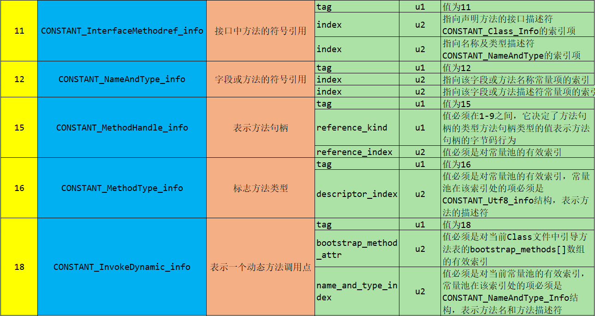

JVM
Author：Zhry
Email：2553179694@qq.com
Version：1.0.3
JVM第1篇 - 开篇概述1. 开发人员应该如何看待上层框架2. 架构师每天在思考什么？3. 为什么需要学习JVM？4. Java 跨平台的语言5. JVM 跨语言的平台6. 虚拟机7. JVM的位置8. JVM的整体结构9. Java代码执行流程10. JVM的架构模型11. JVM的生命周期12. JVM的发展历程第2篇 - 类加载子系统1. JVM 内存的结构2. 类加载器子系统的作用3. 类加载器ClassLoader角色4. 类的加载过程5. 类加载器分类6. 用户自定义类加载器7. 获取ClassLoader的途径8. 双亲委派机制9. 沙箱安全机制10. 其他11. 类的主动使用和被动使用第3篇 - 运行时数据区概述和线程1. 内存2. 线程共享3. Runtime4. 线程5. JVM系统线程第4篇 - 程序计数器1. PC Register 介绍2. 举例3. 两个常见问题4. CPU时间片第5篇 - 虚拟机栈1. 虚拟机栈出现的背景2. 内存中的栈和堆3. 虚拟机栈的基本内容4. 栈的优点5. 栈中可能出现的异常6. 设置栈内存的大小7. 栈中存储什么8. 栈运行的原理9. 栈帧的内部结构10. 局部变量表（Local Variables）10.1 字节码中方法内部结构的刨析10.2 关于Slot的理解10.3 静态变量与局部变量的对比10.4 补充说明11. 操作数栈11.1 代码追踪11.2 面试题常见的 i++和++i问题12. 栈顶缓存技术13. 动态链接14. 方法的调用15. 动态类型语言和静态类型语言16. 方法重写的本质17. 虚方法表18. 方法返回地址19. 一些附加信息20. 栈的相关面试题第6篇 - 本地方法接口1. 什么是本地方法2. 为什么需要使用Native Method3. 现状第7篇 - 本地方法栈1. 本地方法栈 （Native Method Stack）2. 本地方法的执行流程第8篇 - 堆1. 概述2. 堆的内存细分3. 堆空间大小的设置4. OutOfMemoryError 举例5. 年轻代和老年代6. 图解对象的分配过程7. 常用的调优工具8. Minor GC、Major GC和Full GC8.1 年轻代GC（Minor GC/YGC）的触发机制8.2 老年代GC（Major GC / Full GC）的触发机制8.3 Full GC 触发机制（后面细讲）9. 堆空间分代思想10. 堆内存分配策略11. 为对象分配内存：TLAB12. 小结堆空间的参数设置13. 堆是分配对象存储的唯一选择吗？14. 逃逸分析：代码优化14.1 栈上分配14.2 同步策略 - 锁消除14.3 分离对象或者标量替换14.4 总结第9篇 - 方法区1. 运行时数据区结构图2. 栈、堆、方法区之间的交互关系3. 方法区的基本理解4. Hotspot中方法区的演进5. 设置方法区大小和OOM6. 如何解决OOM7. 方法区的内部结构8. 方法区存储什么？9. 运行时常量池的理解10. 运行时常量池11. 方法区的使用举例12. 方法区的演进细节13. 永久代为什么要被元空间替换14. StringTable为什么需要调整15. 方法区的垃圾回收行为16. 总结第10篇 - 对象的实例化内存布局与访问定位1. 对象的的实例化2. 对象创建的六个步骤2.1 判断对象的对应的类是否加载、链接、初始化2.2 为对象分配内存2.3 处理并发安全问题2.4 初始化分配到的空间2.5 设置对象的对象头2.6 执行init方法进行初始化3. 对象的内存布局3.1 对象头（Header）3.2 实例数据（Instance Data）3.3 对齐填充（Padding）3.4 图示4. 对象的访问定位第11篇 - 直接内存1. 直接内存概述2. 非直接缓冲区3. 直接缓冲区4. 注意点第12篇 - 执行引擎1. 执行引擎概述2. 执行引擎的工作流程3. Java代码编译和执行的过程4. 机器码指令、汇编、高级语言的理解与执行过程4.1 机器码4.2 指令4.3 指令集4.4 汇编语言4.5 高级语言4.6 字节码4.7 C/C++源程序执行过程5. 解释器5.1 解释器工作机制（或工作任务）5.2 解释器的分类5.3 现状6. JIT编译器7. 热点代码以及探测方式7.1 方法调用计数器7.2 回边计数器8. Hotspot VM 可以设置程序的执行方式9. Hotspot VM 中JIT分类10. Graal编译器与AOT编译器第13篇 - StringTable1. String的基本特性2. String的内存分配3. 字符串的拼接操作4. 拼接操作的原理5. intern() 的使用6. intern()的空间效率测试：空间角度7. StringTable的垃圾回收8. G1的String去重操作第14篇 - 垃圾回收概述1. 什么是垃圾2. 为什么需要GC3. Java的垃圾回收机制第15篇 - 垃圾回收相关算法1. 垃圾标记阶段的算法之引用计数算法1.1 垃圾标记阶段：对象是否存活的判断1.2 方式一：引用计数算法1.3 方式二：可达性分析（或者根搜索算法、追踪性垃圾收集）2. 对象的finalization机制3. 对象生存还是死亡4. 使用MAT查看GC Roots溯源5. 使用Jprofiler进行GC Roots溯源6. 垃圾清除阶段算法之标记-清除算法7. 垃圾清除阶段算法之复制算法8. 垃圾清除阶段算法之标记 - 压缩（整理）算法9. 小结10. 分代收集算法11. 增量收集算法和分区算法第16篇 - 垃圾回收相关概念1. System.gc()的理解2. 内存溢出与内存泄漏2.1 内存溢出2.2 内存泄漏3. Stop The World4. 垃圾回收的并行与并发5. 安全点和安全区域6. Java中的引用6.1 强引用6.2 软引用6.3 弱引用6.4 虚引用6.5 引用队列6.6 拓展 - WeakHashMap6.7 总结第17篇 - 垃圾回收器1. GC分类与性能指标1.1 GC分类1.2 性能指标1.2.1 评估GC的性能指标：吞吐量（Throughput）1.2.2 评估GC的性能指标：暂停时间（pause time）1.2.3 吞吐量和暂停时间的对比1.2.4 关于GC控制台打印的一些参数说明2. 不同的垃圾回收器概述3. 垃圾回收器的组合关系4. 查看默认的垃圾收集器5. Serial回收器 - 串行回收6. ParNew回收器- 并行回收7. Parallel回收器 - 吞吐量优先8. CMS垃圾回收器 - 低延迟9. 小结10. G1垃圾收集器 - 区域化分代式10.1 简介10.2 G1回收器的特点（优点）10.3 G1回收器的缺点10.4 G1回收器的参数设置10.5 G1回收器的适用场景10.6 分区Region：化整为零10.7 G1回收垃圾的过程10.8 Remembered Set10.9 G1回收过程一：年轻代GC10.10 G1回收过程二：并发标记过程10.11 G1回收过程三：混合回收10.12 G1回收过程四：Full GC10.13 G1回收过程：补充10.14 G1回收器优化建议11. 7种经典的垃圾回收器总结12. 常用的显示GC日志的参数13. GC日志中垃圾回收参数数据的分析14. 垃圾回收器的新发展14.1 Open JDK12的shenandoah Gc:低停顿时间的Gc（实验性）14.2 令人震惊、具有革命性的ZGC15. 其他垃圾收集器：AliGC第18篇 - Class文件1. JVM基本组成 基于Hotspot虚拟机2. 学习的过程 - 从上到下3. 字节码文件的跨平台性4. Java的前端编译器5. 透过字节码指令看代码执行细节举例6. Class文件到底存储的是什么7. 什么是字节码指令（Byte Code）8. Class文件本质和内部数据类型9. Class文件的结构Class字节码文件结构9.1 Class文件版本号和平台的对应9.2 Class文件数据类型9.3 类型描述符9.4 常量类型和结构9.5 常量类型和结构细节9.6 访问标志9.7 字段表访问标志9.8 类索引、父类索引、接口索引9.9 属性的通用格式9.10 数据类型和默认初始值对应10. 分别解释其作用10.1 魔数 Magic Number10.2 Class文件的版本号10.3 常量池10.3.1 常量池计数器 10.3.2 常量池表10.3.3 总结10.4 访问标识10.5 类索引、父类索引、接口索引集合10.6 字段表集合10.6.1 字段计数器10.6.2 字段表10.7 方法表集合10.7.1 方法计数器10.7.2 方法表10.8 属性表集合10.8.1 attributes_count(属性计数器)10.8.2 attributes[] (属性表)10.8.3 部分属性详解11. 小结12. 使用 javap 指令解析 Class 文件12.1 解析字节码的作用12.2 javac -g 操作12.3 javap 的用法13. 总结第19篇 - 字节码指令集与解析举例1. 概述1.1 执行模型1.2 字节码与数据类型1.3 指令分类2. 加载与存储指令2.1 再谈操作数栈和局部变量表2.2 局部变量压栈指令2.3 常量入栈指令2.4 出栈装入局部变量表3. 算术运算符指令以及举例3.1 所有的运算符指令3.2 比较指令的说明4. 类型转换指令4.1 宽化类型转换(Widening Numeric Conversions)4.2 窄化类型转换(Narrowing Numeric Conversion)5. 对象的创建和访问指令5.1 创建指令5.2 字段访问指令5.3 数组操作指令5.4 类型检查指令6. 方法调用与返回值6.1 方法调用指令6.2 方法返回指令7. 操作数栈管理指令8. 控制转移指令8.1 条件跳转指令8.2 比较条件跳转指令8.3 多条件分支跳转8.4 无条件跳转9. 异常处理指令9.1 抛出异常指令9.2 异常处理与异常表10. 同步控制指令10.1 方法级的同步10.2 方法内指定指令序列的同步第20篇 - 类的加载过程详解1. 概述2. 大厂面试题3. 过程一：Loading（加载阶段）3.1 加载完成的操作3.2 二进制流获取的方式3.3 类模型与Class实例的位置3.4 数组类的加载4. 过程二：Linking（链接）阶段4.1 链接阶段之Verification（验证）4.2 链接阶段之Preparation（准备）4.3 链接阶段之Resolution（解析）5. 过程三：Initialization（初始化）阶段5.1 static 与 final 的搭配问题5.2 < client >() 的线程安全性问题5.3 类的初始化情况：主动使用VS被动使用6. 过程四：类的Using(使用)7. 过程五：类的Unloading(卸载)7.1 回顾：方法区的垃圾回收第21篇 - 再谈类的加载器1. 概述1.1 大厂面试题1.2 类加载器的分类1.3 类加载器的必要性1.4 命名空间1.5 类加载机制的基本特征2. 复习：类的加载器的分类2.1 引导类加载器2.2 扩展类加载器2.3 系统类加载器2.4 用户自定义类加载器3. 测试不同的类加载器4. ClassLoader源码解析4.1 ClassLoader的主要方法4.1.1 loadClass()的剖析4.2 SecureClassLoader 与 URLClassLoader4.3 ExtClassLoader 与 AppClassLoader4.4 Class.forName() 与 ClassLoader.loadClass()5. 双亲委派模型5.1 定义与本质5.2 优势与劣势5.3 破坏双亲委派机制5.4 热替换的实现6. 沙箱安全机制6.1 JDK1.0时期6.2 JDK1.1时期6.3 JDK1.2时期6.4 JDK1.6时期7. 自定义类加载器7.1 实现方式8. JDK9的新特性后会有期
第1篇 - 开篇概述
我们在学习过程中的真实系统架构如下 - 所有的操作都是基于JVM来进行的
我们学习的大部分都是上层建筑 - 框架 已经封装好的

1. 开发人员应该如何看待上层框架
- 一些有一定工作经验的开发人员，觉得框架、微服务才是重点，基础不重要，这是本末倒置
- 如果我们把核心类库比作数学公式的话，那么Java虚拟机的知识就是公式的推导过程

2. 架构师每天在思考什么？
- 如何让系统更快
- 如何避免系统出现瓶颈
3. 为什么需要学习JVM？
- 面试需要？
- 为了系统性能？
- 极客的精神
4. Java 跨平台的语言

5. JVM 跨语言的平台

6. 虚拟机
所谓虚拟机（Virtual Machine），就是一台虚拟的计算机，他是一款软件，用来执行一系列虚拟计算机指令。大体上，虚拟机可以分为系统虚拟机和程序虚拟机
Visual Box 和 VMware救赎徐系统虚拟机，完全对物理机的仿真
程序虚拟机代表就是Java虚拟机，是为了运行程序而设计
Java的核心就是Java虚拟机 - JVM
Java虚拟机就是二进制字节码的运行环境
- 一次编译，到处运行
- 自动内存管理
- 自动垃圾回收功能
7. JVM的位置

8. JVM的整体结构

9. Java代码执行流程

10. JVM的架构模型
- Java编译器输入的指令流基本上是一种基于栈的指令集架构，另一种架构是基于 寄存器的指令集架构
11. JVM的生命周期
虚拟机的启动
- Java虚拟机的启动时通过引导类加载器（Bootstrap Class Loader）创建一个初始类（initial Class ）来实现的。这个类是由虚拟机的具体实现指定的
虚拟机的执行
- 一个运行中的Java虚拟机有着一个清晰的任务：执行Java程序
- 程序开始执行时他才运行，程序结束的时候他就停止
- 执行一个所谓的Java程序的时候，真真正正执行的是一个Java虚拟机的进程
虚拟机的退出
- 程序的正常执行结束
- 程序在执行过程中遇到了异常或错误而异常终止
- 由于操作系统出现错误而导致Java虚拟机进程终止
- 某线程调用Runtime类或者System类的exit方法，或者Runtime类的halt方法，并且Java安全管理起页允许这次exit或者halt操作
- 除此之外，JNI（Java Native Interface）规范描述了用JNI Invocation API 来加载或卸载Java虚拟机时候，Java虚拟机退出的情况
12. JVM的发展历程
jdk1.0 - Sun - Sun Classic VM 第一款商用Java虚拟机
- 只提供解释器
- 如果使用JIT编译器，就要进行外挂。但是不能共存
- HotSpot内置此虚拟机
jdk1.2 - Sun - Exact VM
- 准确式内存管理
- 具备现在高效能虚拟机的雏形
- 热点探测 / 编译器解释器混合工作
jdk1.3 - Sun - HotSpot VM
- 至今也在使用
BEA - JRockit VM - 2008 被甲骨文收购
- 不包含解析器实现 全部代码使用即时编译器实现
- 是世界上最快的虚拟机
IBM - J9
- 最有影响力的三大商用虚拟机之一
KVM和CDC/CLDC HotSpot
- 老人机 传感器
Azul VM
- 与特定硬件平台，快
Liquid VM
- 运行在自己家的系统上
Apache Harmomy
- 被Sun公司抵制
Microsoft JVM
- 为了支持 IE3 中的 Java Applets
Taobao JVM
- 基于OpenJDK 开发的定制版 AlibabaJDK
Dalvik VM
- 谷歌开发的，应用于Android系统
Graal VM
- 执行任何的程序
第2篇 - 类加载子系统
1. JVM 内存的结构

2. 类加载器子系统的作用
- 具体图在上面
- 类加载器子系统负责从文件系统或者网络中加载Class文件，class文件在文件开始由特定的文件标识，是一个魔数
- ClassLoader只负责class文件的加载，至于class文件是否可以运行，则由 Execution Engine决定
- 加载的类信息存放于一块称为方法区的内存空间。除了类信息外，方法区中还会存放运行时常量池的信息，可能还包括字符串字面量和数字常量（这部分常量信息是Class文件中常量池部分的内存映射）
3. 类加载器ClassLoader角色
- class file 存在本地磁盘上，可以理解为设计师画在图纸上的模板，而最终这个模板在执行的时候是要加载到JVM当中来根据这个文件实例化出n个一摸一样的实例
- class file 加载到JVM中，被称为DNA元数据模板，放在方法区
- 在 .class 文件 -> JVM -> 最终称为元数据模板，此过程就要一个运输工具（类装载器Class Loader）扮演一个快递员的角色
4. 类的加载过程


加载
- 通过一个类的全限定名获取定义此类的二进制字节流
- 将这个字节流代表的静态存储结构转化为方法区的运行时数据结构
- 在内存中生成一个代表这个类的java.lang.Class对象，作为方法区的这个类的各种数据的访问入口
加载 .class 文件的方式
- 从本地系统中直接加载
- 通过网络获取，典型场景：Web Applet
- 从Zip压缩包中获取，称为日后jar、war格式的基础
- 运行时计算生成，使用最多的就是：动态代理技术
- 从其他文件生成，典型场景：JSP应用
- 从专有数据库中提取.class文件，比较少见
- 从加密文件中获取，典型的防Class文件被反编译的保护措施
链接
验证
- 目的在于确保Class文件的字节流中包含信息符合当前的虚拟机要求，保证被加载类的正确性，不会危害虚拟机的自身安全
- 注意包括四种验证，文件格式验证，元数据验证，字节码验证，符号引用验证
准备
- 为类变量分配内存并且设置该类变量的默认初始值，即0值
- 这里不包含用final修饰的static，因为final在编译的时候就会分配了，准备阶段会显示初始化
- 这里不会为实例变量分配初始化，类变量会分配在方法区中，而实例变量是会随着对象一起分配到Java堆中
解析
- 就常量池内的符号引用转化为直接引用的过程
- 事实上，解析操作往往会随着JVM在执行完初始化之后再执行
- 符号引用就是一组符号来描述所引用的目标。符号引用得字面量形式明确定义在《Java虚拟机规范》的Class文件格式中，直接引用的就是直接指向目标的指针、相对偏移或者一个简介定位到目标的句柄
- 解析动作主要针对类或者接口、字段、类方法、接口方法、方法类型。对应常量池中的CONSTANT_Class_info、CONSTANT_Fieldref_info、CONSTANT_Methodref_info等
public class HelloApp {
// prepare：a 赋值为默认值-零值
// 初始化的时候：a赋值为1
// 数据的类型不一样，初始值也不一样
private static int a = 1;
public static void main(String[] args) {
System.out.println(a);
}
}
初始化操作
- 初始化阶段就是执行类构造器方法
()的过程 - 此方法不需要定义，是Javac编译器自动收集类中所有的类变量的赋值动作和静态代码块中的语句合并而来
- 构造器方法中指令按语句再源文件中出现的顺序执行
()不同于类的构造器。（关联：构造器是虚拟机视角下的 ()） - 若该类有父类，JVM会保证子类的
()执行之前，父类的 ()已经执行完毕 - 虚拟机必须保证一个类的
() 方法在多线程下被同步加锁
public class ClinitTest {
static class Father {
public static int A = 1;
static {
A = 2;
}
}
static class Son extends Father {
public static int B = A;
}
public static void main(String[] args) {
// 加载Father类
// 加载Son类
System.out.println(Son.B);
}
}

5. 类加载器分类
- JVM支持两种类型的类加载器，分别是引导类加载器（Bootstrap ClassLoader）和 自定义加载器（User-Defined ClassLoader）
- 从概念上讲，自定义类加载器一般指的是程序中由开发人员自定义的一类类加载器，但是Java虚拟机规范没有这样定义，而是将所有的派生于抽象类ClassLoader的类加载器都划分为自定义类加载器
- 无论加载器的类型如何划分，在程序中我们最常见的类加载器只有3个，如下

public class ClassLoaderTest {
public static void main(String[] args) {
// 获取系统类加载器
ClassLoader systemClassLoader = ClassLoader.getSystemClassLoader();
// sun.misc.Launcher$AppClassLoader@18b4aac2
System.out.println(systemClassLoader);
// 获取其上层：拓展类加载器
ClassLoader parent = systemClassLoader.getParent();
// sun.misc.Launcher$ExtClassLoader@1540e19d
System.out.println(parent);
// 获取顶层加载器 BootStrapClassLoader 获取不到 因为C/C++写的
ClassLoader parent1 = parent.getParent();
// null
System.out.println(parent1);
// 对于用户来说 默认使用的是系统类加载器
ClassLoader classLoader = ClassLoaderTest.class.getClassLoader();
// sun.misc.Launcher$AppClassLoader@18b4aac2
System.out.println(classLoader);
// sun.misc.Launcher$ExtClassLoader@1540e19d
ClassLoader parent2 = classLoader.getParent();
System.out.println(parent2);
// 在上层
// null
ClassLoader parent3 = parent2.getParent();
System.out.println(parent3);
// Java的核心类库都是使用引导类加载的
// String 类是使用引导类加载器加载的
ClassLoader classLoader1 = String.class.getClassLoader();
System.out.println(classLoader1);
}
}
虚拟机自带的加载器
启动类加载器（引导类加载器 Bootstrap ClassLoader）
- 这个类加载使用C/C++语言实现的，嵌套在JVM内部
- 它用来加载Java的核心库（JAVA_HOME/jre/lib/rt.jar、resources.jar或者sun.boot.class.path路径下的内容），用于提供JVM自身需要的类
- 并不继承自java.lang.ClassLoader ，没有父加载器
- 加载拓展类和应用程序类加载器，并指定为他们的父加载器
- 处于安全考虑，Bootstrap启动类只加载包名为 java、javax、sun等开头的类
拓展类加载器 （Extension ClassLoader）
- Java语言编写，由 sun.misc.Launcher&ExtClassLoader 实现
- 派生于ClassLoader类
- 父类加载器为启动类加载器
- 从java.ext.dirs系统属性所指定的目录中加载类库，或者从JDK的安装目录jre/lib/ext子目录（拓展目录）下加载类库。如果用户创建的Jar放在此目录下，也会自带由拓展类加载器加载。
应用程序类加载器（系统类加载器 AppClassLoader）
- Java语言编写，由 sun.misc.Launcher&AppClassLoader实现
- 派生于ClassLoader类
- 父类加载器为拓展类加载器
- 它负责加载的是环境变量classpath或者系统属性 java.class.path 指定路径下的类库
- 该类加载时程序中默认的类加载器，一般来说，Java应用程序都是由它来完成加载
- 通过ClassLoader#getSystemClassLoader()方法可以获取到该类加载器
public class ClassLoaderTest1 {
public static void main(String[] args) {
System.out.println("启动类加载器");
URL[] urLs = Launcher.getBootstrapClassPath().getURLs();
for (URL urL : urLs) {
System.out.println(urL.toString());
}
System.out.println("拓展类加载器");
String property = System.getProperty("java.ext.dirs");
for (String path : property.split(";")) {
System.out.println(path);
}
}
}
启动类加载器
file:/D:/jdk/jdk1.8/jre/lib/resources.jar
file:/D:/jdk/jdk1.8/jre/lib/rt.jar
file:/D:/jdk/jdk1.8/jre/lib/sunrsasign.jar
file:/D:/jdk/jdk1.8/jre/lib/jsse.jar
file:/D:/jdk/jdk1.8/jre/lib/jce.jar
file:/D:/jdk/jdk1.8/jre/lib/charsets.jar
file:/D:/jdk/jdk1.8/jre/lib/jfr.jar
file:/D:/jdk/jdk1.8/jre/classes
拓展类加载器
D:\jdk\jdk1.8\jre\lib\ext
C:\WINDOWS\Sun\Java\lib\ext
6. 用户自定义类加载器
在Java的日常应用程序开发中，类的加载几乎是由上述3种类加载器相互配合执行的，在必要的时候，我们还可以自定义类加载器，来定制类的加载方式
为什么需要自定义类加载器？
- 隔离加载类
- 修改类加载的方式
- 拓展加载源
- 防止源码泄漏
用户自定义类加载器实现步骤
- 开发人员可以通过继承抽象类 java.lang.ClassLoader类的方法，实现自己的类加载器，以满足一些特殊的要求
- 在JDK1.2之前，在自定义类加载器的时候，总是会去继承ClassLoader类并重写loadClass()方法，从而实现自定义的类加载器，但是在JDK1.2之后，已经不在建议用户去覆盖loadClass()方法，而是建议把自定义类加载逻辑写在findClass()方法中
- 在编写自定义类加载器的时候，如果没有太过于复杂的有要求，可以直接继承URLClassLaoder类，这样可以避免自己编写findClass() 方法以及器获取字节码流的方式，使得自定义类加载器编写更加简洁
7. 获取ClassLoader的途径
获取当前类的ClassLoader
- clazz.getClassLoader()
获取当前线程上下文的ClassLoader
- Thread.currentThread().getContextClassLoader()
获取系统的ClassLoader
- ClassLoader.getSystemClassLoader()
获取调用者的ClassLoader
- DriverManager.getCallerClassLoader
8. 双亲委派机制
- Java虚拟机对class文件采用的是按需加载的方式，也就是说当需要使用该类的时候才会将它的class文件加载到内存生成class对象。而且加载某个类的class文件的时候，Java虚拟机采用的是 双亲委派机制 ，也就是把请求交给父类处理，它是一种任务委派机制

工作原理
- 如果一个类加载器收到了类加载的请求，它并不会自己先去加载，而是把这个请求委托给父类的加载器去执行
- 如果父类加载器还存在器父类加载器，则进一步向上委托，一次递归请求最终到达顶层的启动类加载器
- 如果父类加载器可以完成类加载任务，就成功返回，如果父类加载器无法完成此任务，子加载器才会尝试自己去加载，这就是双亲委派机制
接口是由引导类加载器加载，而接口的实现则是由系统类加载器加载
优势
避免类的重复加载
保护程序安全，防止核心API被随意篡改
- 自定义类：java.lang.String
- 自定义类：java.lang.IcStart
抛出异常 java.lang.SecurityException: Prohibited package name: java.lang
9. 沙箱安全机制
- 自定义String类，但是在加载自定义String类的时候会率先使用引导类加载器加载，而引导类加载器在加载的过程中会先加载JDK自带的文件(rt.jar包中的java\lang\String.class)，报错信息是没有main方法，就是因为加载的是 rt.jar 包中的String类。这样就可以保证对Java核心源代码的保护，这就是沙箱安全机制
10. 其他
在JVM中表示两个Class对象是否为同一个类存在的两个必要条件
- 类的完整类名必须一致 - 也就是全限定类名必须完全一致
- 加载这个类的ClassLoader(指的是ClassLoader实例对象)必须相同
换句话说，在JVM中，即使这两个类对象(Class对象)来源于同一个Class文件，被同一个虚拟机加载，只要加载它们的ClassLoader对象不同，那么这两个类对象也是不相等的
JVM必须知道一个类型是由启动加载器的还是由用户加载器加载的。如果一个类型是由用户类加载器加载的，那么JVM会将这个类加载器的一个引用作为类型信息的一部分保存在方法区内，当解析一个类型到另一个类型的引用的时候，JVM需要保证这两个类型的加载器是相同的。
11. 类的主动使用和被动使用
主动使用的七种情况
创建类的实例
访问某个类的或者接口的静态变量，或者对该静态变量赋值
调用类的静态方法
反射(Class.forName("xxx.xxx.xxx"))
初始化一个类的子类
Java虚拟机启动的时候被标记为启动类的类
Java7开始支持动态的语言支持
- java.lang.invoke.MethodHandle 实例的解析结果
- REF_getStatic、REF_putStatic、REF_invokeStatic对应的类没有初始化，则初始化
除了以上的七种情况，其他使用Java类的方式都被看作是对类的被动使用，都不会导致类的初始化
第3篇 - 运行时数据区概述和线程
1. 内存
- 内存是非常重要的系统资源，是硬盘和CPU的中间仓库和桥梁，承载着操作系统和应用程序的实时运行。
- JVM的内存布局规定了Java在运行过程中内存申请、分配、管理的策略，保证了JVM的高效稳定运行。
- 不同的JVM对于内存的划分方式和管理机制存在着部分差异。结合JVM虚拟机规范，来谈论一下经典的JVM内存布局

2. 线程共享
Java虚拟机定义了若干种程序运行期间会使用到的运行时数据区，其中有一下会随着虚拟机的启动而创建，岁着虚拟机的销毁而销毁。
另外一些则是与线程一一对应的，这些与线程对应的数据区域会随着线程开始和结束而创建和销毁
灰色的是单独线程私有的，红色的是多个线程共享的
- 每个线程：独立包括程序计数器、栈、本地栈
- 线程间共享：堆、堆外内存（永久代或者元空间、代码缓存）

3. Runtime
- 每个JVM只有一个Runtime实例。即为运行时环境，相当于内存结构的中间的哪个框框：运行时环境。
4. 线程
线程是一个程序里面的运行单元。JVM允许一个应用有多个线程并行执行
在HotSpot JVM 里，每个线程都与操作系统的本地线程直接映射。
- 当一个Java线程准备好执行以后，此时一个操作系统的本地线程也同时创建，Java线程执行结束之后，本地线程也会回收
操作系统负责所有线程的安排调度到任何一个可用的CPU上，一旦本地线程初始化成功，它就会调用Java线程中的run()方法
守护线程、普通线程
5. JVM系统线程
如果你使用jconsole或者是任何一个调试工具。都能看到在后台有许多线程在运行。这些后台线程不包括调用 public static void main(String[] args)的main线程以及所有这个main线程自己创建的线程
这些主要的后台系统线程在Hotspot JVM 主要是以下几个
- 虚拟机线程： 这种线程的操作是需要JVM达到安全点才会出现，这些操作必须在不同的线程种发生的原因是他们都需要JVM达到安全点，这样堆才不会变化，这种线程的执行类型包括 "stop-the-world"的垃圾收集器，线程栈收集，线程挂起以及偏向锁撤销
- 周期任务线程：这种线程是时间周期事件的体现（比如中断），他们一般用于周期性操作的任务调度
- GC线程：这种线程对在JVM里面不同种类的垃圾收集行为提供了支持
- 编译线程：这种线程会在运行时将字节码编译到本地代码
- 信号调度线程：这种线程接受信号并发送给JVM，在它内部通过调用适当的方法进行处理。
第4篇 - 程序计数器
1. PC Register 介绍

- JVM中的程序计数寄存器（Program Counter Register）中，Register的命名源于CPU的寄存器，寄存器存储指令相关的线程信息。CPU只有把数据装载到寄存器才能够运行
- 这里，并非广义上的所指的物理寄存器，或许将其翻译为PC计数器（或指令计数器）会更加的贴切（也称为程序钩子），并且也不容易引起一些不必要的误会。JVM中的PC寄存器是对物理PC寄存器的一种抽象模拟

作用
- PC寄存器用来存储指向下一条指令的地址，也即将要执行的指令代码，由执行引擎读取下一条指令。
介绍
- 它是一块很小的内存空间，几乎可以忽略不计，也是运行速度最快的存储区域
- 在JVM规范中，每个线程都有它自己的程序计数器，是线程私有的，生命周期与线程的生命周期保持一致
- 任何时间一个线程都只有一个方法在执行，也就是所谓的当前方法，程序计数器会存储当前线程执行Java方法的JVM指令地址，或者，如果是在执行native方法，则是为指定值（underfed）
- 它是程序控制流的指示器、分支、循环、跳转、异常处理、线程恢复等基础功能都需要依赖这个计数器来完成。
- 字节码解释器工作的时候就是通过改变这个计数器的值来选取下一条需要执行的字节码指令
- 它是唯一的一个在Java虚拟机规范中没有规定任何OutOfMemoryError的区域
2. 举例
public class PCRegisterTest {
public static void main(String[] args) {
int i = 10;
int j = 12;
int k = i + j;
String s = "abs";
System.out.println(k);
System.out.println(s);
}
}
public static void main(java.lang.String[]);
descriptor: ([Ljava/lang/String;)V
flags: ACC_PUBLIC, ACC_STATIC
Code:
stack=2, locals=5, args_size=1
0: bipush 10
2: istore_1
3: bipush 12
5: istore_2
6: iload_1
7: iload_2
8: iadd
9: istore_3
10: ldc #2 // String abs
12: astore 4
14: getstatic #3 // Field java/lang/System.out:Ljava/io/PrintStream;
17: iload_3
18: invokevirtual #4 // Method java/io/PrintStream.println:(I)V
21: getstatic #3 // Field java/lang/System.out:Ljava/io/PrintStream;
24: aload 4
26: invokevirtual #5 // Method java/io/PrintStream.println:(Ljava/lang/String;)V
29: return

3. 两个常见问题
- 使用PC寄存器存储字节码指令地址有什么用呢？
- 为什么使用PC寄存器记录当前线程的执行地址呢？
因为CPU需要不停的切换各个线程，这时候切换回来以后，就得知道接着从哪开始继续执行
JVM的字节码解释器就是需要通过改变PC寄存器的值来明确下一条具体应该执行那条字节码指令
- PC寄存器为什么设定为线程私有的？
我们都知道所谓的多线程在一个特定的时间段只会执行其中的某一个线程的方法，CPU会不停的做任务切换，这样就必然会导致经常中断和恢复，如何保证分毫无差呢？为了能够准确记录各个线程正在执行的当前字节码指令的地址，最好的办法就是为每一个线程都分配一个PC寄存器，这样以来各个线程之间就可以独立计算，从而不会出现相互干扰的情况
由于CPU时间片轮转限制，众多线程在并发执行的过程中，任何一个确定的时刻，一个处理器或者多核处理器中的一个内核，只会执行某个线程中的一条指令
4. CPU时间片
- CPU时间片就是CPU分给各个程序的时间，每个线程被分配一个时段，这就是时间片
- 在宏观上：我们开启多个应用程序，每个程序并行，同时运行
- 但是在微观上：由于只有一个CPU，一次只能处理程序要求的一部分，如何处理公平，一种方法就是引入时间片，每个程序轮流执行。
第5篇 - 虚拟机栈
1. 虚拟机栈出现的背景
- 由于跨平台的设计，Java指令都是根据栈来设计的。不同平台的CPU架构不同，所以不能设计为基于寄存器的
- 优点是跨平台，指令集少，编译器容易实现，确定是性能下降，实现同样的功能需要更多的指令
2. 内存中的栈和堆
- 栈是运行时的单位，而堆是存储的单位
- 即：栈是解决程序的运行问题，即程序如何执行，或者说如何处理数据。堆解决的问题是数据存储的问题。即数据怎么放，放在哪儿
3. 虚拟机栈的基本内容
Java虚拟机栈是什么？
- Java虚拟机栈（Java Virtual Machine Stack），早期也叫Java栈，
- 每个线程在创建的时候都会创建一个虚拟机栈，其内部保存的一个个栈帧（Stack Frame）对应的一次次的方法调用
- 是线程私有的
生命周期
- 生命周期和线程一致
作用
- 主管Java程序的运行，它保存方法的局部变量（8种基本数据类型、对象的引用地址）、部分结果。并参与方法的调用和返回。
4. 栈的优点
栈式一种快速有效的分配存储的方式，访问速度仅次于程序计数器
JVM直接对Java栈的操作只有2个
- 每个方法执行，伴随着进栈（入栈、出栈）
- 执行结束后的出栈工作
对于栈来说不存在垃圾回收问题
- 无GC 有OOM
5. 栈中可能出现的异常
Java虚拟机规范允许Java栈的大小式动态的或者式固定不变的
- 如果采用固定大小的Java虚拟机栈，那每一个线程的Java虚拟机栈容量可以在线程创建的时候独立选定，如果请求超过虚拟机栈的最大容量，Java虚拟机将会抛出 StackOverflowError 异常
- 如果Java虚拟机栈可以动态扩展，并且在尝试扩展的时候无法申请到足够的内存，或者在创建新的线程的时候，没有足够的内存去创建虚拟机栈。那么Java虚拟机将会抛出 OutOfMemoryError 异常
// StackOverflowError
public class InvokeSelf {
public static void main(String[] args) {
main(args);
}
}
6. 设置栈内存的大小
栈内存大小：-Xss 以字节为单位 ，单位是可以调节的
7. 栈中存储什么
- 每个线程都有自己的栈，栈中的数据都是以栈帧（Stack Frame）的格式存在
- 在这个线程上正在执行的每个方法都各自对应一个栈帧（Stack Frame）
- 栈帧式一个内存区块，是一个数据集，维系着方法执行过程中的各种数据信息
8. 栈运行的原理
- JVM直接对Java栈的操作只有两个，就是对栈帧的 压栈 和 出栈，遵循 先进后出/后进先出 原则
- 在一条活动的线程中，一个时间点上，只会有一个活动的栈帧。即只有当前正在执行的方法的栈帧（栈顶栈帧）是有效的，这个栈帧被称为 当前栈帧 （Current Frame），与当前栈帧相对应的方法就是当前方法（Current Method），定义这个方法的类就是 当前类（Current Class）
- 执行引擎运行所有的字节码指令只针对当前栈帧进行操作
- 如果在该方法中调用了其他方法，对应的新的栈帧会被创建出来，放在栈的顶端，成为新的当前栈帧
- 实例代码
public class InvokeMethodFrame {
public static void main(String[] args) {
System.out.println("InvokeSelf.main 开始执行...");
method1();
System.out.println("InvokeSelf.main 执行结束...");
}
public static void method1() {
method2();
System.out.println("InvokeSelf.method1");
}
public static void method2() {
method3();
System.out.println("InvokeSelf.method2");
}
public static void method3() {
method4();
System.out.println("InvokeSelf.method3");
}
public static void method4() {
System.out.println("InvokeSelf.method4");
}
}
- 执行结果
InvokeSelf.main 开始执行...
InvokeSelf.method4
InvokeSelf.method3
InvokeSelf.method2
InvokeSelf.method1
InvokeSelf.main 执行结束...
- 不同的线程中所包含的栈帧是不允许存在相互引用的，即不可能在一个栈帧之中引用另外一个线程的栈帧
- 如果当前方法调用了其他的方法，方法返回之际，当前栈帧会传回次方法的执行结果给前一个栈帧，接着虚拟机会丢弃当前的栈帧，使得前一个栈帧重新成为当前栈帧
- Java方法有两种返回函数的方式，一种是正常的函数返回，使用return指令，另外一种是抛出异常，不管使用那种方式，都会导致栈帧被弹出
9. 栈帧的内部结构
- 局部变量表（Local Variables）
- 操作数栈（Operand Stack）（或表达式栈）
- 动态链接（Dynamic Linking）（或指向运行时常量池的方法引用）
- 方法返回地址（Return Address）（或方法正常退出或者异常退出的定义）
- 一些附加信息

10. 局部变量表（Local Variables）
- 局部变量表也被称为局部变量数组或本地变量表
- 定义一个数字数组，主要用于存储方法参数和定义在方法体内的局部变量，这些数据类型包括各类型的基本数据类型、对象引用（reference），以及returnAddress类型
- 由于局部变量表是建立在线程的栈上，是线程的私有数据。因此不存在数据不安全的问题
- 局部变量表所需的容量大小是编译器确定下来的，并保存在方法的Code属性的maximum local variables数据数据项中，在方法运行期间是不会改变局部变量表的大小的
- 方法嵌套调用的次数由栈的大小决定，一般来说，栈越大，方法嵌套调用次数越多。而对一个函数而言，它的参数和局部变量越多，使得局部变量表膨胀，它的栈帧就越大，一满足方法调用所需传递的信息增加的需求。进而函数调用就会占用更多的栈空间，而导致其嵌套调用的次数就会减少
- 局部变量表中的变量只在当前方法中调用有效，在方法执行的时候，虚拟机通过使用局部变量表完成参数值到参数列表的传递过程。当方法调用结束的时候，随着方法栈帧的销毁，局部变量表也会随之销毁。
10.1 字节码中方法内部结构的刨析


10.2 关于Slot的理解
参数值的存放总是在局部变量数组的index0开始，到数组长度 -1 的索引结束
局部变量表。最基本的存储单元是Slot（变量槽）
局部变量表中存放编译器可知的各种基本数据类型（8种），引用类型（reference），returnAdderss类型的变量
在局部变量表种。32位以内的类型只占用一个Slot（包括returnAddress类型），64位的类型（long和double）占用2个Slot
- byte、short、char在存储之前被转换为int，boolean也被转为int，0代表false，非0代表true
- long和double则占据两个Slot
JVM会为局部变量表中的每一个Solt都分配一个访问索引，通过这个索引即可成功访问到局部变量表中指定的局部变量值
当一个实例方法被调用的时候，它的方法参数和方法体内部定义的局部变量将会 按照顺序被复制 到局部变量表中的每一个Slot上
如果需要访问局部变量表中的一个64bit的局部变量只值的时候，只需要使用前一个索引即可，（比如：访问long和double类型的变量）
如果当前帧是由构造方法或者实例方法创建的，那么 该对象引用this将会存放在index为0的Slot处，其余的参数按照参数表顺序继续排列
- 现在我们就可解释为什么静态方法中无法使用this调用
- 因为this变量不存在与当前方法的局部变量表中


Slot的重复利用
- 栈帧中的局部变量表中的槽位是可以重用的，如果一个局部变量过了其作用域，那么在其他作用域只会申明的新的局部变量就很有可能会复用过期局部变量的槽位，从而达到节省资源的目的
10.3 静态变量与局部变量的对比
变量的分类
数据类型：基本数据类型、引用数据类型
在类中的位置：·
成员变量：在使用的时候是有默认初始化值
- 被static修饰的：类变量 - linking的prepare阶段 - 给类变量默认赋值 -> initial ，给类变量显示赋值 （静态代码块中）
- 没有被static修饰的：实例变量 - 随着对象的创建，会在堆空间进行分配实例变量空间，并进行默认赋值
局部变量：没有默认初始化值，在使用之前必须初始化
10.4 补充说明
- 在栈帧中，与性能调优关系最密切的就是前面提到的局部变量表，在方法执行时，虚拟机使用局部变量表完成方法的传递。
- 局部变量表中的变量也是重要的垃圾回收根节点，只要被局部变量表中直接或者间接引用的对象都不会被回收
11. 操作数栈
栈可以使用数组和链表来实现
每一个独立的栈帧中除了包含局部变量表意外，还包含一个 后进先出（Last-In-First-Out）的操作数栈。也可以称之为表达式栈，（Expression Stack）
操作数栈，在方法执行的过程中，根据字节码指令，往栈中写入数据或者提取数据，即入栈（push）/出栈（pop）
- 某些字节码指令将值压入操作数栈，其余的字节码指令将操作数取出栈，使用它们后再把结果压入栈
- 比如：执行复制、交换、求和等操作

如果被调用的方法带有返回值的话，其返回值将会被压入当前栈帧的操作数栈中，并更新PC寄存器的下一条需要执行的字节码指令
操作数栈中元素的数据类型必须与字节码指令的序列严格匹配，这由编译器再编译期间进行验证，同时在类加载中的类检验阶段的数据流分析阶段要再次验证
我们说的Java虚拟机的解释引擎时基于栈的执行引擎，其中的栈指的就是操作数栈
操作数栈，主要用来保存计算过程中的中间结果，同时作为计算过程中变量的临时存储空间
操作数栈就是JVM执行引擎的一个工作区，当一个方法刚开始执行的时候，一个新栈帧也随之被创建出来，这个方法的操作数栈时空的
每一个操作数栈都会拥有一个明确的栈深度用于存储数值，其所需的最大深度在编译器就定义好了，保存在方法的Code属性中，为max_stack的值
栈中的任何一个元素都可以是任意的Java数据类型
- 32bit的类型占用一个栈单位深度
- 62bit的类型占用两个栈单位深度
操作数栈 并发采用访问索引的方式来进行数据访问的，而是只能通过标准的入栈（push）和出栈（pop）操作来完成一次数据访问
11.1 代码追踪
public class JvmStackTest {
public static void main(String[] args) {
}
public void testAddOperation() {
byte i = 15;
int j = 8;
int k = i + j;
}
}
public void testAddOperation();
descriptor: ()V
flags: ACC_PUBLIC
Code:
// 栈的最大深度为2 局部变量表大小为4 其中非静态方法还有个this在index=0的位置
stack=2, locals=4, args_size=1
0: bipush 15
2: istore_1
3: bipush 8
5: istore_2
6: iload_1
7: iload_2
8: iadd
9: istore_3
10: return
LineNumberTable:
line 16: 0
line 17: 3
line 18: 6
line 19: 10
LocalVariableTable:
Start Length Slot Name Signature
0 11 0 this Lcn/icanci/jvm/jmm/JvmStackTest;
3 8 1 i B
6 5 2 j I
10 1 3 k I
}
SourceFile: "JvmStackTest.java"
11.2 面试题常见的 i++和++i问题
放在字节码解释
public void testIadd() {
int i = 1;
i++;
int j = 1;
++j;
}

12. 栈顶缓存技术
- 前面提到过，基于栈式架构的虚拟机所使用的零地址指令更加紧凑，但是完成一项操作的时候必然需要使用更多的入栈的出栈指令，这同时也就意味着需要将更多的指令分派（instruction dispatch）次数和内存读/写次数
- 由于操作数是存在内存中的，因此频繁的执行内存读/写操作必然会影响执行速度。为了解决这个问题，Hotspot JVM的设计者们提供了栈顶缓存技术（ToS Top-of-Stack Cashing）将栈顶元素全部缓存在物理的CPU的寄存器中，以此降低对内存的读/写次数。提升执行引擎的执行效率
13. 动态链接

- 每一个栈帧内部都包含一个指向 运行时常量池 该栈帧所属方法的引用，包含这个引用的目的即使为了支持当前方法的代码能够实现 动态链接（Dynamic Linking） 比如：involvedynamic指令
- 在Java源文件被编译到字节码文件的时候，所有的变量和方法引用都作为符号引用）（Symbolic Reference）保存在class文件的常量池中。比如：描述一个方法调用了另外的其他方法的时候。就是通过常量池中指向方法的符号引用来表示的，那么 动态链接的作用就是将这些符号引用转换为调用方法的直接引用

为什么需要常量池呢？
- 为了提供一些符号和常量，便于指令的识别。
14. 方法的调用
在JVM中，将符号引用转换为调用方法的直接引用与方法的绑定机制相关
静态链接
- 当一个字节码文件被装载到JVM内部的时候，如果被调用的 目标方法在编译器可知，且在运行期保持不变时，这种情况下将调用方法的符号引用转换为直接引用的过程叫做静态链接
动态链接
- 如果 被调用的方法在编译期间无法被确定下来，也就是说，只能够在程序运行期将调用方法的符号引用转换为直接引用，由于这种引用转换过程具备动态性，因此也就称之为动态链接。
对应的方法绑定机制为：早期绑定（Early Binding）和晚期绑定（Late Binding） 绑定一个字段、方法或者类在符号引用替换为直接引用的过程，仅仅发生一次
早期绑定
- 早期绑定就是指被调用的 目标方法如果在编译期间可知，且运行期保持不变时，即可将这个方法与所属的类型进行绑定，这样一来，由于明确了被调用的目标方法究竟是哪一个，因此可以使用静态链接的方式将符号引用转为直接引用
晚期绑定
- 如果被调用的方法在编译期无法被确定下来，只能够在程序运行期间根据实际的类型绑定相关的方法，这种绑定叫做晚期绑定。
随着高级语言的横空出世，类似Java一样的基于面向对象的编程语言如今越来越多，尽管这类编程语言在语法风格上存在一定的差别，但是彼此之间始终保持一个共性，那就是都支持封装、继承、多态等面向对象的特征，既然这一类的编程语言具备多态特性，那么自然也就具备早期绑定和晚期绑定两种绑定方式
Java中任意一个普通方法都具备虚函数的特征，如果某个方法不想用于虚函数的特征的时候，可以使用final关键字来标记
虚方法与非虚方法
非虚方法
- 如果方法在编译期就确定了具体的调用版本，这个版本在运行时候是不可变的，这样的方法叫做非虚方法
- 静态方法、私有方法、final方法、实例构造器、父类方法都是非虚方法
虚方法
- 除了非虚方法都是虚方法
虚拟机中提供的方法调用的指令
普通调用指令
- invokestatic：调用静态方法，解析阶段确定唯一方法版本
- invokespecial：调用
方法、私有以及父类方法、解析阶段确定唯一方法版本 - invokevirtual：调用所有的虚方法
- invokeinterface：调用接口方法
动态调用指令
- invokedynamic：动态解析出需要调用的方法，然后执行
前四条指令固化在虚拟机内部，方法的执行调用不可人为干涉，而invokedynamic指令则支持用户确定方法版本，其中 invokestatic指令和invokespecial指令调用的方法称为非虚方法。其余的（final修饰的除外）称为虚方法
关于involvedynamic指令
- JVM字节码指令集一直比较稳定，一直到Java7中才增加了一个invokedynamic指令，这是Java为了实现[动态类型语言]支持而做的一种表达方式
- 但是在Java7中并没有提供直接生成involvedynamic指令的方法，需要借助ASM这种底层字节码工具来生成involvedynamic指令。直到Java8的Lambda表达式的出现，involvedynamic指令才有了直接的生成方式
- Java7中增加的动态语言类型支持的本质是对Java虚拟机规范的修改，而不是对Java语言规则的修改，这里比较复杂，最直接的受益者就是运行在Java平台的动态语言的编译器。
15. 动态类型语言和静态类型语言
- 动态类型语言的静态类型语言的区别就是对类型的检查是在编译期还是在运行期，满足前者就是静态类型语言，满足后者就是动态类型语言。
- 静态类型语言就是判断变量自身的类型信息；动态类型语言是判断变量值的信息，变量没有类型信息，变量值才有类型信息
16. 方法重写的本质
找到操作数栈顶的第一个元素随执行的对象的实际类型，记作 C
如果在类型 C 中找到与常量中的描述符合简单名称都相符的方法，则进行访问权限校验，如果通过则返回这个方法的直接引用，查找过程结束；如果不通过，就返回 java.lang.IllegalAccessError异常
否则，按照继承关系从下往上一依此对 C 的各个父类进行第2步的搜索和验证过程
如果始终没有找到，就抛出java.lang.AbstractMethodError异常
java.lang.IllegalAccessError异常
- 程序试图访问一个属性或者调用一个方法的时候，这个属性或者方法没有权限进行访问。
17. 虚方法表
在面向对象的编程中，会很繁琐的使用到动态分派，如果每次动态分派多的过程中都要重新在类的方法元数据中搜索合适的目标的话，就可能影响到执行效率。因此，为了提高性能，JVM采用在类的方法区建立一个虚方法表（virtual method table）（非虚方法不会出现在表中）来实现，使用索引表来代替查找
每个类都有一个虚方法表，表中存放着各个方法的实际入口
虚方法表在什么时候会被创建？
- 在类加载的链接阶段被创建并开始初始化，类的变量初始值准备完成之后，JVM会把该类的方法表 也初始化完毕

18. 方法返回地址
存放着调用该方法的PC寄存器的值
一个方法的结束，有两种方式
- 正常处理完成
- 出现未处理的异常，非正常退出
无论通过那种方式退出，在方法退出后都返回到该方法被调用的位置，方法正常退出的时候，调用者的PC寄存器的值作为返回地址，即调用该方法的指令的下一条指令的地址。而通过异常退出的，返回的地址是要通过异常表来确定，栈帧中一般不会保持这部分的信息。
本质上，方法的退出即使当前栈帧出栈的过程。此时，需要恢复上层方法的局部变量表、操作数栈、讲返回值压入调用者栈帧的操作数栈、设置PC寄存器值等，让调用者方法继续执行下去
正常完成出口和异常完成出口的区别在于：通过异常出口完成退出的不会给它的上层调用者产生任何的返回值
当一个方法开始执行之后，只有两种方式可以退出这个方法
- 执行引擎遇到任何一个方法返回的字节码指令（return），会有返回值传递给上层的方法调用者，简称 正常完成出口
一个方法在正常调用完成之后究竟需要使用哪一个返回指令还需要根据方法返回值的实际数据类型而定
在字节码指令中，返回指令包含 ireturn （返回值是boolean、byte、char、short和int类型时使用），lreturn、freturn、dreturn、areturn，另外还有一个return指令共声明void方法、实例化初始方法、类和接口的初始方法使用
在方法执行的过程中遇到了异常（Exception），并且这个异常没有在方法内进行处理，也就是只要在本地方法异常表没有搜索到匹配的异常处理器，就会导致方法退出，检查 异常完成出口
方法执行过程中抛出异常时的异常处理，存储在一个异常处理表。方便在发生异常的时候找到处理异常的代码
public class JvmExceptionTest {
public static void main(String[] args) {
try {
test1();
} catch (NoSuchMethodException e) {
} catch (ClassNotFoundException e) {
} catch (Exception e) {
e.printStackTrace();
}
}
public static void test1() throws NoSuchMethodException, ClassNotFoundException, Exception {
}
}
Exception table:
from to target type
0 3 6 Class java/lang/NoSuchMethodException
0 3 10 Class java/lang/ClassNotFoundException
0 3 14 Class java/lang/Exception
19. 一些附加信息
- 栈帧中还允许携带与Java虚拟机实现相关的一些附加信息，例如：对程序调试支持的信息
20. 栈的相关面试题
举例栈溢出的情况？
- 递归调用深度太深 （StackOverflowError）
- 通过 -Xss 设设置大小
- 整个内存不足了就会出现 OOM问题
调整栈的大小，就能保证不出现溢出吗？
- 不能，只是可以延迟栈溢出的时间
- 有可能可以解决栈内存溢出问题
分配的栈内存越大越好吗？
- 并不是，内存空间是有限的，栈内存变大了，其他的空间就少了
垃圾回收是否会设计到虚拟机栈？
- 不会的 会涉及到局部变量
方法中定义的局部变量是否线程安全？
- 具体问题具体分析 如下
/**
* 内部产生，内部消亡的，就是安全的，否则就是不安全的
* 这里没有共享变量的问题，除非是返回非安全的，或者有传入参数的
*/
public class StringBuilderTest {
/**
* 此时是线程安全的
*/
public static void method1() {
// StringBuilder 线程不安全的
StringBuilder sb = new StringBuilder();
sb.append("a");
sb.append("b");
try {
TimeUnit.SECONDS.sleep(1);
} catch (InterruptedException e) {
e.printStackTrace();
}
System.out.println(sb.toString());
}
/**
* 不是线程安全的
*
* @param sb
*/
public static void method2(StringBuilder sb) {
sb.append("a");
sb.append("b");
}
/**
* 线程不安全的 可能有多个线程枪 sb
*
* @return
*/
public static StringBuilder method3() {
StringBuilder sb = new StringBuilder();
sb.append("a");
sb.append("b");
return sb;
}
/**
* 是线程安全的
*
* @return
*/
public static String method4() {
StringBuilder sb = new StringBuilder();
sb.append("a");
sb.append("b");
return sb.toString();
}
public static void main(String[] args) {
for (int i = 0; i < 100; i++) {
new Thread(() -> {
method1();
}).start();
}
System.out.println();
}
}
第6篇 - 本地方法接口

1. 什么是本地方法
- 简单的来讲，一个Native Method就是一个Java调用非Java代码的接口，一个Native Method是这样的一个Java方法：该方法的实现由非Java语言实现。比如C。这个特征并发Java所持有，其他编程语言也有，如C++，可以使用extern "c" 告知C++编译器去调用以一个C的函数
- 在定义一个native method时候，并不提供实现体（有些像定义一个Java Interface）因为其实现体是由非Java语言在外面实现的
- 本地接口的作用是融合不同的编程语言为Java所用，他的出现时融合C/C++程序
2. 为什么需要使用Native Method
Java使用起来非常方便，然而有些层次的任务用Java实现起来不容易，或者我们对程序的效率很在意
与Java环境外交互
- 有时候Java应该需要与Java外部的环境交互，这是本地方法存在的主要原因
- 你可以想象Java需要与一些底层操作系统，如操作系统或因某些硬件交换信息时的情况。本地方法就是这种交流机制：为我们提供了一个非常简洁的接口，而且我们无需去了解Java应用之外的繁琐的细节。
与操作系统交互
- JVM支持者Java语言本身和运行时库，它是Java程序赖以生存得平台，它由一个解释器（解释字节码）和一些链接到本地代码的撸组成。然而不管怎样，它毕竟不是一个完整的系统，它经常依赖于一些底层系统的支持。这些底层系统常常是强大的操作系统。通过使用本地方法，我们得以用Java实现了jre的与底层系统的交互，甚至JVM的一部分就是使用C写的，还有，如果我们要使用一些Java语言本身没有提供封装的操作系统的特性的时候，我们也需要使用本地方法
Sun's Java
- Sun的解释器使用C实现的，这使得它能像一些普通的C一样与外界交互，jre大部分是用Java实现的，它也通过一些本地方法与外界交互。例如：类java.lang.Thread 的setPriority()方法使用Java实现的，但是调用的是 setPriority0(),这个是本地方法 ，C实现的，被植入JVM内部。在Windows95平台上，这个本地方法最终将调用Win32 SetPriority() API 。这本地方法具体实现是JVM直接提供，更多的情况是本地方法由外部的动态链接库（External dynamic link library）提供，然后被JVM调用
3. 现状
- 目前该方法使用的越来越少了，除非是与硬件相关的应应用，比如通过Java程序驱动打印机或者Java系统管理生产设备，在企业级应用很少见。
第7篇 - 本地方法栈

1. 本地方法栈 （Native Method Stack）
Java虚拟机用于管理Java方法的调用，而本地方法栈用户管理本地方法的调用
本地方法栈，也是线程私有的
允许被实现固定或者是可拓展的内存大小（在内存溢出方面是相同的）
- 如果线程请求分配的栈容量超过本地方法栈的最大容量，Java虚拟机竟会抛出一个 StackOverflowError异常
- 如果本地方法可以动态拓展，那么在拓展到无法申请到足够的内存的时候或者在创建新的线程没有足够的内存的时候，就会抛出 OutOfMemaryError异常
- 本地方法是使用C语言实现的
- 它的具体做法是Native Method Stack 中登记 native 方法。在Execution Engine 执行的时候加载本地方法库
2. 本地方法的执行流程
- 当某个线程调用一个本地方法的时候，然就进入了以恶个全新的并且不再受虚拟机限制的世界，他和虚拟机由相同的权限
- 并不是所有的JVM都支持本地方法，因为Java虚拟机规范并没有明确要求本地方法栈的使用语言、具体实现方式、数据结构等，如果JVM产品不打算支持native方法，也可以无需实现本地方法栈
- 在Hotspot JVM中 直接将本地方法栈和虚拟机栈合二为一
第8篇 - 堆
1. 概述

每个进程拥有一个JVM实例
一个JVM实例只存在一个堆内存，堆也是Java内存管理的核心区域
Java堆区在JVM启动的时候即被创建。其空间大小也就确定了。是JVM管理的最大的一块内存空间
- 堆内存的大小是可以调节的
《Java虚拟机规范》规定，堆可以处于物理上不连续的内存空间中，但是在逻辑上他应该是连续的
所有的线程共享Java堆，在这里还可以划分为线程私有缓冲区（Thread Local Allocation Buffer ，TLAB）
《Java虚拟机规范》中对Java堆的描述是：所有的对象实例以及数组都对应当在运行时分配在堆上
- 我要说的是：“几乎“所有的对象实例都在这里进行分配内存
数组和对象可能永远不会存储在栈上，因为栈帧中保存引用，这个引用指向对象或者数组在堆中的位置
在方法结束后，堆中的对象不会马上被移除，仅仅在垃圾收集的时候，才会被移除
堆，是GC（Garbage Collection 垃圾收集器）执行垃圾回收的重点区域
测试代码 - 只用jdk自带的工具查看堆内存分析 在jdk的安装目录下的bin下的jvisualvm.exe工具
/**
* VM: -Xms10m -Xmx10m
*/
public class HeapDemo {
public static void main(String[] args) {
System.out.println("start...");
try {
TimeUnit.SECONDS.sleep(1000);
} catch (InterruptedException e) {
e.printStackTrace();
}
System.out.println("end...");
}
}
/**
* VM: -Xms20m -Xmx20m
*/
public class HeapDemo1 {
public static void main(String[] args) {
System.out.println("start...");
try {
TimeUnit.SECONDS.sleep(1000);
} catch (InterruptedException e) {
e.printStackTrace();
}
System.out.println("end...");
}
}


- 实例程序
public class SimpleHeap {
private int id;
public SimpleHeap(int id) {
this.id = id;
}
public void show() {
System.out.println("my id is:" + id);
}
public static void main(String[] args) {
SimpleHeap s1 = new SimpleHeap(1);
SimpleHeap s2 = new SimpleHeap(2);
int[] arr = new int[10];
Object[] arr1 = new Object[10];
}
}
- 对应的内存图


2. 堆的内存细分
现代的垃圾收集器大部分都基于分代收集理论设计。堆空间细分为
Java7以及之前堆的内存逻辑分为三部分：新生区+养老区+永久区
Young Generation Space 新生区 Young/New
- 又被划分为Eden区和Survivor区
Tenure Generation Space 养老区 Old/Tenure
Permanent Space 永久区 Perm
Java8及以后堆内存逻辑上分为三部分：新生区+养老区+元空间
Young Generation Space 新生区 Young/New
- 又被划分为Eden区和Survivor区
Tenure Generation Space 养老区 Old/Tenure
Meta Space 元空间 Meta
约定：新生区 <=> 新生代 <=> 年轻代 养老区 <=> 老年区 <=> 老年代 永久代 <=> 永久区
3. 堆空间大小的设置
Java堆用来存储Java对象实例，那么堆的大小在JVM启动的时候就已经设定好了，可以通过选项设置 "-Xmx"和"-Xms"来进行设置 （设置的是年轻代+年老代的大小）
- -Xms：表示堆区的启始内存大小，等价于 -XX:InitialHeapSize
- -Xmx：表示堆区的最大内存，等价于 -XX:MaxHeapSize
- 说明：-X是JVM的运行参数，ms是Memory Start的缩写
一旦堆区的内存大小超过 -Xmx 所指定的最大内存时，将会抛出 OutOfMemoryError异常
通过会将 -Xms 和 -Xmx两个参数设置为相同的值，为了能够在垃圾回收机制清理完堆区之后不需要重新分隔计算堆区的大小，从而提升性能
默认情况下
- 初始内存大小：物理电脑内存大小 / 64
- 最大内存大小 物理电脑内存大小 / 4
代码验证
public class HeapSizeDemo {
public static void main(String[] args) {
long initialMemory = Runtime.getRuntime().totalMemory();
long maxMemory = Runtime.getRuntime().maxMemory();
System.out.println("-Xms:" + (initialMemory / 1024 / 1024) + " M");
System.out.println("-Xms:" + (maxMemory / 1024 / 1024) + " M");
System.out.println("系统内存大小：" + (initialMemory * 64 / 1024 / 1024 / 1024) + " G");
System.out.println("系统内存大小：" + (maxMemory * 4 / 1024 / 1024 / 1024) + " G");
}
}
/**执行结果
* -Xms:245 M
* -Xms:3618 M
* 系统内存大小：15 G
* 系统内存大小：14 G
*/

在代码中我们会发现计算的结果不一致，那是因为 s0 和 s1 区在进行计算的时候，只使用了一个
查询参数
- jps / jstat -gc 进程id （见上图）
- -XX:+PrintGCDetails （见下图）

4. OutOfMemoryError 举例
- 常见的OOM和栈溢出已经总结到
Java基础篇/Java - 异常 - 进阶 - OOM异常.md - 下面举例演示：Exception in thread "main" java.lang.OutOfMemoryError: Java heap space
/**
* VM args: -Xms20m -Xmx20m
* Exception in thread "main" java.lang.OutOfMemoryError: Java heap space
*/
public class HeapOomCase {
static class OomObject {
}
public static void main(String[] args) {
ArrayList<OomObject> list = new ArrayList<>();
while (true) {
list.add(new OomObject());
}
}
}
5. 年轻代和老年代
存储在JVM中的Java对象可以被划分为两类
- 一类是生命周期毕竟短的瞬时对象。这类对象的创建和消亡都非常迅速
- 另外一类对象的生命周期却非常长，在某些极端的情况下还能与JVM的生命周期保持一致
Java堆区进一步细分的话，可以划分为年轻代（YoungGen）和老年代（OldGen）
其中年轻代又可以分为Eden空间，Survivor0空间和Survivor1空间（有时也叫from区和to区）

下面的参数在开发中一般不会调整
- Young：Old = 1：2
- Eden：s0：s1 = 8：1：1
配置新生代老年代在堆结构的占比
- 默认 -XX:NewRatio=2 表示新生代栈1，老年代占2 新生代占整个堆的 1/3
- 可以修改 -XX:NewRatio=4 表示新生代栈1，老年代占4 新生代占整个堆的 1/5
在Hotspot中，Eden空间和另外两个Survivor空间缺省占比为8：1：1
当然开发人员可以通过选项 "-XX:SurvivorRatio"调整这个比例，如 -XX:SurvivorRatio=8
- 但是默认情况下，我们看到的并不是 8:1:1 而是 6:1:1 如果像看到，就可以设置 VM参数 -XX:SurvivorRatio=8
几乎所有的Java对象都是在Eden区被new出来的
绝大部分的Java对象的销毁都在新生代进行了
- IBM公司的专门研究表明：新生代 80% 的对象都是”朝生夕死“的
可以使用 ”-Xmn“ 设置新生代的最大内存大小
- 这个参数一般使用默认值即可
6. 图解对象的分配过程
为新对象分配内存是一件非常严谨和复杂的任务，JVM的设计者们不仅仅需要考虑内存如何分配，在哪里分配等问题，并且由于内存分配算法与内存回收算法密切相关，所以还需要考虑GC执行完内存回收之后是否会在内存空间中产生内存碎片
new的对象先放在伊甸园区，此区没有大小限制
当伊甸园区填满的时候，程序又需要创建新的对象，JVM的垃圾回收器将对伊甸园进行垃圾回收（Minor GC），将伊甸园区中的不不再被其他对象所引用的对象进行销毁，在加载新的对象放在伊甸园区
然后将伊甸园区的幸存对象移动到幸存者0区
如果再次触发垃圾回收，此时上次幸存下来的放到幸存者01区域的，如果没有回收，就放到幸存者1区
如果再次经历垃圾回收，此时会重新放回幸存者0区，接着再去幸存者1区
- 注意：只有Eden区满了之后才会触发YGC，而幸存者区满了不会触发YGC，但是会将Eden区和幸存者区一起回收
当一个对象经历了15次 Minor GC之后，就会放到养老区
- 可以设置参数：-XX:MaxTenuringThreshold=
进行设置
- 可以设置参数：-XX:MaxTenuringThreshold=
在养老区，相对悠闲，当养老区的内存不足的时候，再次触发GC：Major GC 进行养老区的内存清理
如果养老区执行了Major GC之后依旧无法进行对象的保存，就会产生OOM异常


总结
- 针对幸存者s0，s1区的总结：复制之后有交换，谁空谁是to
- 关于垃圾回收：频繁在新生区收集，很少在养老区收集，几乎不在永久区/元空间收集

- 监控案例
/**
* VM args: -Xms20m -Xmx20m
*/
public class HeapOomCase {
static class OomObject {
}
public static void main(String[] args) {
ArrayList<OomObject> list = new ArrayList<>();
while (true) {
list.add(new OomObject());
try {
Thread.sleep(10);
} catch (InterruptedException e) {
e.printStackTrace();
}
}
}
}

7. 常用的调优工具
- JDK命令行
- Eclipse：Memory Analyzer Tool
- Jconsole
- VisualVM
- Jprofiler
- Java Flight Recorder
- GC Viewer
- GC Easy
8. Minor GC、Major GC和Full GC
JVM在进行GC的时候，并非每次都对上面三个内存区域一起回收的，大部分的时候回收都是指新生代
针对Hotspot VM的实现，它里面的GC按照回收区域又分为2种类型：一种是部分收集（Partial GC）一种是整堆收集（Full GC）
部分收集：不是完整的整个Java堆收集
新生代收集（Minor GC 完全等价于 YGC）：只是在新生代的垃圾收集
老年代收集（Major GC / Old GC）：只是对老年代的垃圾收集
- 目前只有CMS GC 会有单独收集老年代的行为
- 注意很多时候Major GC 和 Full GC 混淆使用，需要具体判别老年代回收还是整堆回收
混合收集（Mixed GC）：收集整个新生代和部分老年代的垃圾收集
- 目前 只有G1 GC 会有这种行为
整堆收集（Full GC）：收集整个Java堆和方法区的垃圾收集
8.1 年轻代GC（Minor GC/YGC）的触发机制
- 当年轻代空间不足的时候，就会触发Minor GC，这里的年轻代满指的是 Eden区满，而不是S0或者S1满。Servivor满不会触发Minor GC （但是每次Minor GC 会请i年轻代的内存，包括 Eden/S0/S1）
- 因为Java对象大多都具备朝生夕死的特性，所以Minor GC 非常频繁，一般回收速度也很快，
- Minor GC 会引发STW（Stop The World），暂停其他用户线程，等待垃圾回收结束，用户线程才恢复执行

8.2 老年代GC（Major GC / Full GC）的触发机制
指发生在老年代的GC，对象从老年代消失的时候，我们说”Major GC“ 或 ”Full GC“ 发生了
出现了Major GC ，经常会伴随至少一次的Minor GC（但是非绝对的，在Parallel Scavenge 收集器的收集策略里就有直接进行Major GC的策略选择过程）
- 也就是在老年代空间不足的时候，会先尝试触发Minor GC。如果之后空间还不足，则触发Major GC
Major GC 的速度会比Minor GC 慢十倍一样，STW的时间或更长
如果Major GC 之后，内存还不足，就报OOM了
8.3 Full GC 触发机制（后面细讲）
触发Full GC的情况有有下面五种
- 调用System.gc()的时候，系统建议执行Full GC，但是不是必然执行的
- 老年代空间不足
- 方法区空间不足
- 通过Minor GC 后进入老年代的平均大小大于老年代的可用内存
- 由Eden区、Survivor space0（From Space）区向Survivor space1（To Space）区复制的时候，对象大小大于 To Space的可用内存，则把该对象转存到老年代。且老年代 的可用内存大小小于该对象大小
- 说明：Full GC 是开发或者调优种尽量避免的，这样暂停的时间会短一些
9. 堆空间分代思想
为啥需要把Java堆分代？不分代就不能工作了吗？
经过研究，不同对象的生命周期不同，70%~99% 都是临时对象
- 新生代：由Eden、两块大小相同的Survivor（又称from/to，s0/s1） 构成，to总为空
- 老年代：存放新生代中经历多次GC依然存活的对象


- 其实不分代也是完全可以的，分代的唯一理由就是优化GC性能，如果没有分代，那么所有的对象都在一起。GC的时候，就会对整堆进行全局扫描，然而很多对象都是朝生夕死 的，如果分代的话，把这些对象聚集在一起，GC先回收这部分，就会节省很多空间和资源
10. 堆内存分配策略
对象提升（Promotion）规则
- 如果对象在Eden出现并经过第一次Minor GC之后仍然存活，并且能被Survivor容纳的话，将被移动到Survivor 区中每熬过一次MinorGC，年龄就增加1岁，当他的年龄增加到一定的程度（默认为15岁）就会晋升到老年代
- 对象晋升老年代的年龄，可以通过 ： -XX:MaxTenuringThreshold 来设置
针对不同的年龄段的对象分配原则如下所示
优先分配待Eden
大对象直接分配到老年代
- 尽量避免程序中出现过多的大对象
长期存活的对象分配到老年代
动态对象年龄判断
- 如果Survivor区中的相同年龄的所有的对象的总和大于Survivor空间的一半，年龄大于或者等于该年龄的对象可以直接进入老年代，无需等到MaxTenuringThreshold中要求的年龄
空间分配担保
- -XX:HandlePromotionFailure
11. 为对象分配内存：TLAB
为什么要有TLAB（Thread Local Allocation Buffer）
- 堆区是线程共享区域，任何线程都可以访问到堆区中的共享数据
- 由于对象实例的创建在JVM中非常频繁。因此在并发环境下从堆区中划分内存空间是线程不安全的
- 为避免多个线程操作同一个地址，需要使用加锁等机制，进而影响分配速度
什么是TLAB
- 从内存模型而不是垃圾收集的角度，堆Eden区继续进行划分，JVM为每个线程分配了一个私有缓存区域，它包含在Eden区内
- 多线程同时分配内存的时候，使用TLAB可以避免一系列的非线程安全问题。同时还能提升内存分配的吞吐量，因此我们可以将这种内存分配方式称为 快速分配策略
- 几乎所有的OpenJDK衍生出来的JVM都提供了TLAB设计

TLAB的再说明
- 尽管不是所有的对象实例都能在TLAB中成功分配内存，但是 JVM确实把TLAB作为内存分配的首选
- 在程序中，开发人员可以通过选项 ”-XX:UseTLAB“ 设置是否开启TLAB空间
- 默认情况下，TLAB空间的内存非常小，仅仅占有整个Eden空间的1%。当然我们可以通过选项 ”-XX:TLABWasteTargetPercent“设置TLAB空间所占用的Eden空间的百分比大小
- 一旦对象在TLAB空间分配内存失败的时候，JVM就会尝试使用 加锁机制来确保数据操作的原子性，从而在Eden区中直接分配内存
对象的分配过程

12. 小结堆空间的参数设置
- -XX:+PrintFlagsInitial 查看所有参数的默认初始值
- -XX:+PrintFlagsFinal 查看所有参数的最终值（可能会存在修改，不再是初始值）
- -Xms：初始堆空间内存 （默认大小为 物理内存空间/64）
- -Xmx：最大堆空间内存（默认大小为 物理内存空间/4）
- -Xmn：设置新生代的大小（初始值和最大值）
- -XX:NewRatio 配置新生代与老年代在堆结构的占比
- -XX:SurvivorRatio 设置新生代中Eden和S0、S1空间的比例
- -XX:MaxTenuringThreshold 设置新生代垃圾打最大年龄
- -XX:+PrintGCDetails 输出详细的GC处理日志
- -XX:PrintGC 打印GC的简要信息 -verbose:gc
- -XX:HandlePromotionFailure 是否设置空间分配担保
在发生Minor GC之前，虚拟机会 检查老年代最大可用的连续空间是大于新生代所有对象的总空间
如果大于，则此此Minor GC 是安全的
如果小于，则虚拟机会查看 -XX:HandlePromotionFailure 设置值是否允许担保失败
如果HandlePromotionFailure=true，那么会继续检查老年代最大可用连续空间是否大于历次晋升到老年代的对象的平均大小
- 如果大于，则尝试进行一次Minor GC ，但这次Minor GC 仍然是有风险的
- 如果小于，则改为一次Full GC
如果HandlePromotionFailure=false 则改为进行一次 Full GC
在JDK6 Update24之后，HandlePromotionFailure参数不会再影响到虚拟机的空间分配担保策略，观察OpenJDK中的源码变化，虽然源码中定义了HandlePromotionFailure参数，但是在代码中已经不会使用它。在此版本之后规则变为 只要老年代的连续空间大于新生待对象总大小或者历次晋升的平均大小就会进行Minor GC，否则就执行Full GC
13. 堆是分配对象存储的唯一选择吗？
在《深入理解Java虚拟机》中关于Java堆内存中有这样的一段描述
- 随着JIT编译器的发展与逃逸分析技术逐渐成熟，栈上分配、标量替换优化技术将会导致一些微妙的变化，所有的对象都分配到堆上就渐渐变得不是那么绝对了
- 在Java虚拟机中。对象是在Java堆中分配内存的，这是一个普遍的常识。但是有一种特殊情况，那就是 如果经过逃逸分析（Escape Analysis）后发现。一个对象并没有逃逸出方法的话，那么就有可能被优化成栈上分配，这样就无需再堆上分配内存，也无需进行垃圾回收了，这是最常见的对外存储技术。
- 此外，前面提到的基于OpenJDK深度定制的TaoBaoVM，其中创新的GCIH（GC Invisible heap）技术实现 off-heap，将生命周期比较长的Java对象从heap移到heap外，并且GC不能管理GCIH内部的对象，以此达到降低GC的回收频率和提升GC的回收效率的目的
逃逸分析概述
如何将堆上的对象分配到栈，需要使用逃逸分析手段
这是一种可以有效减少Java程序中同步负载和内存堆分配压力的跨函数全局数据流的分析算法
通过逃逸分析，Java Hotspot编译器能够分析出一个新的对象的引用的适用范围从而觉得是否要将这个对象分配到堆上
逃逸分析的基本行为就是分析对象的动态作用域
- 当一个对象在方法中被定义之后，对象只在方法内部使用。则认为没有发生逃逸
- 当一个对象在方法中被定义后，它被外部的方法所引用，则认为发生逃逸，例如调用参数传递到其他方法中
快速判断是否发生逃逸分析
- 就看new的对象是否可以在方法外部调用
- 简而言之，是否只是在方法内部使用此对象
JDK 6u23版本之后，Hotspot中默认开启了逃逸分析
如果使用较早的版本
- 选项 ”-XX:+DoEscapeAnalysis“显示开启
- 选项 ”-XX:+PrintEscapeAnalysis“查看逃逸分析筛选
结论：开发中能使用局部变量的，就不要在方法外进行定义
14. 逃逸分析：代码优化
使用逃逸分析，编译器可以堆代码做以下优化
- 栈上分配，将堆分配转化为栈分配，如果一个对象在子程序中被分配，要使指向该对象的指针永远不会逃逸，对象可能是栈分配的候选，而不是堆分配
- 同步策略，如果一个对象被发现只能从一个线程被访问到，那么对于这个对象的操作可以不考虑同步
- 分离对象或者标量替换。有的对象可能不需要作为一个联系的内存结构存在也可以被访问到，那么对象的部分（或全部）可以不存储在内存，而是存储在CPU寄存器中
14.1 栈上分配
JIT编译器在编译期间根据逃逸分析的结果，发现如果一个对象并没有逃逸出方法的话，就可能被优化成栈上分配。分配完成之后，继续在调用栈内执行，最后线程结束，栈空间被回收，局部变量对象也被回收，这样就无需进行垃圾回收了
常见的栈上分配场景
- 在逃逸分析中已经说明了。分别是给成员变量赋值、方法返回值、实例引用传递
14.2 同步策略 - 锁消除
- 线程之间同步的代价是非常高的，同步的后果是降低并发性和性能
- 在动态编译的同步块的时候，JIT编译器可以借助逃逸分析来 判断同步块所使用的锁对象是否只能被一个线程访问而没有被发布到其他线程。如果没有，那么JIT编译器在这个同步块的时候就会取消堆这部分代码的同步。这样就可以大大提高并发性和性能。这个取消同步的过程就叫同步省略，也叫锁消除
14.3 分离对象或者标量替换
- 标量（Scalar）是指一个无法在分解成更小的数据的数据，Java中的原始数据类型就是标量
- 相对的，哪些还可以分解的数据就叫做 聚合量（Aggregate），Java中的对象就是聚合量，因为可以分解为其他的聚合量和标量。
- 在JIT阶段，如果经过逃逸分析，发现一个对象不会被外界访问的话，那么经过JIT优化，就会把这个对象拆解成若干个成员变量来替代。这个过程就是标量替换
- 代码演示
public class Test {
public static void main(String[] args) {
alloc();
}
public static void alloc() {
Point point = new Point(1, 23);
System.out.println(point.x);
System.out.println(point.y);
}
}
class Point {
public int x;
public int y;
public Point(int x, int y) {
this.x = x;
this.y = y;
}
}
- 经过标量替换之后是这个样子
public class Test {
public static void main(String[] args) {
alloc();
}
public static void alloc() {
int x = 1;
int y = 23;
System.out.println(x);
System.out.println(y);
}
}
class Point {
public int x;
public int y;
public Point(int x, int y) {
this.x = x;
this.y = y;
}
}
可以看到，Point这个聚合变量经过逃逸分析之后，发现他并没有逃逸，就会被替换为两个聚合量了
标量替换有什么好处呢？就是可以大大减少堆内存的占用，因为一旦不需要创建对象，那么就不再需要分配堆内存了
标量替换为栈上分配提供了很好的基础。
开启标量替换
- 参数：-XX:+EliminateAllocations 开启了标量替换（默认打开），允许将对象打散分配在栈上。
14.4 总结
- 关于逃逸分析的论文在1999就发表了，但是在JDK6才实现，技术不是很成熟
- 根本原因就是 无法保证逃逸分析的性能消耗一定能高于他的消耗，虽然经过逃逸分析可以做标量替、栈上分配、和锁消除，但是逃逸分析自身也需要进行一系列复杂的分析。也是一个相对耗时的过程
- 虽然技术不是很成熟，但是他是 即时编译器优化技术中一个十分重要的手段
第9篇 - 方法区
1. 运行时数据区结构图

2. 栈、堆、方法区之间的交互关系
- 从线程是否共享来看

- 从创建对象的角度来看


3. 方法区的基本理解
《Java虚拟机规范》中明确说明：“尽管所有的方法区在逻辑上是属于堆的一部分，但是一些简单的实现可能不会选择区进行垃圾收集或者压缩”。但是对于HotSpot虚拟机而言，方法区还有个名字叫 Non-Heap（非堆），目的就是要和堆分开
所以，方法区看作是一块独立于Java堆的内存空间
方法区（Method Area）和堆一样，是各个线程共享的内存区域
方法区在JVM启动的时候被创建，并且它的实际物理内存空间中和Java堆区都一样可以是不连续的
方法区的大小，和堆空间一样，可以选择固定大小或者可拓展
方法区的大小决定了系统可以保存多少个类，如果系统定义了太多的类，导致方法区溢出，虚拟机就会抛出内存溢出错误：java.lang.OutOfMemory:PermGen space 或者 java.lang.OutOfMemory:Metaspace
- 如加载了大量的第三方jar包。或者Tomcat部署的工程过多。大量动态生成反射类
关闭JVM就会释放或者区域的内存
4. Hotspot中方法区的演进
在JDK7以及之前，习惯上把方法区称为永久代。在JDK8以及以后，使用元空间取代了永久代
本质上。方法区和永久代并不等价。仅仅只堆Hotspot而言的。《Java虚拟机规范》对如何实现方法区。不做统一要求。
- 现在看来，当年使用永久代，不是好的idea，导致Java程序更容易OOM（超过 -XX:MaxPermSize 上限）

- 到了JDK8，终于完全废弃了永久代的概念，改用和JRockit、J9一样在本地内存中实现的元空间（Metaspace）
- 元空间的本质和永久代类似，都是JVM规范中方法区的体现，不过元空间与永久代最大区别就是：元空间不在虚拟机设置的内容中，而是使用本地内存
- 永久代、元空间不仅仅是名字改了，内部结构也进行了调整
- 根据《Java虚拟机规范》的规定，如果方法区无法满足新的内存分配需要的时候，将抛出OOM异常
5. 设置方法区大小和OOM
方法区的大小不必是固定的，JVM可以根据应用的需要动态调整
JDK7以及以前
- 通过 -XX:PermSize 来设置永久代的初始分配空间，默认值是 20.75M
- 通过-XX:MaxPermSize 来设定永久代的最大可分配空间，32位机器默认时64M，64位机器默认是82M
- 当JVM加载的类的信息容量超过了这个值，就会抛出异常 java.lang.OutOfMemoryError:PermGen space

JDK8以及以后
- 元数据区大小可以使用参数 -XX:MetaspaceSize 和 -XX:MaxMetaspaceSize 指定
- 默认值依赖于平台。windows下，-XX:MetaspaceSize 是21M，-XX:MaxMetaspaceSize 的值是-1，即没有限制
- 与永久代不同，如果不指定大小，默认情况下，虚拟机会耗尽所有的可用系统内存，如果元数据区发生溢出，虚拟机一样会抛出异常 OutOfMemoryError:Metaspace
- -XX:MetaspaceSize 设置初始值的大小。对于64位服务端的JVM来说，其默认的 -XX:MetaspaceSize 值为21 M，这就是最高水线。一旦触及这个水位线，Full GC 将会被触发并卸载没用的类。然后这个高水位线会被重置。新的水位线取决于GC之后释放了多少空间。如果释放过多，就适当降低该值，如果释放过低，就提升该值，前提是不超过 -XX:MaxMetaspaceSize
- 如果初始化的高为太低，上述的调整就会发生很多次，可以发现执行了多次Full GC，建议将 -XX:MetaspaceSize设置一个较高的值
演示OOM
/**
* JDK8
* VM:-XX:MetaspaceSize=10M -XX:MaxMetaspaceSize=10M
*/
public class OomTest extends ClassLoader {
public static void main(String[] args) {
int j = 0;
try {
OomTest oomTest = new OomTest();
for (int i = 0; i < 10000; i++) {
// 用于生成类的二进制字节码
ClassWriter classWriter = new ClassWriter(0);
// 指明版本号
// 指明访问权限
// 类的名字
// 包名
// 父类
// 接口
classWriter.visit(Opcodes.V1_8, Opcodes.ACC_PUBLIC, "Class" + i, null, "java/lang/Object", null);
// 返回 byte[]
byte[] bytes = classWriter.toByteArray();
// 类的加载
oomTest.defineClass("Class" + i, bytes, 0, bytes.length);
j++;
}
} catch (Exception e) {
e.printStackTrace();
} finally {
System.out.println(j);
}
}
}

6. 如何解决OOM
- 要解决OOM异常或者heap space异常，一般的手段是首先通过内存映射分析工具如（Eclipse Memory Analyzer）对dump出来的堆转储快照进行分析，重点是确认内存中的对象是否是必要的，也就是先分清楚到底是出现了内存泄漏（Memory Leak）还是内存溢出（Memory Overflow）
- 如果只是内存泄漏，可以进一步通过工具检查泄漏对象到GC Roots的引用链。于是就能找到泄漏对象是通过怎样的路径与GC Roots相关联并导致垃圾回收器无法自动回收，掌握了泄漏对象的类型信息，以及GC Roots的引用链信息，就可以比较准确的定位出泄漏代码的位置
- 如果不存在内存泄漏，也就是说内存中的对象必须要存活，那就应该检查虚拟机的堆参数 （-Xms -Xmx）与机器物理内存对比看是否还可以调大，从代码上检查是否存在某些对象的生命周期过长、持有状态时间过长、尝试减少运行期的内存消耗
7. 方法区的内部结构

8. 方法区存储什么？
- 《深入理解Java虚拟机》书种对方法区（Method Area）存储的内容描述如下：它用户存储已经被虚拟机加载的类型信息、常量、静态变量、即时编译器编译之后的代码缓存等

类型信息
对每个加载的类型（类Class、接口interface 、枚举enum、注解annotation），JVM必须在方法区存储以下类型信息
- 这个类型的完整有效名称（全名=包名.类名）
- 这个类型的直接父类的完整有效名（对于interface或是java.lang.Object）都没有父类
- 这个类型的修饰符（public abstract，final的某个子集）
- 这个类型直接接口的一个有序列表
域（Field）信息
- JVM必须在方法区中保存类型的所有域相关的信息以及域的声明顺序
- 域的相关信息包括：域名称、域类型、域修饰符（public private protected static final volatile transient 的某个子集）
方法（Method）的信息
JVM必须保存所有方法的以下信息，同域信息一样包括声明顺序
方法名称
方法的返回类型（或者void）
方法参数的数量和类型（按顺序）
方法的修饰符 （public private protected static final synchronized native abstract 的某个子集）
方法的字节码（bytecodes）、操作数栈、局部变量表以及大小（abstract和native方法除外）
异常表（abstract和native方法除外）
- 每个异常处理的开始位置、结束位置、代码处理在程序计数器中的偏移地址、被捕获的异常类的常量池索引
non-final 的类变量
- 静态变量和类关联在一起，随着类的加载和而加载它们成为类数据在逻辑上的一部分，
- 类变量被类的所有实例共享，即使没有类实例的时候你也可以访问它
public class MethodAreaTest {
public static void main(String[] args) {
Order order = null;
// 虽然为null 但是是可以调用的
System.out.println(order.count);
System.out.println(order.number);
order.hello();
}
}
class Order {
public static int count = 1;
public static final int number = 2;
public static void hello() {
System.out.println("Order.hello");
}
}
补充说明：全局常量：static final
- 被声明为final的类变量的处理方式不同，其在编译器就会被分配了
public static int count;
descriptor: I
flags: ACC_PUBLIC, ACC_STATIC
public static final int number;
descriptor: I
flags: ACC_PUBLIC, ACC_STATIC, ACC_FINAL
// 编译就已经赋值了
ConstantValue: int 2
9. 运行时常量池的理解
运行时常量池 VS 常量池
- 方法区，内部包含了运行时常量池
- 字节码文件，内部包含了常量池
- 要弄清楚方法区，需要理解清楚ClassFile，因为加载类的信息都在方法区
- 要弄清楚方法区的运行时常量池，需要理解清楚ClassFile中的常量池

- 一个有效的字节码文件除了包含类的版本信息、字段、方法以及接口等描述信息外，还包含一项信息那就是常量池表（Constant Pool Table） 还包括了各种字面量和对类型、域、方法的符号引用等
为什么需要常量池
一个Java源文件中的类、接口、编译后会产生一个字节码文件，而Java中的字节码需要数据支持，通常这种数据类型会很大以至于不能直接存到字节码里面，换另一种方式，可以存到常量池，这个字节码包含了指向常量池的引用，在动态链接的时候会用到运行时常量池
常量池中有什么
- 数值型
- 字符串型
- 类引用
- 字段引用
- 方法引用
小结
- 常量池。可以看作是一张表。虚拟机指令根据这张常量表找到要执行的类名、方法名、参数类型、字面量等类型
10. 运行时常量池
运行时常量池（Runtime Constant Pool） 是方法区的一部分
常量池表（Constant Pool Teble）是Class文件的一部分，用于存放编译器生成的各种字面量与符号引用，这部分内容将在类加载之后存放在方法区的运行时常量池中
运行时常量池，在加载类和接口道虚拟机后，就会创建对应的运行时常量池
JVM为每个已经加载的类型（类和接口）都维护一个常量池，池中的数据项像数组项一样，是通过索引访问的
运行时常量池中包含多种不同的常量，包括编译器就已经明确的数值字面量，也包括道运行期解析后才能够获得的方法或者字段引用。此时不再是常量池中的符号地址了，这里换为真实地址
- 运行时常量池，相对于Class文件常量池的另一重要特性：具备动态性
运行时常量池类似于传统编程语言的符号表，（Symbol table），但是他所包含的数据却比符号表更加丰富一些、
当创建类或者接口的时候的运行时常量池的时候，如果构造运行时常量池所需的内存空间超过了方法区所能提供的最大值，则JVM会抛出 OutOfMemeoryError 异常
11. 方法区的使用举例
- 实例代码
package cn.icanci.jvm.metaspace;
/**
* @author icanci
*/
public class MethodAreaDemo {
public static void main(String[] args) {
int x = 500;
int y = 100;
int a = x / y;
int b = 50;
System.out.println(a + b);
}
}
- 反编译之后的代码
Classfile /E:/IdeaHome/maven/jvm/target/classes/cn/icanci/jvm/metaspace/MethodAreaDemo.class
Last modified 2020-8-23; size 652 bytes
MD5 checksum 9cbb47eeba7f5e0c93d2a604cceded9f
Compiled from "MethodAreaDemo.java"
public class cn.icanci.jvm.metaspace.MethodAreaDemo
minor version: 0
major version: 52
flags: ACC_PUBLIC, ACC_SUPER
Constant pool:
#1 = Methodref #5.#24 // java/lang/Object."<init>":()V
#2 = Fieldref #25.#26 // java/lang/System.out:Ljava/io/PrintStream;
#3 = Methodref #27.#28 // java/io/PrintStream.println:(I)V
#4 = Class #29 // cn/icanci/jvm/metaspace/MethodAreaDemo
#5 = Class #30 // java/lang/Object
#6 = Utf8 <init>
#7 = Utf8 ()V
#8 = Utf8 Code
#9 = Utf8 LineNumberTable
#10 = Utf8 LocalVariableTable
#11 = Utf8 this
#12 = Utf8 Lcn/icanci/jvm/metaspace/MethodAreaDemo;
#13 = Utf8 main
#14 = Utf8 ([Ljava/lang/String;)V
#15 = Utf8 args
#16 = Utf8 [Ljava/lang/String;
#17 = Utf8 x
#18 = Utf8 I
#19 = Utf8 y
#20 = Utf8 a
#21 = Utf8 b
#22 = Utf8 SourceFile
#23 = Utf8 MethodAreaDemo.java
#24 = NameAndType #6:#7 // "<init>":()V
#25 = Class #31 // java/lang/System
#26 = NameAndType #32:#33 // out:Ljava/io/PrintStream;
#27 = Class #34 // java/io/PrintStream
#28 = NameAndType #35:#36 // println:(I)V
#29 = Utf8 cn/icanci/jvm/metaspace/MethodAreaDemo
#30 = Utf8 java/lang/Object
#31 = Utf8 java/lang/System
#32 = Utf8 out
#33 = Utf8 Ljava/io/PrintStream;
#34 = Utf8 java/io/PrintStream
#35 = Utf8 println
#36 = Utf8 (I)V
{
public cn.icanci.jvm.metaspace.MethodAreaDemo();
descriptor: ()V
flags: ACC_PUBLIC
Code:
stack=1, locals=1, args_size=1
0: aload_0
1: invokespecial #1 // Method java/lang/Object."<init>":()V
4: return
LineNumberTable:
line 6: 0
LocalVariableTable:
Start Length Slot Name Signature
0 5 0 this Lcn/icanci/jvm/metaspace/MethodAreaDemo;
public static void main(java.lang.String[]);
descriptor: ([Ljava/lang/String;)V
flags: ACC_PUBLIC, ACC_STATIC
Code:
stack=3, locals=5, args_size=1
0: sipush 500
3: istore_1
4: bipush 100
6: istore_2
7: iload_1
8: iload_2
9: idiv
10: istore_3
11: bipush 50
13: istore 4
15: getstatic #2 // Field java/lang/System.out:Ljava/io/PrintStream;
18: iload_3
19: iload 4
21: iadd
22: invokevirtual #3 // Method java/io/PrintStream.println:(I)V
25: return
LineNumberTable:
line 8: 0
line 9: 4
line 10: 7
line 11: 11
line 12: 15
line 13: 25
LocalVariableTable:
Start Length Slot Name Signature
0 26 0 args [Ljava/lang/String;
4 22 1 x I
7 19 2 y I
11 15 3 a I
15 11 4 b I
}
SourceFile: "MethodAreaDemo.java"
Process finished with exit code 0
- 图解


12. 方法区的演进细节
首先明确：只有Hotspot才有永久代
BEA Jrockit、IBM J9 等来说，是不存在永久代的概念的，原则上如何实现属于虚拟机的细节，不受《Java虚拟机规范》的约束
Hotspot中方法区的变化
- JDK1.6之前 用永久代（permanent generation） 静态变量存放在永久代上
- JDK1.7 有永久代，但是已经逐步“去永久代”，字符串常量池、静态变量移除，保存在堆中
- JDK1.8之后 无永久代。类型信息、字段、方法、常量保存在本地内存的元空间，但是字符串常量池、静态变量仍在堆


13. 永久代为什么要被元空间替换
随着JDK8的到来，Hotspot中再也见不到永久代了，但是这不意味着类的元数据消失了。这些元数据被移到了一个与 堆不相连的本地内存区域，这个区域叫做元空间
由于元空间分配在本地内存中，元空间的最大分配空间就是系统的可用内存空间
永久代的设置空间大小时很难确定的
- 元空间和永久代的区别就是：元空间不在虚拟机中，而是使用本地内存。因此，默认情况下，元空间的大小仅仅受本地内存限制
对永久代进行调优时很困难的
方法区的垃圾回收主要就是回收两部分内容：常量池中废弃的常量和不在使用的类型
14. StringTable为什么需要调整
- JDK7中将StringTable放到了堆空间中。因为永久代的回收效率很低，在full GC才会触发。而Full GC是老年代不足、永久代不足才会触发。
- 这就导致StringTable回收效率不高，而我们在开发中会有大量的字符串被创建，回收效率低，导致永久代内存不足。放到堆里，能及时回收内存
- 静态引用对应的对象实体始终都存在堆空间
15. 方法区的垃圾回收行为
有些人认为方法区，（如Hotspot虚拟机中的元空间或者永久代）是没有垃圾回收行为的。其实不然
《Java虚拟机规范》对方法区的约束是十分宽松的，提到过可以要求虚拟机在方法区中实现垃圾收集。事实上 也确实有未实现或者未能完整实现方法区类型卸载的收集器存在（Java11中的ZGC就不支持类卸载）
一般来说这个区域的回收效果比较难以令人满意，尤其是类的卸载，条件相当苛刻，但是这部分的回收时确实有必要的
方法区主要存放两大类常量：字面量和符号引用。字面量比较的是比较接近Java语言的常量概念。如文本字符串，被声明为final的常量值等。而符号引用则属于编译原理方面的概念，包括下面这三类常量
- 类和接口的全限定名
- 字段的名称和描述符
- 方法的名称和描述符
Hotspot虚拟机对常量池的回收策略是很明确的，只要常量池中的常量没有被任何地方引用，就可以被回收
回收废弃常量与回收Java堆中的对象非常相似
16. 总结

- 说一下JVM内存模型，有哪些区？分别是干嘛的
- Java8的内存分代改进
- JVM内存分哪几个区域？每个区域的作用是什么
- JVM的内存分布/内存结构？栈和堆的区别？堆的结构？为什么需要两个Survivor区
- Eden和Survivor的比例分配
- JVM内存分区，为什么要有新生代和老年代
- JVM的运行时数据区
- 什么时候对象会进入老年代
第10篇 - 对象的实例化内存布局与访问定位
1. 对象的的实例化

- 实例代码
package cn.icanci.jvm.metaspace;
/**
* @Author: icanci
*/
public class ObjectTest {
public static void main(String[] args) {
ObjectTest objectTest = new ObjectTest();
}
}
- Javap命令反编译
Classfile /E:/IdeaHome/maven/jvm/target/classes/cn/icanci/jvm/metaspace/ObjectTest.class
Last modified 2020-8-23; size 461 bytes
MD5 checksum 250e31f1cead14786c196d7e3b3c3fc0
Compiled from "ObjectTest.java"
public class cn.icanci.jvm.metaspace.ObjectTest
minor version: 0
major version: 52
flags: ACC_PUBLIC, ACC_SUPER
Constant pool:
#1 = Methodref #4.#19 // java/lang/Object."<init>":()V
#2 = Class #20 // cn/icanci/jvm/metaspace/ObjectTest
#3 = Methodref #2.#19 // cn/icanci/jvm/metaspace/ObjectTest."<init>":()V
#4 = Class #21 // java/lang/Object
#5 = Utf8 <init>
#6 = Utf8 ()V
#7 = Utf8 Code
#8 = Utf8 LineNumberTable
#9 = Utf8 LocalVariableTable
#10 = Utf8 this
#11 = Utf8 Lcn/icanci/jvm/metaspace/ObjectTest;
#12 = Utf8 main
#13 = Utf8 ([Ljava/lang/String;)V
#14 = Utf8 args
#15 = Utf8 [Ljava/lang/String;
#16 = Utf8 objectTest
#17 = Utf8 SourceFile
#18 = Utf8 ObjectTest.java
#19 = NameAndType #5:#6 // "<init>":()V
#20 = Utf8 cn/icanci/jvm/metaspace/ObjectTest
#21 = Utf8 java/lang/Object
{
public cn.icanci.jvm.metaspace.ObjectTest();
descriptor: ()V
flags: ACC_PUBLIC
Code:
stack=1, locals=1, args_size=1
0: aload_0
1: invokespecial #1 // Method java/lang/Object."<init>":()V
4: return
LineNumberTable:
line 6: 0
LocalVariableTable:
Start Length Slot Name Signature
0 5 0 this Lcn/icanci/jvm/metaspace/ObjectTest;
public static void main(java.lang.String[]);
descriptor: ([Ljava/lang/String;)V
flags: ACC_PUBLIC, ACC_STATIC
Code:
stack=2, locals=2, args_size=1
0: new #2 // class cn/icanci/jvm/metaspace/ObjectTest
3: dup
4: invokespecial #3 // Method "<init>":()V
7: astore_1
8: return
LineNumberTable:
line 8: 0
line 9: 8
LocalVariableTable:
Start Length Slot Name Signature
0 9 0 args [Ljava/lang/String;
8 1 1 objectTest Lcn/icanci/jvm/metaspace/ObjectTest;
}
SourceFile: "ObjectTest.java"
Process finished with exit code 0
2. 对象创建的六个步骤
2.1 判断对象的对应的类是否加载、链接、初始化
- 虚拟机遇到一条new指令，首先要去检查这个指令的参数能否在Metaspace的常量池中定位到一个类的符号引用，并且检查这个符号引用代表的类是否已经被加载、解析、和初始化（即判断类元信息是否存在），如果没有，那么在双亲委派机制模式下，使用当前类加载器以及ClassLoader+全限定名为key查找对应的class文件，如果没有找到文件，就抛出 ClassNotFoundException异常。如何找到，则进行类加载，并生成对应的Class类对象
2.2 为对象分配内存
首先区计算对象占用空间的大小，接着在内存中划分一块内存给新的对象，如果实例成员变量是引用变量，仅仅分配引用变量空间即可，也就是4个字节大小
如果内存规整
指针碰撞
- 如果内存是规整的，那么虚拟机将采用指针碰撞法（Bump The Pointer）来为对象分配内存
- 意思是所有用过的内存在一边，空闲的内存在另一边，中间放着一个指针作为分界点的指示器，分配内存就仅仅是把指针向空闲的那边挪动一段与对象大小相等的举例罢了，如果垃圾回收器选择的是Serial、ParNew这种基于压缩算法的，虚拟机采用这种分配方式。一般使用带有compact（整理）过程的收集器的时候，使用指针碰撞
如果内存不规整
- 虚拟机需要维护一个列表
- 空闲列表分配
- 如果对象不是规整的，已经使用的内存和未使用的内存相互交错，那么虚拟机将采用的是空闲列表法来为对象分配内存。意思是虚拟机维护了一个列表，记录上哪些内存是可用的吗，再分配的时候从列表中找到一块足够大的空间划分给对象实例，并更新列表上的内容，这种分配方式成为“空闲列表（Free List）”
2.3 处理并发安全问题
- 采用CAS失败重试、区域加锁保证更新的原子性
- 每个线程预先分配一块TLAB - 通过-XX:+/-UseTLAB参数来设定
2.4 初始化分配到的空间
所有属性是设置默认时值，保证对象实例字段再不赋值的时候可以直接使用
- 属性的默认初始化
- 显示初始化 （执行init方法进行初始化）
- 代码块中初始化（执行init方法进行初始化）
- 构造器中初始化（执行init方法进行初始化）
2.5 设置对象的对象头
- 将对象的所属类（即类的元数据信息）、对象的HashCode和对象的GC信息、锁信息、等数据存储再对象的对象头中。在这个过程具体设置方式取决于JVM的实现
2.6 执行init方法进行初始化
- 在Java程序员的视角看来，初始化才正式开始。初始化成员变量、执行实例化代码块，调用类的构造方法，并把堆内对象首地址赋值给引用变量
- 因此一般来说（由字节码中是否跟随着有 invokespecial指令决定），new指令之后会执行方法，把对象按照程序员的意愿进行初始化，这样一个真正的可用的对象才算完全的创建出来
3. 对象的内存布局

3.1 对象头（Header）
运行时元数据（Mark World）
- 哈希值
- GC分代年龄
- 锁状态标志
- 线程持有的锁
- 偏向线程ID
- 偏向时间戳
类型指针
- 指向类元素数据的InstanceClass，确定该对象的所属类型
注意：如果是数组，还要记录数组的长度
3.2 实例数据（Instance Data）
它是对象真正存储的有效信息，包括程序代码中定义的各种类型的字段（包括从父类继承下来的和本身拥有的字段）
规则
- 相同宽度的字段总是被分配到一起
- 父类中定义的变量会出现在子类之前
- 如果CompactFields参数为true（默认为true）：子类的窄变量可能插入到父类变量的空隙
3.3 对齐填充（Padding）
- 不是必须的，也没有特殊的含义，仅仅是占位符
3.4 图示
package cn.icanci.jvm.metaspace;
/**
* @Author: icanci
*/
public class Customer {
int id = 1001;
String name;
Account acct;
{
name = "匿名用户";
}
public Customer() {
acct = new Account();
}
}
class Account {
}
package cn.icanci.jvm.metaspace;
/**
* @Author: icanci
*/
public class ConsumerTest {
public static void main(String[] args) {
Customer customer = new Customer();
}
}

4. 对象的访问定位
- JVM是如何通过栈帧中的对象引用访问到其内部的对象实例呢?

对象访问定位

句柄访问
- 优点：reference中存储稳定句柄地址，对象被移动（垃圾收集时候移动对象很普遍）时会改变句柄中的实例数据指针即可，reference本身不需要被修改
- 缺点：需要多占用一些空间

直接指针访问

第11篇 - 直接内存
1. 直接内存概述
直接内存不是虚拟机运行时数据区的一部分。也不是《Java虚拟机规范》中定义的内存区域
直接内存是在Jaav堆外的、直接向系统申请的内存空间
来源于NIO，通过存在堆中的DirectByteBuffer操作Native内存
通常访问直接内存的速度高于Java堆，也就是读写性能更高
- 因此出于性能考虑，读写频繁的场合可能会考虑使用直接内存
- Java的NIO库允许Java程序使用直接内存，用户数据缓冲区
2. 非直接缓冲区

- 读写文件，需要与磁盘交互，需要由用户态切换到内核态。在内核态的时候，需要内存如上图的操作，使用IO，见上图。这里需要两份内存存储数据，效率低
3. 直接缓冲区

- 使用NIO的时候，上图。操作系统划出的直接缓存区可以被Java代码直接访问，只有一份，NIO适合对大文件的读写操作。
4. 注意点
也可能导致OutOfMemoryError异常
由于直接内存存在在Java堆外，因此它的大小不会直接受限于-Xmx指定的最大堆大小，但是系统内存是有限的，Java堆和直接内存的总和依旧受限于操作系统能给出的操作内存
缺点
- 分配回收成本高
- 不受JVM内存回收管理
直接内存的大可以通过 MaxDirectMemorySize 设置
如果不指定，默认与堆的最大值 -Xmx参数保持一致

- Java Process Memory = Java Heap + native Memory
第12篇 - 执行引擎

1. 执行引擎概述
- 执行引擎是Java虚拟机核心组件之一
- “虚拟机”是一个相对于“物理机”的概念，这两种机器都有代码执行的能力，其区别就是物理机的执行引擎是建立在处理器、缓存、指令集和操作系统层面上的，而虚拟机的执行引擎则是由软件自行实现的，因此可以不受物理条件的制约指令集和执行引擎的结构体系，能够执行哪些不被硬件直接支持的指令集格式。
- JVM的主要任务是负责 装载字节码到其内部，但是字节码并不能够直接运行在操作系统之上，因为字节码指令并非等价于本地机器指令，它内部包含的仅仅只是一些能够被JVM所识别的字节码指令、符号表、以及其他辅助信息
- 那么如果想要一个Java程序运行起来，执行引擎（Execution Engine）的任务就是 将字节码指令解释/编译为对应平台的本地机器指令才可以，简单来说JVM的执行引擎充当了高级语言翻译为机器语言的译者
2. 执行引擎的工作流程

- 执行引擎在执行的过程中究竟需要执行什么样的字节码指令完全依赖于PC寄存器
- 每当执行完一项指令操作之后，PC寄存器就会更新下一条需要被执行的指令的地址
- 当然方法在执行的过程中，执行引擎可能会通过存储在局部变量表中的对象引用准确定位到存储在Java堆区中的对象的实例信息，以及通过对象头中的元数据指针定位到目标对象的类型信息
- 从外观上来看，所有的Java虚拟机的执行引擎的输入、输出都是一致的：输入的是字节码二进制流，处理过程是字节码解析执行的等效流程，输出的是执行结果
3. Java代码编译和执行的过程

- 大部分的程序代码转换成物理机的目标代码或者虚拟机能执行的指令集之前，都需要经过上图的各个步骤。

问题：什么是解释器（Interpreter），什么是JIT编译器
- 解释器：当Java虚拟机启动的时候会根据预定义的规范 对字节码采用逐行解释的方式执行，将每条字节码文件中的内容“翻译”为对应平台的本地机器指令执行
- JIT（Just In Time Compiler）编译器：就是虚拟机将源代码直接编译成和本地机器平台相关的机器语言
问题：为什么说Java是半编译半解释型语言
- JDK1.0时代，将Java语言定义为“解释执行”还是比较准确的，再后来Java也发展出可以直接生成本地代码的编译器
- 现在JVM在执行Java源码的时候，通常都会将解释执行和编译执行二者结合起来进行。
4. 机器码指令、汇编、高级语言的理解与执行过程

4.1 机器码
- 各种用二进制编码的方式表示的指令，叫做机器指令码。开始，人们就用它编写程序，这就是机器语言
- 机器语言虽然能够被计算机理解和接受，但是和人们的语言差别太大，不容易被人们理解和记忆，并且用它编程容易出差错
- 用它编写的程序一经输入到计算机，CPU直接读取执行，因此和其他语言编写的程序相比，执行速度最快
- 机器指令与CPU紧密相关，所以不同种类的CPU所对应的机器指令也就不同
4.2 指令
- 由于机器码是由0和1组成的二进制序列，可读性实在太差，于是人们发明了指令
- 指令就是把机器码中特定的0和1序列，简化成相应的指令（一般使用英文简写，如mov，inc等），可读性稍好
- 由于不同的硬件平台，执行同一个操作，对应的机器码可能不同，所以不同的硬件平台的同一种指令（如mov）对应的机器码也不同
4.3 指令集
不同的硬件平台，各自支持的指令，是有差别的。因此每个平台所支持的指令，称之为对应平台的指令集
常见的
- x86指令集，对应的是x86架构的平台
- ARM指令集，对应的是ARM架构的平台
4.4 汇编语言
由于机器指令的可读性还是太差，于是人们有发明了汇编语言
在汇编语言中，用助记符（Mnemonics）代替机器指令的操作码，用地址符号（Symbol）或者标号（Label）代替指令操作数的地址
在不同的硬件平台，汇编语言对应着不同的机器语言指令集，通过汇编过程转称机器指令
- 由于计算机只认识指令码，所以用汇编语言编写的程序还必须翻译成机器指令码。计算机才能识别和执行
4.5 高级语言
- 为了使得计算机用户编程序更容易一些，后来就出现了各种高级计算机语言，高级语言比机器语言、汇编语言更接近人的语言
- 当计算机执行高级语言编写程序的时候，仍然需要将程序解释和编译成机器的指令码。完成这个过程的程序就叫做解释程序或者编译程序

4.6 字节码
字节码是一种中间状态（中间码）的二进制代码（文件），它比机器码更抽象，需要直译器转译之后才能成为机器码
字节码主要是为了实现特定软件运行和软件环境、与硬件环境无关
字节码的实现方式是通过编译器和虚拟机器，编译器将源码编译成字节码，特定平台上的虚拟机器将字节码转译为可以执行的命令
- 字节码的典型应用就是 ByteCode

4.7 C/C++源程序执行过程

编译过程又可以分为两个阶段：编译和汇编
- 编译过程：是读取源程序（字符流），对之进行词法和语法的分析，将高级语言指令转换为功能等效的汇编代码
- 汇编过程：实际上指把汇编语言代码翻译成目标机器指令的过程
5. 解释器

- JVM的设计者们的初衷仅仅只是单纯的为了满足Java程序的跨平台性，因此避免采用静态编译的方式直接生成本地机器指令，从而诞生了实现解释器在运行时采用逐行解释字节码执行程序的想法
5.1 解释器工作机制（或工作任务）
- 解释器真正意义上所承担的角色就是一个运行时“翻译者”，将字节码文件中的内容“翻译”为对应平台的本地机器指令执行
- 当一条字节码指令被解释执行完成之后，接着再根据PC寄存器中记录的下一条需要被执行的字节码指令执行解释操作
5.2 解释器的分类
在Java发展历史里，一共有两套解释执行器，即古老的字节码解释器、现在普遍使用的是模板解释器
字节码解释器在执行时通过纯软件代码，模板字节码的执行，效率非常地下
而模板解释器将 每一条字节码和一个模板函数相关联，模板函数中直接产生这条字节码执行的机器码。从而很大程度上提高了解释器的性能
在Hotspot VM中，解释器主要由Interpreter模块和Code模块构成
- Interpreter模块：实现了解释器的核心功能
- Code模块：用于管理Hotspot VM 在运行时生成的本地机器指令
5.3 现状
- 由于解释器在设计上和实现上非常简单，因此除了 Java之外，其他语言也基于解释器执行。但是今天 基于解释器执行已经沦落为低效的代名词
- 为了解决这个问题，JVM平台支持一种即时编译的技术。即时编译的目的是避免函数被解释执行，而是将整个函数体编译成机器码吗，每次该函数执行的时候，只执行编译后的机器码即可，这种方式可以使得执行效率大幅度提升
6. JIT编译器
Hotspot虚拟机是目前市面上高性能虚拟机的代表之一。它是采用解释器和即时编译器并存的架构，在其运行的时候，会找到解释器和即时编译器相互合作的节点。各自取长补短。
今天，Java的运行性能已经可以和C/C++程序一教高下的地步
既然Hotspot VM中已经内置了JIT编译器了，那么为啥还需要再使用解释器来“拖累”程序的执行性能呢？比如JRrockit VM 就不包含解释器，字节码全部依靠即时编译后执行 - 所以它号称最快的虚拟机
首先明确
- 当程序启动的时候，解释器可以马上发挥作用，省去编译的时间，立即执行，编译器想要发挥作用，把代码编译为本地代码，需要一定的时间。但是编译为本地代码后，执行效率高
- 所以，JRockit 虚拟机执行性能很高，但是再启动的时候会会花费更多的时间
- 所以Hotspot虚拟机，都进行使用，当虚拟机启动的时候，解释器首先发生作用，不必等待即时编译器全部编译完再执行，这样可以省去不必要的编译时间。随着时间的推移，越来越多的热点代码被编译为机器指令代码，所以程序执行会越来越快
概念解释
- Java语言得“编译期”其实是一段“不确定”得操作过程，因为它可能是指一个前端编译器（其实也叫 编译器的前端）把 .java 文件转换成 .class 文件的过程
- 也可能是指后端运行编译器（JIT编译器 Just In Time Compiler） 把字节码转换为机器码的过程
- 还可能是使用 静态提前编译器（AOT编译器 Ahead Of Time Compiler）直接把 .java 文件编译成本地机器码的过程

7. 热点代码以及探测方式
当然是否需要启动JIT编译器将字节码直接编译为对应平台的本地机器指令，则需要根据代码被调用 执行的频率 而定。这样的被编译为本地代码的字节码，称为热点代码，JIT编译器再运行时会针对哪些被频繁调用的“热点代码”做出深度优化 将其直接编译为对应平台的本地机器指令，以提升Java程序的执行性能
一个被多次调用的方法，或者是一个方法体内部循环次数比较多的循环体都可以称为是热点代码，因此都可以通过JIT编译器翻译为本地机器指令，由于这种编译方式发生在方法的执行过程中，因此也被称为栈上替换。或者简称为 OSR（On Stack Replacement）
一个方法究竟要调用多少次，或者一个循环体究竟循环多少次，才会达到这个标准？肯定需要一个明确的阈值，JIT才会编译之为本地代码。这里主要依赖 热点探测功能
目前Hotspot VM 采用热点探测方式是基于计数器的热点探测
采用计数器的热点探测，Hotspot VM 将会为每一个方法都建立2个不同类型的计数器，分别为方法调用计数器，分别为方法调用计数器（Invocation Counter）和回边计数器（Back Edge Counter）
- 方法回调计数器用于传统统计方法的调用次数
- 回边计数器则用于统计循环体执行的循环次数
7.1 方法调用计数器
- 这个计数器就是用于统计方法被调用的次数，它的默认阈值再 Client 模式下是1500次，再Server下是10000次，超过这个阈值，就会触发JIT编译
- 这个阈值可以通过虚拟机参数 -XX:ComplieThreshold 来设定
- 当一个方法被调用的时候，会先检查该方法是否存在被JIT编译过的版本，如果存在，则优先使用编译后的本地代码来执行，如果不存在已经被编译的版本，则将此方法的调用计数器值加1，然后判断 方法调用计数器和回边调用计数器之和是否超过方法调用计数器的阈值，如果超过，就向编译器提交一个该方法的编译请求

热度衰减
- 如何不做任何设置，方法调用计数器统计的不是被调用的绝对次数，而是一个相对的执行频率。即 一段时间之内方法被调用的次数 当超过 一定的时间限制，如果调用的次数不足，就可以将他转交给即时编译器编译，哪这个方法的调用计数器就会减少一半，这个过程就是调用计数器热度的衰减（Counter Decay），而这段时间就称为次方法统计的半衰周期（Counter Half Life Time）
- 进行热度衰减的动作，是再虚拟机内部垃圾收集的时候顺便执行的，可以使用虚拟机参数 -XX:-UseCouinterDecay关闭
- 可以使用 -XX:CounterHalfLifeTime 参数设置半衰周期的时间，单位是秒
7.2 回边计数器
- 统计方法中循环 体代码的执行次数，建立回边计数器统计就是为了触发 OSR 编译

8. Hotspot VM 可以设置程序的执行方式
- 缺省情况下 Hotspot 虚拟机使用解释器与编译器并存的架构，开发人员也可以对齐进行调整，设置为完全采用解释器或者完全采用即时编译器
- -Xint:完全采用解释器模式执行程序
- -Xcomp:完全采用即时编译器模式执行程序，如果编译出现问题，解释器会介入
- -Xmixed:采用解释器+即时编译器混合模式执行程序
9. Hotspot VM 中JIT分类
在Hotspot VM 内嵌两个JIT编译器，分别为 Client / Server Compiler 但是大多数情况下我们称之为 C1编译器和C2编译器，可以设置使用哪一种编译器
-client 使用c1编译器
- C1编译器会对字节码进行 简单和可靠的优化，耗时短 以达到更快的编译速度
-server 使用c2 编译器
- C2进行 耗时较长的优化，以及激进优化 但是优化的代码执行效率高
C1和C2编译器不同的优化策略
在不同的编译器上有不同的优化策略，
C1编译器有方法内联，去虚拟化、冗余消除
- 方法内联：将引用的函数代码编译道引用点处，这样就可减少栈帧的生成，减少参数的传递和跳转过程
- 去虚拟化：对唯一的实现类进行内联
- 冗余消除：在运行期间会把一些不会执行的代码折叠掉
C2的优化主要是在全局层面，逃逸分析师优化的基础，基于逃逸分析在C2上有如下几种优化
- 标量替换：用标量替换聚合变量
- 栈上分配：对于为逃逸的对象分配对象的在栈而不是在堆
- 同步消除：清除同步动作，通常指的是synchronized
分层编译（Tiered Compiler）策略
- 程序解释执行（不开启性能监控）可以触发C1，将字节码编译成机器码，可以进行简单优化，也可加上性能优化，C2编译会根据性能监控信息进行激进优化
- 不过在Java7版本之后，一旦开发人员在程序中显示指定命令 "-server"时，默认开启，使用c1和c2共同执行
10. Graal编译器与AOT编译器
Graal编译器
在JDK10之后，Hotspot又加入了一个全新的即时编译器：Graal 编译器
编译效果短短几年就追平了C2编译器
目前还在实验阶段
- -XX:+UnlockExperimentalVMOptions -XX:+UseJVMCICompiler去激活才能使用
AOT编译器
JDK9.0 之后加入了AOT编译器（静态提前编译器 Ahead Of Time Compiler）
JDK9 引入了实验性的 AOT 编译工具 jaotc ，它借助了 Graal 编译器。将所输入的Java类文件转换为机器码，并存放道生成的动态共享库中
所谓的AOT编译器 时与即时编译器对立的一个概念，即时编译器在程序运行的时候，而AOT编译器是在程序运行之前
最大好处：可以直接执行，不必等程序预热，减少第一次运行慢的体验
缺点：
- 破坏了 Java”一次编译，到处运行“，因为直接编译之后的文件是固定的，必须为每种系统都编译
- 降低了Java动态链接的动态性，加载的代码在编译器期就必须全部已知
- 还需要继续优化中，最初只支持Linux x64 java base
第13篇 - StringTable
1. String的基本特性
String：字符串，使用一对 "" 引起来表示
- String s1 = "hello";
- String s2 = new String("hello");
String：声明为final的，不可被继承
String 实现了Serializable接口：表示字符串是支持序列化的，实现了Comparable接口：表示String可以比较大小
在JDK8以及之前，String内部定义了final char[] value 用来存储字符串数据，JDK9之后使用 byte[]
String：代表不可变的字符序列。简称：不可变性
- 当对字符串重新赋值的时候，需要重写指定内存区域赋值，而不是修改原有的value进行赋值
- 不能对现有的字符串进行连接操作，也需要重新指定内存区域，不是修改原有的value进行赋值
- 当调用String的replace()方法修改指定字符或者字符串的时候，也需要重新指定内存区域赋值，不能使用原有的value赋值
通过字面量的方式（区别于new）给一个字符串赋值，此时的字符串声明在常量池中
字符串常量池中是不会存储相同内容的字符串的
String的String Pool 是一个固定大小的HashTable 默认长度为1009，如果放进去String Pool 的String非常多，就会造成Hash冲突严重，从而导致链表很长，而链表长了之后，会直接影响调用 String.intern()的性能
使用 -XX:StringTableSize 可设置StringTable的长度
在JDK6中的StringTable是固定的，就是1009的长度，如果字符串常量池中的字符串过多就会导致效率下降很快，StirngTableSize设置没有要求
在JDK7中，StringTable的默认长度为 60013，JDK7没有要求
JDK8开始1009 是可设置的最小值
Stirng#intern()方法：如果字符串常量池中没有对应的字符串的话，就添加在常量池
2. String的内存分配
在Java语言中有8种基本数据类型和String，这些类型为了使它们在运行速度中更快，更节省内存。都提供了常量池
常量池就相似于一个Java系统级别提供的缓存。8中基本类型都是系统协调的，String类型的常量池比较特殊，主要的使用方法有2种
- 直接使用双引号声明String的对象会直接存储在常量池种
- 如果不是使用双引号声明的String对象，可以使用String提供的intern() 方法
在JDK6以及以前，字符串常量池存放在永久代
JDK7种Oracle对字符串池的逻辑做了很大的改变，将 字符串常量池的位置调整到Java堆内
- 所有的字符串都保存在堆中，和其他普通对象一样，这样可以让你在进行调优的时候仅仅需要调整堆大小就可以了
- 字符串常量池的概念原本使用的比较多，但是这个改动使得我们有足够的理由考虑使用String.intern();
Java8元空间，字符串常量在堆
StringTable为什么需要调整
- 之前的永久代比较小，放大量的字符串，会占用很大的空间
- 永久代垃圾回收的频率很低
Java语言规范要求完全相同的字符字面常量，应该包含同样的Unicode字符序列，并且必须是指向同一个String类实例
package cn.icanci.jvm.string;
/**
* @Author: icanci
*/
public class Memory {
public static void main(String[] args) {
int i = 1;
Object obj = new Object();
Memory mem = new Memory();
mem.foo(obj);
}
public void foo(Object param) {
String str = param.toString();
System.out.println(str);
}
}

3. 字符串的拼接操作
- 常量与常量的拼接结果在常量池，原理是编译期优化
- 常量池中不会存在相同内容的常量
- 只要其中有一个是变量，结果就在堆中。变量拼接的原理是StringBuilder
- 如果拼接的结果调用intern()方法，则主动将常量池中还没有的字符串对象放入池中，并返回此对象的地址
4. 拼接操作的原理
- 实例代码
package cn.icanci.jvm.string;
/**
* @Author: icanci
*/
public class CreateStringDemo {
public static void main(String[] args) {
String str = "hello ";
String str2 = "world";
String s = str + str2;
System.out.println(s);
}
}
- javap 反编译之后的字节码
0 ldc #2 <hello >
2 astore_1
3 ldc #3 <world>
5 astore_2
6 new #4 <java/lang/StringBuilder>
9 dup
10 invokespecial #5 <java/lang/StringBuilder.<init>>
13 aload_1
14 invokevirtual #6 <java/lang/StringBuilder.append>
17 aload_2
18 invokevirtual #6 <java/lang/StringBuilder.append>
21 invokevirtual #7 <java/lang/StringBuilder.toString>
24 astore_3
25 getstatic #8 <java/lang/System.out>
28 aload_3
29 invokevirtual #9 <java/io/PrintStream.println>
32 return
String拼接的原理：只要是变量，就先创建一个StringBuilder对象，然后调用StringBuilder的append()方法，分别拼接两个字符串，拼接结束之后，调用StringBuilder的toString()方法，返回为新的字符串
- 在JDK5.0之前使用的是StringBuffer进行拼接，在JDK5.0之后，StringBuilder出现，然后使用了StringBuilder来拼接
拼接的实际操作如下
StringBuilder sb = new StringBuilder();
sb.append("hello ");
sb.append("world");
sb.toString(); // 类似于 new String("hello world");
- 字符串拼接操作，不一定是使用的是StringBuilder，如果两边都是final的字符串常量或者常量引用，仍然使用编译器优化，此时不使用StringBuilder的方式
- 针对final修饰类、方法、基本数据类型、引用数据类型的量的结果的时候，能使用fianl就使用final
- 在使用StringBuilder和StringBuffer的时候，如果已知具体的大小，可以进行有参构造函数，创建一个指定初始大小的数组，可以避免返回扩容转移数组，耗费空间和资源
5. intern() 的使用
如果不是双引号声明的String对象，可以使用String提供的intern方法：intern方法会从字符串常量池中查询当前字符串是否存在，若不存在，就会将当前字符串放入常量池中
- String myInfo = new String("icanci.cn").intern();
也就是说，如果在任意字符串上调用String#intern方法，那么其返回结果所指向的哪个类实例，必须和直接以常量形式出现的字符串实例完全相同。因此，下列表达式的值必为true
- ("a"+"b"+"c").intern() == "abc"
通俗点讲，Interned String 就是确保字符串在内存中只有一份拷贝，这样可以节约内存空间，加快字符串操作任务的执行速度。注意：这个值会被存放在字符串内部池（String Intern Pool）
只要字符串对象调用了 intern() 方法，那么返回值是指向字符串常量池中的数据
实例代码
package cn.icanci.jvm.string;
/**
* @Author: icanci
*/
public class StringInternDemo {
public static void main(String[] args) {
String s = new String("1");
s.intern();
String s2 = new String("1");
System.out.println(s == s2);
String s3 = new String("1") + new String("2");
s3.intern();
String s4 = "11";
System.out.println(s3 == s4);
}
}
// 打印结果
// false
// false
- 题目
- new String("ab") 会创建几个对象？
package cn.icanci.jvm.string;
/**
* @Author: icanci
*/
public class StringNewDemo {
public static void main(String[] args) {
String ab = new String("ab");
}
}
0 new #2 <java/lang/String>
3 dup
4 ldc #3 <ab>
6 invokespecial #4 <java/lang/String.<init>>
9 astore_1
10 return
- 从上面反编译看出，创建了两个对象，一个放在堆中，一个放在了字符串常量池 ldc指令
- 如果之前常量池是有的，就字符串的值就直接引用到此常量
- new String("a") + new String("b") 创建了几个对象
package cn.icanci.jvm.string;
/**
* @Author: icanci
*/
public class StringNewDemo {
public static void main(String[] args) {
String ab = new String("b") + new String("b");
}
}
0 new #2 <java/lang/StringBuilder>
3 dup
4 invokespecial #3 <java/lang/StringBuilder.<init>>
7 new #4 <java/lang/String>
10 dup
11 ldc #5 <b>
13 invokespecial #6 <java/lang/String.<init>>
16 invokevirtual #7 <java/lang/StringBuilder.append>
19 new #4 <java/lang/String>
22 dup
23 ldc #5 <b>
25 invokespecial #6 <java/lang/String.<init>>
28 invokevirtual #7 <java/lang/StringBuilder.append>
31 invokevirtual #8 <java/lang/StringBuilder.toString>
34 astore_1
35 return
创建了哪些对象
- new StringBuilder()
- new String("a")
- 常量池中的 "a"
- new String("b")
- 常量池中的 "b"
深入刨析StringBuilderd的toString()方法
- 对象 new String("ab")
- 注意：toString()方法的调用，在字符串常量池中没有生成 "ab"
实例代码
package cn.icanci.jvm.string;
/**
* @Author: icanci
*/
public class StringInternDemo {
public static void main(String[] args) {
String s = new String("1");
// 调用此方法之前，字符串常量池已经有了 "1"
s.intern();
// 此时 s 指的是堆空间的地址
// 此时 s2 指向的是常量池中的地址
String s2 = "1";
// JDK6：false
// JDK7/8：false
System.out.println(s == s2);
// 因为 new String("1") + new String("1"); 这个过程没有把"11"放在常量池
// 此时 s3 的地址就是相当于 new String("11"); 字符串常量池没有"11"
String s3 = new String("1") + new String("1");
// 在字符串常量池生成"11"
// 这个"11"如何理解
// 在JDK6中就是创建了一个新的对象
// 在JDK7中，调用 s3.intern(),字符串常量池中 "11"的值就是创建对象的地址
s3.intern();
// 使用的是上一行代码执行时，在常量池中生成的"11" 的地址
String s4 = "11";
// JDK6：false
// JDK7/8：true
System.out.println(s3 == s4);
}
}
- 反编译
0 new #2 <java/lang/String>
3 dup
4 ldc #3 <1>
6 invokespecial #4 <java/lang/String.<init>>
9 astore_1
10 aload_1
11 invokevirtual #5 <java/lang/String.intern>
14 pop
15 ldc #3 <1>
17 astore_2
18 getstatic #6 <java/lang/System.out>
21 aload_1
22 aload_2
23 if_acmpne 30 (+7)
26 iconst_1
27 goto 31 (+4)
30 iconst_0
31 invokevirtual #7 <java/io/PrintStream.println>
34 new #8 <java/lang/StringBuilder>
37 dup
38 invokespecial #9 <java/lang/StringBuilder.<init>>
41 new #2 <java/lang/String>
44 dup
45 ldc #3 <1>
47 invokespecial #4 <java/lang/String.<init>>
50 invokevirtual #10 <java/lang/StringBuilder.append>
53 new #2 <java/lang/String>
56 dup
57 ldc #3 <1>
59 invokespecial #4 <java/lang/String.<init>>
62 invokevirtual #10 <java/lang/StringBuilder.append>
65 invokevirtual #11 <java/lang/StringBuilder.toString>
68 astore_3
69 aload_3
70 invokevirtual #5 <java/lang/String.intern>
73 pop
74 ldc #12 <11>
76 astore 4
78 getstatic #6 <java/lang/System.out>
81 aload_3
82 aload 4
84 if_acmpne 91 (+7)
87 iconst_1
88 goto 92 (+4)
91 iconst_0
92 invokevirtual #7 <java/io/PrintStream.println>
95 return

- 练习
package cn.icanci.jvm.string;
/**
* @Author: icanci
*/
public class StringInternDemo2 {
public static void main(String[] args) {
// 拓展
// 执行完之后，字符串常量池不存在 "11"
String s3 = new String("1") + new String("1");
// 在字符串常量池生成 "11"
String s4 = "11";
String s5 = s3.intern();
System.out.println(s3 == s4);
System.out.println(s4 == s5);
}
}
// 打印
// false
// true
总结
jdk6中，将这个字符串对象尝试放入串池
- 如果串池中有，则不会放入，返回已有的串池中的对象的地址
- 如果没有，会把此对象复制一份，放入串池，并返回串池中的对象地址
jdk7中，将这个字符串对象尝试放入串池
- 如果串池中有，则并不会放入。返回已有的串池中的对象的地址
- 如果没有，会把此对象的引用地址复制一份，放入串池，并返回串池中引用地址地址


6. intern()的空间效率测试：空间角度
- 实例代码
package cn.icanci.jvm.string;
/**
* @Author: icanci
*/
public class StringIntern {
static final int MAX_COUNT = 1000 * 10000;
static final String[] arr = new String[MAX_COUNT];
public static void main(String[] args) {
Integer[] data = {1, 2, 3, 4, 5, 6, 7, 8, 9, 1};
long start = System.currentTimeMillis();
for (int i = 0; i < MAX_COUNT; i++) {
// 花费的时间：2815 ms String 实例 1000W
// arr[i] = new String(String.valueOf(data[i % data.length]));
// 花费的时间：1304 ms
arr[i] = new String(String.valueOf(data[i % data.length])).intern();
}
long end = System.currentTimeMillis();
System.out.println("花费的时间：" + (end - start) + " ms");
try {
Thread.sleep(1000000);
} catch (InterruptedException e) {
e.printStackTrace();
}
}
}


- 对于程序中大量的重复的字符串，可以使用intern() 方法节省空间
- 大的社交网站，需要内存中存储大量的字符串。如果都调用 intern() 方法，就会明显降低内存的大小
7. StringTable的垃圾回收
- 实例代码
package cn.icanci.jvm.string;
/**
* @Author: icanci
*
* VM: -Xms15m -Xmx15m -XX:+PrintStringTableStatistics -XX:+PrintGCDetails
*/
public class StringGCTest {
public static void main(String[] args) {
for (int i = 0; i < 100; i++) {
String.valueOf(i).intern();
}
}
}
- 控制台结果
Heap
PSYoungGen total 4608K, used 2079K [0x00000000ffb00000, 0x0000000100000000, 0x0000000100000000)
eden space 4096K, 50% used [0x00000000ffb00000,0x00000000ffd07f58,0x00000000fff00000)
from space 512K, 0% used [0x00000000fff80000,0x00000000fff80000,0x0000000100000000)
to space 512K, 0% used [0x00000000fff00000,0x00000000fff00000,0x00000000fff80000)
ParOldGen total 11264K, used 0K [0x00000000ff000000, 0x00000000ffb00000, 0x00000000ffb00000)
object space 11264K, 0% used [0x00000000ff000000,0x00000000ff000000,0x00000000ffb00000)
Metaspace used 3494K, capacity 4498K, committed 4864K, reserved 1056768K
class space used 387K, capacity 390K, committed 512K, reserved 1048576K
SymbolTable statistics:
Number of buckets : 20011 = 160088 bytes, avg 8.000
Number of entries : 14191 = 340584 bytes, avg 24.000
Number of literals : 14191 = 604960 bytes, avg 42.630
Total footprint : = 1105632 bytes
Average bucket size : 0.709
Variance of bucket size : 0.713
Std. dev. of bucket size: 0.844
Maximum bucket size : 6
StringTable statistics:
Number of buckets : 60013 = 480104 bytes, avg 8.000
Number of entries : 1876 = 45024 bytes, avg 24.000
Number of literals : 1876 = 163400 bytes, avg 87.100
Total footprint : = 688528 bytes
Average bucket size : 0.031
Variance of bucket size : 0.031
Std. dev. of bucket size: 0.177
Maximum bucket size : 2
Process finished with exit code 0
- 上述的情况没有发生GC
- 实例代码 增大数据量
package cn.icanci.jvm.string;
/**
* @Author: icanci
*
* VM: -Xms15m -Xmx15m -XX:+PrintStringTableStatistics -XX:+PrintGCDetails
*/
public class StringGCTest {
public static void main(String[] args) {
for (int i = 0; i < 100000; i++) {
String.valueOf(i).intern();
}
}
}
- 执行结果
[GC (Allocation Failure) [PSYoungGen: 4096K->488K(4608K)] 4096K->696K(15872K), 0.0063979 secs] [Times: user=0.00 sys=0.00, real=0.01 secs]
Heap
PSYoungGen total 4608K, used 3802K [0x00000000ffb00000, 0x0000000100000000, 0x0000000100000000)
eden space 4096K, 80% used [0x00000000ffb00000,0x00000000ffe3c950,0x00000000fff00000)
from space 512K, 95% used [0x00000000fff00000,0x00000000fff7a020,0x00000000fff80000)
to space 512K, 0% used [0x00000000fff80000,0x00000000fff80000,0x0000000100000000)
ParOldGen total 11264K, used 208K [0x00000000ff000000, 0x00000000ffb00000, 0x00000000ffb00000)
object space 11264K, 1% used [0x00000000ff000000,0x00000000ff034000,0x00000000ffb00000)
Metaspace used 3497K, capacity 4498K, committed 4864K, reserved 1056768K
class space used 387K, capacity 390K, committed 512K, reserved 1048576K
SymbolTable statistics:
Number of buckets : 20011 = 160088 bytes, avg 8.000
Number of entries : 14191 = 340584 bytes, avg 24.000
Number of literals : 14191 = 604960 bytes, avg 42.630
Total footprint : = 1105632 bytes
Average bucket size : 0.709
Variance of bucket size : 0.713
Std. dev. of bucket size: 0.844
Maximum bucket size : 6
StringTable statistics:
Number of buckets : 60013 = 480104 bytes, avg 8.000
Number of entries : 61367 = 1472808 bytes, avg 24.000
Number of literals : 61367 = 3495800 bytes, avg 56.965
Total footprint : = 5448712 bytes
Average bucket size : 1.023
Variance of bucket size : 0.808
Std. dev. of bucket size: 0.899
Maximum bucket size : 5
Process finished with exit code 0
8. G1的String去重操作
背景：对许多Java应用，（有大有小）做的测试结果得出以下结果
- 堆存活数据集合里面的String对象占用了25%
- 堆存活数据集合里面重复的对象有13.5%
- String的平均长度时45
许多大规模的Java应用瓶颈在于内存，Java堆中存活的数据集合差不多25是String对象，但是有一半是重复的，浪费了空间，所以有了G1对String的去重操作
第14篇 - 垃圾回收概述

1. 什么是垃圾

垃圾收集，不是Java语言的伴生产物。早在1960年，第一门开始使用内存动态分配和垃圾收集技术的Lisp语言诞生
关于垃圾收集有三个经典问题
- 哪些内存需要回收
- 什么时候回收
- 如何回收
垃圾收集机制是Java的招牌能力。极大的提高了开发效率
垃圾
- 垃圾是指在 运行程序中没有任何指针指向的对象，这个对象就是需要被回收的垃圾
如果不及时对内存中的垃圾进行清理，那么这些垃圾会一直占用空间，直到程序运行结束，被占用的空间就浪费了，可能会导致内存溢出。
2. 为什么需要GC
- 对于高级语言来说，一个基本认知是如果不进行垃圾回收，内存迟早都会被消耗完，因为不断地分配内存空间而不进行回收，就好像不停地生产生活垃圾而从来不打扫一样
- 除了释放没用的对象，垃圾回收也可以清除内存里地记忆碎片。碎片整理将所占用地对内存移动到堆的一端，以便 JVM 将整理出来的内存分配给新的对象
- 随着应用程序所应付的业务越来越庞大、复杂，用户越来越多，没有GC就不能保证应用程序的正常进行。而经常造成STW的GC又跟不上实际的需求，所以在不断对GC进行优化
- 在早期的C/C++时代，垃圾回收基本上是手动执行的，开发人员可以使用new关键字进行内存申请 ，并使用delete关键字进行内存释放。
- 这种方式可以灵活控制内存释放的时间，但是会给开发人员带来 频繁申请和释放内存的管理负担，倘若有一处内存区间由于程序员编码的问题忘记被回收，那么就会产生 内存泄漏，垃圾对象永远多无法被清除，随着系统运行时间的不断增长，垃圾对象所耗内存可能持续上升，直到出现了内存溢出并造成 应用程序崩溃
3. Java的垃圾回收机制
好处
- 自动内存管理，无需开发人员手动参与内存的分配与回收，这样降低内存泄漏和内存溢出的风险
- 自动内存管理机制，将程序员从繁重的内存管理中释放出来，可以 更专心的专注于业务开发
担忧
- 对于Java开发人员来讲，自动内存管理就是一个黑匣子。会严重弱化Java开发人员在程序出现内存溢出是定位问题和解决问题的能力
- 此时了解JVM的自动内存分配和内存回收原理就显得非常重要，只有在真正了解JVM是如何自动管理内存的时候，我们才能在遇见OutOfMemoryError的时候，快速的根据错误异常日志定位问题和解决问题
- 当需要排查各种内存溢出、内存泄漏的问题的时候，当垃圾收集称为系统达到更高并发量的瓶颈的时候，我们就必须针对这些“自动化”的技术 实施必要的监控和调节
垃圾回收器可以对年轻代回收，也可以对老年代回收，甚至是全堆和方法区的回收
其中，Java堆是垃圾回收的工作重点
从次数上来讲
- 频繁收集Young区
- 较少收集Old区
- 基本不动Perm区
第15篇 - 垃圾回收相关算法

1. 垃圾标记阶段的算法之引用计数算法
1.1 垃圾标记阶段：对象是否存活的判断
- 在堆里存放着几乎所有的Java对象实例，在GC执行垃圾回收之前，首先需要区分出内存中哪些是存活对象，哪些是已经死亡的对象。只有被标记为死亡的对象，GC才会执行垃圾回收，释放掉其所占用的内存空间，因此这个过程我们称为 垃圾标记阶段
- 那么在JVM中究竟是怎样标记一个死亡对象呢？简答来说，当一个对象已经不再被任何存活对象引用的时候，就可以宣判为已经死亡
- 判断对象存活一般有两种方式：引用计数法和可达性分析算法
1.2 方式一：引用计数算法
引用计数算法（Reference Counting）比较简单，堆每个对象保存一个完整的整型的 引用计算属性，用于记录对象被引用的情况
对于一个对象A，只要有一个对象引用类A，则A的引用计数器+1，当引用失效的时候，引用计数器就减去1，只要对象A的引用计数器为0；即表示A不可能再被使用，可进行回收
优点：
- 实现简单，垃圾对象便于识别；判定效率高，回收没有延迟性
缺点：
- 她需要单独的字段存储计数器，这样的做法增加了 储存空间的开销
- 每次复制都需要更新计数器，伴随着加法和减法操作，这增加了 时间开销
- 引用计数器有一个严重的问题，即 无法处理循环引用的情况，这是一条致命的缺陷，导致在Java的垃圾回收器中没有使用到这类算法。
循环引用

- 实例代码
package cn.icanci.jvm;
/**
* @Author: icanci
*/
public class GCTest {
private byte[] bigSize = new byte[5 * 1024 * 1024];
Object reference = null;
public static void main(String[] args) {
GCTest obj1 = new GCTest();
GCTest obj2 = new GCTest();
obj1.reference = obj2;
obj2.reference = obj1;
obj2 = null;
obj1 = null;
System.gc();
}
}

- 如果不小心直接把 Obj1.reference 和 Obj2.reference置为null。则在Java堆当中的两块内存依然有相互引用，无法回收。
小结
引用计数算法，是很多语言的资源回收选择，入Python，支持引用计数和垃圾收集机制
具体哪种是最优是要看场景的，业界有大规模实践中进保留引用计数机制，以提高吞吐量的尝试
Java并没有选择引用计数，是因为其存在一个基本的难题，就是很难处理循环引用问题
Python如何解决?
- 手动解除：很好理解，就是在合适的时机，解除引用关系
- 使用弱引用weakref，weakref是Python的标准库，为了解决循环引用
1.3 方式二：可达性分析（或者根搜索算法、追踪性垃圾收集）
相当于引用计数算法而言，可达性分析算法不仅仅具有简单和执行高效等特点，更重要的是该算法可以有效的解决 引用计数算法中循环引用的问题，防止内存泄漏的发生
相对于引用计数算法，这里的可达性分析就是 Java、C#选择的，这种类型的垃圾收集通常也叫做 追踪性垃圾收集（Tracing Garbage Collection）
所谓 "GC Roots"根集合就是一组必须活跃的引用
基本思路
- 可达性分析算法是以根对象集合（GC Roots）为起始点，按照从上至下的方式 搜索被根对象集合所连接的目标对象是否可达
- 使用可达性分析算法后，内存中的存活对象都会被根对象集合直接或者间接连接着，搜索所走过的路径叫做 引用链（Reference Chain）
- 如果目标对象没有任何引用链相连，则是不可达的，就意味着该对象已经死亡，可以标记为垃圾对象
- 在可达性分析算法中，只有能够被根对象集合直接或者间接连接的对象才是存活对象

在Java语言中，GC Roots 包括以下几类元素
虚拟机栈中引用的对象
- 比如：各个线程被调用的方法中使用到的参数、局部变量
本地方法栈JNI（本地方法）引用的对象
- 比如：Java类的引用静态变量
方法区中常量引用对象
- 比如：字符串常量池（StringTable）里的引用
所有同步锁synchronized持有的对象
Java虚拟机内部的引用
- 基本数据类型对应的Class对象，一些常驻得异常对象（NullPointerException、OutOfMemory）系统类加载器
反射Java虚拟机内部情况得JMXBean、JVMTI中注册得回调、本地代码缓存
除了这些固定的GC Roots集合以外，根据用户所选用的垃圾收集器以及当前回收内存区域不同，还可以有其他对象“临时性”的加入，共同构成完成GC Roots 集合，比如：分代收集和局部回收（Partial GC）
小技巧
- 由于Root 采用栈方式存储变量和指针，所以如果一个指针，它保存了堆内存里面的对象，但是自己又不存放再堆内存里面，那它就是一个Root
注意
如果要使用可达性分析算来判断内存是否可回收，那么分析工作必须在一个能报障一致性的快照中进行，这点不满足的话分析结果的准确性就无法保证
这点也是导致GC进行时必须"Stop The World"的一个重要原因
- 即使是号称（几乎）不会发生停顿的CMS收集器中 枚举根节点的时候也是必须要停顿的
2. 对象的finalization机制
Java语言提供了对象终止（finalization）机制来允许开发人员提供 对象被销毁之前的自定义处理逻辑
当垃圾回收器发现没有引用指向一个对象，即：垃圾回收此对象之前，总会先调用这个对象的finalize() 方法
finalize()方法允许在子类中被重新，用于在对象被回收时进行资源释放，通常在这个方法中进行一些资源释放和清理的工作，比如关闭文件、套接字和数据库连接等
永远不要主动调用某个对象的 finalize() 方法，应该交给垃圾回收机制调用，理由包括下面三点
- 在finalize()时可能导致对象复活
- finalize()方法的执行时间是没有报障的，它完全由GC线程决定，极端情况下，若不发生GC，则finalize()方法没有执行机会
- 一个糟糕的finalize()会严重影响GC性能
从功能上来说，finalize()方法与C++中的析构函数类似
由于finalize()方法的存在，虚拟机中的对象一般处于三种可能的状态
3. 对象生存还是死亡
如果从所有根节点都无法访问到某个对象，说明对象已经不再使用了，一般来说，此对象需要被回收，但是事实上，也并非是 “非死不可”的，这时候它们暂时处于”缓刑“的状态，一个无法触及的对象由可能再某个条件下”复活“自己 如果这样，那么对它的回收就是不合理的。为此虚拟机定义对象可能的三种状态
- 可触及的：从根节点开始，可以达到这个对象
- 可复活的：对象所有的引用都被释放，但是可能再finalize()中复活，但是只有一次复活的机会
- 不可触及的：对象的finalize()被调用，并且没有复活，那么就会进入不可触及状态。不可触及的状态不可能被复活，因为 finalize()只调用一次
以上三种状态，只有在对象不可触及的时候才可以被回收
具体过程：判断一个对象objA是否可被回收，至少要经历2次标记过程
如果对象objA到GC Roots没有引用连接，则进行第一次标记
进行筛选，判断此对象是否有执行finalize()方法，
- 如果没有重写finalize()方法，或者finalize()方法已经被虚拟机调用过，则虚拟机视为”没有必要执行“，objA被判断是不可触及的
- 如果对象objA重写了finalize()方法，且还未执行过，那么objA会被插入到F-Queue队列中，由一个虚拟机自动创建的、低优先级的 Finalizer 线程触发其 finalize()方法执行
- finalize()方法是对象逃亡的最后机会，稍后GC会对 F-Queue队列中的对象进行第二次标记
代码演示可复活的对象
package cn.icanci.jvm.string;
/**
* @Author: icanci
*/
public class CanReliveObj {
// 类变量，属于 GC Roots
public static CanReliveObj obj;
@Override
protected void finalize() throws Throwable {
super.finalize();
System.out.println("调用当前类重写的finalize()方法");
// 当前对象与引用链上任意一个对象建立了联系
obj = this;
}
public static void main(String[] args) {
try {
obj = new CanReliveObj();
// 对象第一次调用自己
obj = null;
System.gc();
System.out.println("第一次GC");
Thread.sleep(2000);
if (obj == null) {
System.out.println("obj is dead");
} else {
System.out.println("obj is alive");
}
System.out.println("第二次GC");
obj = null;
System.gc();
if (obj == null) {
System.out.println("obj is dead");
} else {
System.out.println("obj is alive");
}
} catch (Exception e) {
e.printStackTrace();
}
}
}
/**
* 第一次GC
* 调用当前类重写的finalize()方法
* obj is alive
* 第二次GC
*/
4. 使用MAT查看GC Roots溯源
MAT 是Memory Analyzer的简称 它是一款功能强大的Java堆内存分析器，用于查找内存泄漏以及查看内存消耗情况
MAT是基于Eclipse开发的，是一款免费的性能分析工具
获取dump文件
实例代码
package cn.icanci.jvm.string;
import java.util.ArrayList;
import java.util.Date;
import java.util.Scanner;
/**
* @Author: icanci
*/
public class GcRootsTest {
public static void main(String[] args) {
ArrayList<Object> numList = new ArrayList<>();
Date birth = new Date();
for (int i = 0; i < 100; i++) {
numList.add(String.valueOf(i));
try {
Thread.sleep(10);
} catch (Exception e) {
e.printStackTrace();
}
}
System.out.println("数据添加完毕，请操作");
new Scanner(System.in).nextLine();
numList = null;
birth = null;
System.out.println("numList birth 已经置空，请操作");
new Scanner(System.in).nextLine();
System.out.println("结束");
}
}
- 使用VisualVM即可生成

- 然后使用MAT打开查看

5. 使用Jprofiler进行GC Roots溯源


6. 垃圾清除阶段算法之标记-清除算法
当成功区分处内存中存活对象和死亡对象之后，GC接下来的任务就是执行垃圾回收，释放掉无用对象所占用的内存空间，以便有足够的可用内存空间为新对象分配内存
目前在JVM中比较常见的三种垃圾收集算法是 标记-清除算法（Mark-Sweep）、复制算法（Copying）、标记-压缩算法（Mark-Compact）
背景
- 标记-清除算法（Mark-Sweep）是一种非常基础和常见的垃圾收集算法，该算法被 J.McCarthy等人在1960年提出并应用于Lisp语言
执行过程
- 当堆中的有效空间（available memory）被耗尽的时候，就会停止整个程序，（也称为 Stop The World）然后进行两项工作，第一项是标记，第二项是清除
- 标记：Collector从引用根节点开始遍历，标记所有被引用的对象，一般是在对象的Header中记录为可达对象 （标记的是非清除对象）
- 清除：Collector对堆内存从头到尾进行线性的遍历，如果发现某个对象在其Header中没有标记为可达对象，则将其回收

缺点
- 效率不算高
- 在进行GC的时候，需要停止整个应用程序，导致用户体验差
- 这种方式清理出来的空闲内存是不连续的，产生内存碎片，需要维护一个空闲列表
注意：何为清除
- 这里所说的清除不是真的置空，而是把需要清除的对象地址保存在空闲的列表里，下次有新的对象需要加载的时候，判断垃圾位置的空间是否足够，够就存放
7. 垃圾清除阶段算法之复制算法
背景
- 为了解决标记-清除算法在垃圾回收效率方面的缺陷，复制算法出现
核心思想，
- 将或者的内存空间分为两块，每次只使用其中一块，在垃圾回收的时候将正在使用的内存的活着的对象复制到未使用的内存块中，之后清除正在使用的内存块中的所有对象，交换两个内存的角色，最后完成垃圾回收

优点
- 没有标记和清除过程，实现简单，运行高效
- 复制过去之后保证空间的连续性，不会出现”碎片“问题
缺点
- 很明显，需要2倍的空间
- 对于G1这种拆分未大量 region 的GC，复制而不是移动，意味着GC需要维护region之间对象的引用关系，不管是内存或者实现开销都不小
特别的
- 如果系统中的垃圾对象很多，复制算法需要复制的存活对象数量不会太大，或者非常低才行
应用场景
- 在新生代，对常规的应用的垃圾回收，一次通常可以回收 70%~99%的内存 空间，回收性价比很高，所以现在的商业虚拟机都是使用这种方式作为收集算法回收新生代

8. 垃圾清除阶段算法之标记 - 压缩（整理）算法
背景
- 复制算法的高效性是建立在存活对象少、垃圾对象多的前提下的，这种情况在新生代经常发生，但是在老年代，更常见的是大部分对象都是存活对象。如果依然使用复制算法，因为存活的对象很多，复制的成本也很高。因此 老年代的特征需要其他的算法
- 标记清除算法可以应用在老年代中。但是执行效率低效，而且在执行完内存回收之后还会产生内存碎片，所以JVM的设置者在此基础上，标记 - 压缩算法 诞生

执行过程
- 第一阶段和标记清除算法一样，从根节点开始标记所有被引用的对象
- 第二阶段将所有的存活对象压缩到内存的一端，按照顺序排放
- 之后，清理边界外所有的空间
标记-压缩算法的最终效果等同于 标记 - 清除算法执行完成之后，在进行一次内存碎片整理，因此，也可以称之为 标记-清除-压缩（Mark-Sweep-Compact）算法
二者的本质是标记清除算法是一种 非移动式的回收算法 标记-压缩是 移动式的 是否移动回收后的存活对象是一个优点缺点并存的风险决策
优点
- 消除了 标记-清除 算法种，内存区域分散的缺点。我们需要给新对象分配内存的时候，JVM只需要持有一个内存的起始地址即可
- 消除了复制算法当中，内存减半的高额代价
缺点
- 从效率上说，标记-整理算法要低于复制算法
- 移动对象的同时，如果对象被引用，还需要调整引用的地址
- 移动过程种，需要全程暂停用户应用程序 即 STW
9. 小结

- 效率上来说，复制算法是当之无愧的老大吗，但是浪费了太多内存
- 标记整理相对更平滑一点
10. 分代收集算法
没有一种算法可以完全取代其他算法，它们都有自己的优点和缺点
所以采用 不同生命周期的对象可以采取不同的收集方式，以便提供回收效率
核心思想：具体问题具体分析
几乎所有的GC都是采用分代收集（Generational Collecting）算法执行垃圾回收的
Hotspot虚拟机
- 年轻代：区域相对老年代较小，对象生命周期短，存活率低，回收频繁 。 此时使用复制算法是最快的，同时借助了 S0和S1区
- 老年代：区域较大，对象生命周期长，存活率高、回收不及年轻代频繁。这个时候一般使用标记-清除或者标记清除与标记整理一起出现
以HotSpot中的CMS回收器为例，CMS是基于 Mark-Sweep实现的。对于对象的回收效率很高。对于碎片问题，CMS采用基于Mark-Compact算法的Serial Old回收器作为补偿措施：当内存回收热点（碎片导致的 Concurrent Mode Failure时），将采用Serial Old 执行Full GC对老年代进行内存的整理
11. 增量收集算法和分区算法
增量收集算法
在上述的算法，在垃圾回收的过程中，都会出现STW的状态，影响程序的运行，所以增量收集（Incremental Collecting ）算法的诞生
基本思想
- 如果一次性将所有的垃圾进程处理，需要造成系统长时间的停顿，所以可以让垃圾收集线程和应用程序线程交替执行。每次 垃圾回收线程只收集一小部分区域空间，接着切换到应用线程，依此反复，直到完成
- 总的来说，基础仍然时传统的 标记-清除算法和复制算法。增量收集算法 通过对线程间冲突的妥善管理，允许垃圾收集线程以分阶段的方式完成标记、清理、或复制工作
缺点
- 使用这种方式，由于在垃圾回收过程中，间断性的还执行了应用程序代码，所以能减少系统的停顿时间，但是线程上下文切换，会使得垃圾回收的总体成本上升，造成系统的吞吐量下降
分区算法
- 一般来说，在相同的条件下，堆空间越大，一次GC时所需要的时间就越长，GC产生的停顿就越长。为了控制好停顿时间，将堆分为不同的区块，从而减少一次GC的影响。
- 分代算法按照对象的生命周期长短划分为2个部分，分区算法整整个堆划分为连续的不同小空间
- 每个小空间独立使用，独立回收，可以一次控制多个小区

第16篇 - 垃圾回收相关概念
1. System.gc()的理解
- 默认情况下，通过System.gc()或者Runtime.getRuntime().gc()的调用，会显示触发Full GC，同时对老年代和新生代进行回收，尝试释放被丢弃对象占用的内存
- 然后System.gc() 调用附带也该免责声明，无法保证对垃圾收集器的调用
- JVM实现着可以通过System.gc() 调用来决定JVM的GC行为 ，而一般情况下，垃圾回收应该自自动进行的 无需手动触发，否则就太过于麻烦了
2. 内存溢出与内存泄漏
2.1 内存溢出
内存溢出相对于内存泄漏来讲，尽管更容易被理解，但是同样的，内存溢出也是引发程序崩溃的罪魁祸首之一
由于GC一直在发展，所以一般情况下，除非应用程序占用的内存增长速度非常快，造成垃圾回收已经跟不上内存消耗的速度，否则不是很容易出现OOM的情况
大多情况下，GC会进行各种年龄段的垃圾回收，实在不行了就放发招，来一次Full GC，这个时候会释放大量的内存
javadoc中对OutOfMemoryError的解释是，没有空闲内存，并且垃圾收集器也无法提供更多内存
首先说没有空闲内存的情况：说明Java虚拟机的堆内存不够，
- Java虚拟机的堆内存设置不够
- 比如：可能存在内存泄漏问题；也有可能是堆的大小不合理，比如我们要处理比较可观的数据量，但是没有显示指定JVM堆大小或者指定数值偏小。我们可以通过 -Xms -Xmx 来调整
- 代码中创建了大量的大对象，并且长时间不能被垃圾收集器收集（存在引用）
- 对于老版本的Oracle JDK ，永久代的大小是有限的。并且JVM对永久代垃圾回收非常不积极。所以永久代出现 OutOfMemoryError 非常常见，尤其是在运行大量动态生成的场合；类似intern字符串缓存占用太多空间
- 随着元空间的引入，方法区内存已经不再那么窘迫。所以响应的OOM有所改观，出现OOM，异常信息变成了“java.lang.OutOfMemoryError:Metaspace " 直接内存不足，也会导致OOM
这里隐含着一层意思，在抛出OutOfMemoryError之前，通常垃圾收集器会被触发尽其所能去收集空间
- 在引用机制分析中，涉及到JVM会去尝试回收软引用指向的对象等
- 在java.nio.Bits.reserveMemory()方法中，我们能清楚的看到，System.gc() 会被调用，以清理空间
当然，也不是任何情况下垃圾回收器都会被触发的
- 比如我们去分配一个超级大的对象，JVM判断垃圾收集器不能解决这个问题，就直接抛出OutOfMemoryError
2.2 内存泄漏
- 也称作”存储渗漏“ 严格来说：只有对象不会被程序用到了，但是GC又不能回收他们的情况，才叫内存泄漏
- 但是实际情况很多时候一些不太好的实践（或疏忽）会导致对象的生命周期变得很长，甚至OOM。也可以叫做 宽泛意义上的 内存泄漏
- 尽管内存泄漏不会立刻引起程序崩溃，但是一旦发生，程序中的内存就会被逐步蚕食，直到发生OutOfMemoryError
- 这里的内存不是指的物理内存，而是虚拟机内存大小

举例
单例模式
- 单例的生命周期和应用程序时一样长的，所以单例程序中，如果持有对象外部引用的话，那么这个外部对象时不能被回收的，则会导致内存泄漏的发生
一些提供close的资源未关闭而导致内存泄漏
- 数据库连接 网络连接 和IO连接必须手动close，否则不能回收
3. Stop The World
Stop The World 简称STW，指的是GC事件发生的过程中，会产生应用程序的停顿，停顿产生的时候整个应用程序线程都会被暂停，没有任何响应 有点卡死的感觉
可达性分析的枚举根节点（GC Roots）会导致所有的Java执行线程停顿，
- 分析工作必须在一个确保一致性的快照中进行
- 一致性指的是整个分析过程系统像是冻结在某个点上
- 如果出现分析过程中对象引用关系还在不断地变化，则分析地结果无法保证
被STW中断地应用会在完成GC之后恢复，频繁中段会让用户感觉像是网速不快造成电影卡带一样。
STW事件和采用哪款GC无关，所有地GC都有整个事件
哪怕是G1也不能完全避免STW，只能说垃圾回收器越来越优秀，回收效率越来越高。尽可能地缩短了暂停地时间
STW是JVM后台自动发起和完成的 在用户不可见的情况下，把用户正常的工作线程全部停掉
开发中不要使用System.gc() 会导致Stop-the-world的发生
4. 垃圾回收的并行与并发
并发
- 操作系统中，一个时间段有几个程序都处于启动到运行完毕之间，且这几个程序都是在同一个处理器上运行
- 并发不是真正的 ”同时进行“ 只是CPU的时间片轮转，让用户觉得很快，没有切换的感觉

并行
- 当系统有一个以上的CPU的时候，一个CPU执行一个进程，另一个CPU可以执行另外一个进程。两个进程互不抢占CPU资源。可以同时进行，我们称之为并行（Parallel）
- 其实决定并行的不是CPU的数量，而是CPU的核心数量，一个CPU多核心也可以并行

二者对比
- 并发：指的是多个事情，在 同一个时间段内同时发生了
- 并行：指的是多个事情，在 同一个时间点上同时发生了
- 并发的多个任务是相互抢占资源的
- 并行的读个任务是不相互抢占资源的
- 只有多个CPU或者一个CPU多核心的情况中，才会发生并行
垃圾回收的并发与并行
并行（Parallel）：指多条垃圾回收线程并行工作，但此时用户线程仍处于等待状态
- 如 ParNew Parallel Scavenge Parallel Old
串行（Serial）
- 单线程执行
- 如果内存不够，程序暂停，启动JVM垃圾回收器进行垃圾回收。回收完在启动程序的线程

并发（Concurrent）
指用户线程与垃圾收集器线程同时执行。垃圾回收线程执行的时候不会停顿用户程序的执行
- 用户程序继续执行，垃圾在另外一个核心上执行
- CMS G1

5. 安全点和安全区域
程序执行时并非在所有地方都能停下来开始GC，只有在特定位置才能停下来开始GC。这些位置称为 “安全点（Safe Point）”
Safe Point的选择十分重要。如果太少可能导致GC等待的时间太长，太频繁就会导致运行时的性能问题
通常会根据“是否具有让程序长时间执行的特性”为标准。比如：选择一些执行指令作为 Safe Point ，如方法调用、循环跳转、异常跳转等
如何在GC发生时，检查所有的线程都跑到最近的安全点停顿下来呢？
- 抢断式中断（目前没有虚拟机采用）
- 首先中断所有线程，如有线程不在安全的，就恢复线程，让线程跑到安全点
- 主动式中断
- 设置一个中断标志，各个线程运行到Safe Point的时候主动轮询这个标志，为true，就将自己进行中断挂起
安全区域
- 指一段代码片段，对象的引用关系不会发生变化。这个区域的任何位置开始GC都是安全的
6. Java中的引用
具体的解释见 ： Java基础学习/Java - 多线程 - 增强篇 - 四种引用类型.md

Java中有四种引用类型，分别是如下四种
- 强引用
- 软引用
- 弱引用
- 虚引用
6.1 强引用
- 在Java中默认声明的就是强引用，如下代码：
// 只要 o 还指向Object对象，对象 o 就不会被GC回收
Object o = new Object();
o = null;
- 只要强引用存在，GC就永远不会回收被引用的对象，就算是内存不足的时候，JVM也会直接抛出 OutOfMemoryError，也不会去回收。
- 如果想中断强引用与对象之间的联系，可以显示的将强引用赋值为null，这个时候就等待GC回收对对象即可。
6.2 软引用
- 软引是用来描述一些非必须但是仍有用的对象。在内存足够的时候，软引用对象不会被回收，只有在内存不足的时候，系统会回收软引用对象，如果回收了软引用对象之后仍然没有足够的内存，才会抛出内存溢出异常 这种特性非常适合用来做缓存
- 在JDK1.2之后，使用 java.lang.ref.SoftReference类来表示软引用
- 下面举例说明：先配置IDEA执行代码的VM参数
-Xms2M -Xmx3MJVM初始内存设为2M，最大可用内存为3M
/**
* VM参数：-Xms2M -Xmx3M
*/
public class Test2 {
public static void main(String[] args) {
byte[] bytes = new byte[1024 * 1024 * 3];
}
}
// Exception in thread "main" java.lang.OutOfMemoryError: Java heap space
- 现在设置为软引用，如下代码所示
/**
* VM参数：-Xms2M -Xmx3M
*/
public class TestSoftReferenceOom {
private static List<Object> list = new ArrayList();
public static void main(String[] args) {
testReferenceOom();
}
public static void testReferenceOom() {
for (int i = 0; i < 10; i++) {
byte[] b = new byte[1024 * 1024];
SoftReference<byte[]> reference = new SoftReference<>(b);
list.add(reference);
}
// 触发一次GC 注意：并不是一定会立刻执行GC
System.gc();
for (int i = 0; i < list.size(); i++) {
Object obj = ((SoftReference) list.get(i)).get();
System.out.print(obj + " ");
}
}
}
// null null null null null null null null null [B@1540e19d
- 此时我们发现，无论创建了多少对象，之前的对象都为null，只保留了最后一个对象，这就说明了在内存空间不足的情况下，软引用会被回收
- 值得注意的一点 , 即使有 byte[] b引用指向对象, 且 b 是一个strong reference, 但是 SoftReference sr 指向的对象仍然被回收了，这是因为Java的编译器发现了在之后的代码中, b已经没有被使用了, 所以自动进行了优化。
- 这时候稍稍改动一下代码如下
/**
* VM参数：-Xms2M -Xmx3M
*/
public class TestSoftReferenceOom {
private static List<Object> list = new ArrayList();
public static void main(String[] args) {
testReferenceOom();
}
public static void testReferenceOom() {
byte[] b = null;
for (int i = 0; i < 10; i++) {
b = new byte[1024 * 1024];
SoftReference<byte[]> reference = new SoftReference<>(b);
list.add(reference);
}
// 触发一次GC 注意：并不是一定会立刻执行GC
System.gc();
for (int i = 0; i < list.size(); i++) {
Object obj = ((SoftReference) list.get(i)).get();
System.out.print(obj + " ");
}
}
}
// Exception in thread "main" java.lang.OutOfMemoryError: Java heap space
- 此时b是强引用，无法被回收。报错
6.3 弱引用
- 弱引用的引用强度比软引用还要低一些，只有JVM在GC的之后，无论弱引用有没有被引用，都要被回收
- 在JDK1.2之后，在java.lang.ref.WeekReference来创建弱引用
- 代码示例
/**
* VM参数：-Xms2M -Xmx3M
*/
public class TestSoftReferenceOom {
private static List<Object> list = new ArrayList();
public static void main(String[] args) {
testWeakReferenceOom();
}
public static void testWeakReferenceOom() {
for (int i = 0; i < 10; i++) {
byte[] b = new byte[1024 * 1024];
WeakReference<byte[]> reference = new WeakReference<>(b);
list.add(reference);
}
System.gc();
for (int i = 0; i < list.size(); i++) {
Object obj = ((WeakReference) list.get(i)).get();
System.out.print(obj + " ");
}
}
}
// null null null null null null null null null null
- 此时我们发现，所有的引用都为null
6.4 虚引用
- 虚引用是最弱的一种引用关系，如果一个对象仅持有虚引用，那么它就和没有任何引用一样，它随时可能会被回收
- 在JDK1.2之后的 java.util.ref.PhantomReference
- 发现它只有一个构造函数和一个 get() 方法，而且它的 get() 方法仅仅是返回一个null，也就是说将永远无法通过虚引用来获取对象，虚引用必须要和 ReferenceQueue 引用队列一起使用。
public class PhantomReference<T> extends Reference<T> {
public T get() {
return null;
}
public PhantomReference(T referent, ReferenceQueue<? super T> q) {
super(referent, q);
}
}
- 那么传入它的构造方法中的 ReferenceQueue 又是如何使用的呢？
6.5 引用队列
- 引用队列可以与软引用、弱引用以及虚引用一起配合使用，当垃圾回收器准备回收一个对象时，如果发现它还有引用，那么就会在回收对象之前，把这个引用加入到与之关联的引用队列中去。
- 程序可以通过判断引用队列中是否已经加入了引用，来判断被引用的对象是否将要被垃圾回收，这样就可以在对象被回收之前采取一些必要的措施。
- 与软引用、弱引用不同，虚引用必须和引用队列一起使用
6.6 拓展 - WeakHashMap
- WeakHashMap类及其实现WeakHashMap类在java.util包内，它实现了Map接口，是HashMap的一种实现，它使用弱引用作为内部数据的存储方案。
public void test() {
Map map;
// 弱引用 HashMap
map = new WeakHashMap();
for (int i = 0; i < 10000; i++) {
map.put("key" + i, new byte[i]);
}
// 强引用HashMap
map = new HashMap();
for (int i = 0; i < 10000; i++) {
map.put("key" + i, new byte[i]);
}
}
- WeakHashMap会在系统内存紧张时使用弱引用，自动释放掉持有弱引用的内存数据。但如果WeakHashMap的key都在系统内持有强引用，那么WeakHashMap就退化为普通的HashMap，因为所有的表项都无法被自动清理。
6.7 总结
| 类型 | 回收时间 | 使用场景 |
|---|---|---|
| 强引用 | 一直存活，除非GC Roots不可达 | 所有程序的场景，基本对象，自定义对象等。 |
| 软引用 | 内存不足时会被回收 | 一般用在对内存非常敏感的资源上，用作缓存的场景比较多，例如：网页缓存、图片缓存 |
| 弱引用 | 只能存活到下一次GC前 | 生命周期很短的对象，例如ThreadLocal中的Key。 |
| 虚引用 | 随时会被回收， 创建了可能很快就会被回收 | 业界暂无使用场景， 可能被JVM团队内部用来跟踪JVM的垃圾回收活动 |
第17篇 - 垃圾回收器
1. GC分类与性能指标
1.1 GC分类
- 垃圾回收器没有在规范中进行过多的规定，可以由不同厂商、不同版本的JVM来实现
- 由于JDK的版本在高速迭代，现在已经有了很多版本
- 从不同角度分析垃圾回收器，可以将GC分为不同的类型
- 按照线程数分，可以分为串行垃圾回收器和并行垃圾回收器

串行回收指的是在同一时间段内只允许有一个CPU用于执行垃圾回收操作，此时工作线程被暂停，直至垃圾收集工作结束
- 在诸如但CPU处理器或者较小的应用内存等硬件平台不是特别优越的场合，串行回收器的性能表现可以超过并行回收器和并发回收器。所以 串行回收默认被应用在客户端的Client模式下的JVM中
- 在并发能力较强的CPU上，并行回收器产生的停顿时间要短于串行回收器
和串行回收相反，并行收集可以运用多个CPU共同执行垃圾回收，因此提升了应用的吞吐量，不过并行回收仍然与串行回收一样，采用独占式，使用 “Stop the World”机制
按照工作模式分，可以分为并发式垃圾回收器和独占式垃圾回收器
- 并发式垃圾回收器与应用程序线程交替工作，以尽可能较少程序的停顿时间
- 独占式垃圾回收器（Stop The World）一旦运行，就停止程序中所有的用户线程，直到垃圾回收过程完全结束

按照碎片处理方式分，可以分为压缩式垃圾回收器和非压缩式垃圾回收器
- 压缩式垃圾回收器会在回收完成之后，对存活的对象进行压缩整理，消除回收后的碎片
- 非压缩式的垃圾回收器不进行这操作
按照工作的内部区间划分，又可以分为年轻代垃圾回收器和老年代垃圾回收器
1.2 性能指标
吞吐量：运行用户代码的时间占总运行时间的比例
- （总运行时间：程序的运行时间+内存回收的时间）
垃圾收集器开销：吞吐量的补数，垃圾收集所有时间与总运行时间的比例
暂停时间：执行垃圾回收的时候，程序的工作线程被暂停的时间
收集频率：相对于应用程序的执行，收集操作发生的频率
内存占用：Java堆区所占用的内存大小
快速：一个对象从诞生到回收所经历的时间
吞吐量、暂停时间、内存占用 共同构成了一个“不可能三角”
简单来说：吞吐量、暂停时间
1.2.1 评估GC的性能指标：吞吐量（Throughput）
吞吐量就是CPU用于运行用户代码的时间与CPU总消耗时间的比值，即吞吐量 = 运行用户代码时间 / （用户代码时间 + 垃圾收集时间）
- 虚拟机运行100分钟，垃圾收集1分钟，那么吞吐量就是 99%
这种情况下，应用程序能容忍比较高的暂停时间，因此，高吞吐量的应用程序有更长的时间基准，快速响应式不必考虑的
吞吐量优先，意外着在单位时间内，STW的时间最短：0.2+02 = 0.4

1.2.2 评估GC的性能指标：暂停时间（pause time）
暂停时间 式指一个时间段内应用程序线程暂停，让GC执行的状态
- GC期间100毫秒的暂停时间，说明这100毫秒期间没有任何应用程序是活动的
暂停时间优先 意味着让单次 STW的时间最短，0.1+0.1+0.1+0.1+0.1 = 0.5

1.2.3 吞吐量和暂停时间的对比
- 高吞吐量较好是因为让程序的最终用户感觉只有用户程序在做“生产性”工作，直觉上，吞吐量越高程序运行越快
- 低暂停时间（低延迟）较好因此从最终用户的角度看不管是GC还是其他原因导致一个应用被挂起始终是不好的，这取决于应用程序的类型，有时候甚至短暂的200毫秒都可能打断用户的体验，所以对于一个交互式应用程序具有低的较大的暂停时间是很有必要的
- 然后高吞吐量和低暂停时间是一对相互竞争的目标（矛盾）
- 在设计或者使用GC算法的时候，我们必须确定我们的目标：一个GC算法只能针对两个目标之一，或者尝试找到一个二者的折中
- 现在标准：在最大吞吐量优先的情况下，降低停顿时间
1.2.4 关于GC控制台打印的一些参数说明
jstat -gc 2764 250 20 //2764表示进程id ，250表示250毫秒打印一次 ，20表示一共打印20次
S0C：第一个幸存区的大小
S1C：第二个幸存区的大小
S0U：第一个幸存区的使用大小
S1U：第二个幸存区的使用大小
EC：伊甸园区的大小
EU：伊甸园区的使用大小
OC：老年代大小
OU：老年代使用大小
MC：方法区大小
MU：方法区使用大小
CCSC:压缩类空间大小
CCSU:压缩类空间使用大小
YGC：年轻代垃圾回收次数
YGCT：年轻代垃圾回收消耗时间
FGC：老年代垃圾回收次数
FGCT：老年代垃圾回收消耗时间
GCT：垃圾回收消耗总时间
2. 不同的垃圾回收器概述
垃圾收集器是Java的招牌能力 极大的提高了开发效率，这也是面试的重点
虚拟机发展历史
- 1999年随JDK1.3.1一起来的是串行方式的Serial Gc ，它是第一款GC。ParNew垃圾收集器是serial收集器的多线程版本
- 2002年2月26日，Parallel Gc和concurrent Mark SweepGC跟随JDK1.4.2—起发布
- Parallel Gc在JDK6之后成为HotSpot默认GC。
- 2012年，在JDK1.7u4版本中，G1可用。
- 2017年，JDK9中G1变成默认的垃圾收集器，以替代CMS。
- 2018年3月，JDK10中G1垃圾回收器的并行完整垃圾回收，实现并行性来改善最坏情况下的延迟。
- 2018年9月，JDK11发布。引入Epsilon垃圾回收器，又被称为"No-Op(无操作)" S回收器。同时，引入ZGC:可伸缩的低延迟垃圾回收器(Experimental)。
- 2019年9月，JDK13发布。增强ZGC，自动返回未用堆内存给操作系统。
- 2020年3月，JDK14发布。删除CMS垃圾回收器。扩展ZGC在macoS和windows上的应用
7款经典垃圾收集器（在JDK11的ZGC之前）
- 串行回收器：Serial、Serial Old
- 并行收集器：ParNew、Parallel、Scavenge、Parallel Old
- 并发回收器：CMS、G1
3. 垃圾回收器的组合关系
7款经典垃圾回收器与垃圾分代之间的关系

- 新生代收集器：Serial、ParNew、Parallel 、Scavenge
- 老年代收集器：Serial Old、Parallel Old、CMS
- 整堆收集器：G1
组合关系

两个收集器间有连线，表明它们可以搭配使用:
- Serial/Serial old、Seria1/CMS、ParNew/Serial old、ParNew/CMS、Parallel Scavenge/Serial old、Parallel Scavenge/Parallel old、G1;
- 其中serial old作为CMS出现"concurrent Mode Failure"失败的后备预案。
- (红色虚线)由于维护和兼容性测试的成本，在JDK 8时将serial+CMS、ParNew+Serial old这两个组合声明为废弃（JEP 173），并在JDK 9中完全取消了，这些组合的支持（EP214），即:移除。
- (绿色虚线)JDK14中:弃用Parallel Scavenge和Serial0ld Gc组合(JEP336)
- （青色虚线)DK 14中:]删除CMS垃圾回收器(EP 363)
为什么要有很多收集器，一个不够吗?闳为Java的使用场景很多，移动端，服务器等。所以就需要针对不同的场景，提供不同的垃圾收集器，提高垃圾收集的性能。
虽然我们会对各个收集器进行比较，但并非为了挑选一个最好的收集器出来。没有一种放之四海皆准、任何场景下都适用的完美收集器存在，更加没有万能的收集器。所以我们选择的只是对具体应用最合适的收集器。
4. 查看默认的垃圾收集器
- -XX:+PrintCommandLineFlags 查看命令行参数，包括使用的垃圾收集器 JDK8没有使用G1收集器，JDK9才开始
-XX:InitialHeapSize=266668608 -XX:MaxHeapSize=4266697728 -XX:+PrintCommandLineFlags -XX:+UseCompressedClassPointers -XX:+UseCompressedOops -XX:-UseLargePagesIndividualAllocation -XX:+UseParallelGC
- 执行命令行指令：jinfo -flag 相关垃圾回收器参数 进程id

5. Serial回收器 - 串行回收
Serial收集器是最基本、历史最悠久的垃圾收集器了。JDK1.3之前回收新生代唯一的选择
Serial收集器作为Hotspot中Client模式下的默认新生代垃圾收集器
Serial收集器采用复制算法、串行回收和”Stop-the-world“ 机制的方式执行内存回收
除了年轻代之外，Serial收集器还提供用于执行老年代垃圾收集的Serial Old收集器。Serial Old 收集器同样采用了串行回收和”Stop the World“机制 只不过内存回收算法使用的是 标记-压缩算法
Serial Old 是运行在Client模式下默认的老年代垃圾收集器
Serial Old 在Server模式下主要有两个用途
- 与新生代的Parallel Scavenge 配合使用
- 作为老年代CMS收集器的后备垃圾收集方案

这个收集器是一个单线程的收集器，但它的”单线程“的意义并不仅仅说明它 只会使用一个CPU或一条收集线程去完成垃圾收集工作，更重要的是在它进行垃圾收集的时候，必须暂停其他所有的工作线程，直到它收集结束（Stop - The - World）
优势：简单而高效（和其他收集器的单线程比），对于限定的单个CPU的环境来说，Serial 收集器由于没有线程相互的开销，专心做垃圾收集自然可以获得最高的单线程的收集效率
- 运行在Client模式下的虚拟机是个不粗的选择
在用户的桌面应用场景中，可用内存一般不大（几十MB至一两百MB），可以在较短时间内完成垃圾收集（几十ms至一百多ms），只要不频繁发生,。使用串行回收器是可以接受的。
在HotSpot虚拟机中，使用-XX:+UseSerialGC参数可以指定年轻代和老年代都使用串行收集器。
- 等价于新生代用serial Gc，且老年代用Serial old Gc
总结
- 了解即可，现在已经不用串行的了。而且在限定单核CPU才可以使用，现在都不是单核的了
- 对于交互性较强的应用而言，这是不可以接受的 JavaWeb都不使用串行
6. ParNew回收器- 并行回收
如果说Serial GC是年轻代中的单线程垃圾收集器，那么ParNew收集器则是serial收集器的多线程版本。
- Par是Parallel的缩写，New:只能处理的是新生代
ParNew收集器除了采用并行回收的方式执行内存回收外，两款垃圾收集器之间几乎没有任何区别。ParNew收集器在年轻代中同样也是采用复制算法、"stop-the-World"机制
ParNew是很多JVM运行在server模式下新生代的默认垃圾收集器。

对于新生代，回收次数频繁，使用并行方式高效
对于老年代，回收次数少，使用串行方式节省资源（CPU并行需要切换线程，串行可以省去切换线程的资源）
ParNew收集器是基于并行回收，就可以判断ParNew收集器的回收效率在任何场景下都会比Serial收集器更高效
- ParNew收集器在多CPU环境下，可以利用多核心的资源，可以更快完成
- 但是 在单个CPU的环境下，ParNew收集器不比Serial收集器跟高效
因为除了 Serial 外，目前只有ParNew GC 能与CMS收集器配合工作
参数配置：-XX:UseParNewGC 手动设置是否开启 -XX:ParallelGCThreads 限制线程数量，默认开启个CPU数据相同的线程数
7. Parallel回收器 - 吞吐量优先
HotSpot的年轻代中除了拥有ParNew收集器是基于并行回收的以外，Parallel scavenge收集器同样也采用了复制算法、并行回收和"stop the World"机制。
那么Parallel收集器的出现是否多此一举?
- 和ParNew收集器不同，Parallel Scavenge收集器的目标则是达到一个可控制的吞吐量（Throughput），它也被称为吞吐量优先的垃圾收集器。
- 自适应调节策略也是Parallel scavenge与ParNew一个重要区别。
高吞吐量则可以高效率地利用CPU时间，尽快完成程序的运算任别主要适合在后台运算而不需要太多交互的任务。因此，常见在服务器环境中使用，例如：批处理、订单处理、工资支付、科学计算的应用程序
Parallel old收集器，用来代替老年代的serial old收集器。
Parallel old收集器采用了标记-压缩算法，但同样也是基于并行回收和”Stop - the World“机制

在程序吞吐量优先的应用场景中，Parallel 收集器和Parallel Old的结合在Server模式下的内存回收性能很不错
Java8中默认是此收集器
参数设置
-XX:+UseParallelGC 手动设置年轻代使用Parallel并行收集器执行回收任务
-XX:+UseParallelOldGC 手动指定老年代都是使用并行回收收集器
- 分别适用于新生代和老年代，JDK8默认开启
- 上面的两个参数，开启一个，另外一个也会激活
-XX:ParallelGCThreads 设置年轻代并行收集器的线程数，一般与CPU相等，以避免过多对的线程数影响垃圾收集行呢个
- 默认情况下，当CPU的数量小于8个，ParallelGCThreads 的值等于CPU数量
- 当CPU数量大于8个，ParallelGCThreads 的值等于 3+[[5*CPU_Count]/8]
-XX:MaxGCPauseMillis 设置垃圾收集器最大停顿时间（也就是STW的时间）单位是毫秒
- 为了尽可能把停顿的时间控制在 MaxGCPauseMillis 内，收集器工作的时候会设置堆的大小或者其他的参数
- 使用此参数需要谨慎
-XX:GCTimeRatio 垃圾回收时间占总时间的比例（= 1/（N+1）） 用于衡量吞吐量的大小
- 取值范围（1~100 ） 默认99
-XX:+UseAdaptiveSizePolicy 设置具有自适应调节
8. CMS垃圾回收器 - 低延迟
在JDK1.5 时期，Hotspot推出了一款在 强交互应用中几乎可认为时代意义的垃圾收集器:CMS (Concurrent-Mark-Sweep)收集器，这款收集器是HotSpot虚拟机中第一款真正意义上的并发收集器，它第一次实现了让垃圾收集线程与用户线程同时工作。
CMS收集器的关注点是尽可能缩短垃圾收集时用户线程的停顿时间。停顿时间越短（低延迟）就越适合与用户交互的程序，良好的响应速度能提升用户体验
- 目前很大一部分的Java应用集中在互联网站或者B/s系统的服务端上，这类应用尤其重视服务的响应速度，希望系统停顿时间最短，以给用户带来较好的体验。
- CMS收集器就非常符合这类应用的需求。
CMS的垃圾收集算法采用标记-清除算法，并且也会"Stop-the-world"
CMS 不能作为老年代的收集器，却无法与JDK1.4 中已经存在新生代收集器Parallel Scavenge 配合工作，所以采用CMS来收集老年代，新生代只能选择ParNew或者Serial收集器中选择一个
在G1出现之前，CMS使用还是非常广泛的，一直到今天仍然有很多系统使用CMS GC

CMS工作原理
CMS整个过程比之前的收集器都要复杂，整个过程分为4个主要阶段，即初始标记阶段、并发标记阶段、重新标记阶段和并发清除阶段
初始标记（Initial-Mark）阶段：在这个阶段，程序中所有的工作线程都会因为”STW“机制而出现短暂的暂停，这个阶段的任务仅仅是为了标记出GC Roots能直接关联的对象 一旦标记完成之后就会恢复之前被暂停的所有应用线程，由于直接关联对象比较小，所以这里 速度非常快
并发标记（Concurrent-Mark）阶段：从GC Roots的 直接关联对象开始遍历整个对象图的过程，这个过程耗时长但是不需要停顿用户线程，可以与垃圾回收线程一起并发执行
重新标记（Remark）阶段：由于在并发标记阶段中，程序的工作线程会和垃圾收集线程同时运行或者交叉运行，因此为了 修正并发标记期间，因用户程序继续运作而导致标记产生变动的那一部分对象标记记录，这个阶段的停顿稍长，但是也远比并发标记阶段段。
并发清除（Concurrent-Sweep）阶段：清理删除掉标记的已经判断为死亡的对象，释放内存空间 因为不需要移动 存活对象，所以也是并发执行
尽管CMS收集器采用的并发回收（非独占式），但是在其 初始化标记进而再次标记这两个阶段仍需要执行”Stop the world“机制来暂停工作线程。只不过时间很短
由于最耗费时间的并发标记与并发清除阶段都不需要暂停工作，所以整体的回收是低停顿的
另外，由于在垃圾收集阶段用户线程没有中断，所以在CMS回收过程中，还应该确保应用程序用户线程有足够的内存可用。因此，CMS收集器不能像其他收集器那样等到老年代几乎完全被填满了再进行收集，而是当堆内存使用率达到某一阈值时，便开始进行回收，以确保应用程序在CNS工作过程中依然有足够的空间支持应用程序运行。要是CMS运行期间预留的内存无法满足程序需要，就会出现一次“Concurrent Mode Failure”失败，这时虚拟机将启动后备预案:临时启用Serial old收集器来重新进行老年代的垃圾收集，这样停顿时间就很长了。
CMS使用标记清除算法，不可避免会有内存碎片。CMS只能选择空闲列表进行内存分配。无法使用指针碰撞
有人觉得MarkSweep会造成内存碎片，那么为什么不把算法换成Mark Compact?
- 因为在并发清除的时候，用户线程还在执行，那要是把地址修改，明显不合适。所以标记压缩真适合STW的场景使用
CMS优点
- 并发收集
- 低延迟
CMS的弊端
- 会产生内存碎片。
- CMS收集器对CPU资源非常敏感
- CMS收集器无法处理浮动垃圾
CMS设置的参数
-XX:+UseConcMarkSweepGC 手动指定使用CMS收集器执行内存任务
- 开启该参数之后，会自动将 -XX:+UseParNewGC 打开。即：ParNew(Young区)+CMS(Old区)+Serial Old 的组合
-XX:CMSInitiatingOccupanyFraction 设置内存使用率的阈值。达到阈值就开始回收
JDK5之前默认为68%，6之后为92%，如果内存增长缓慢，可以设置一个稍大的值，可以有效降低CMS的触发频率
-XX:+UseCMSCompactAtFullCollection用于指定在执行完Full GC 后对内存空间进行压缩整理，以此避免内存碎片的产生。不过由于内存压缩整理过程无法并发执行，所带来的问题就是停顿时间变得更长了。
-XX:CMSFullGCsBeforeCompaction设置在执行多少次Full GC后对内存空间进行压缩整理。
-XX:ParallelCMSThreads设置CMS的线程数量。CMS默认启动的线程数是（ParallelGcThreads+3)/4，ParallelGcThreads是年轻代并行收集器的线程数。当CPU资源比较紧张时，受到cMs收集器线程的影响，应用程序的性能在垃圾回收阶段可能会非常糟糕，
9. 小结
- Hotspot有这么多的垃圾回收器，那么如果有人问：Serial GC、Parallel GC、Concurrent Mark Sweep GC 这三个有什么不同呢？
- 口令
- 如果你要最小化使用内存和并行开销，请选Serial GC
- 如果你想要最大化应用程序的吞吐量，请选Parallel GC
- 如果你想要最小化GC的中断或停顿时间，请选CMS GC
- 其他：JDK9中CMS标记过时。JDK14全面删除CMS
10. G1垃圾收集器 - 区域化分代式
10.1 简介
- 既然已经有了前面几个强大的GC，为什么还要发布Garbage First （G1）GC？
- 因为应用程序对应的 业务越来越庞大、复杂、用户越来越多，而实际需求不满足。就迫使新的GC出现
- 也是为了适应现在 不断扩大的内存和不断增加的处理器数量，进一步降低暂停时间（pause time），同时兼顾良好的吞吐量
- 官方给G1设定的目标式在延迟可控的情况下获得尽可能高的吞吐量，素以才担当起”全能收集器“的重任与期望
- 为什么名字叫做Garbage First（G1）?
- 因为G1是一个并行回收器，他把内存分割为很多不相关的区域（Region）（物理上不连续的） 使用不同的Region来表示Eden、幸存者0区、幸存者1区、老年代
- G1 GC 有计划的避免Java堆中进行全区域的垃圾扫描。而是跟踪各个Region里面垃圾堆积的价值大小（回收所获得的空间大小以及回收所需时间的经验值），在后台维护一个优先列表，每次根据允许的收集时间，优先回收价值最大的Region。
- 由于这种方式的侧重点在于回收垃圾最大量的区间（Region)，所以我们给G1一个名字:垃圾优先（Garbage First） 。
- Gl (Garbage-First）是一款面向服务端应用的垃圾收集器，主要针对配备多核cPu及大蜜量内存的机器，以极高概率满足cC停顿时间的同时，还兼具高吞吐量的性能特征。
- 在JDK1.7版本正式启用，移除了Experimental的标识，是JDK 9以后的默认垃圾回收器，取代了cMS回收器以及Parallel + Parallel old组合。被oracle官方称为“全功能的垃圾收集器”。
- 与此同时，CMS已经在JDK 9中被标记为废弃（deprecated）。在jdk8中还不是默认的垃圾回收器，需要使用-XX:+UseG1Gc来启用。
10.2 G1回收器的特点（优点）

并行与并发
- 并行性:G1在回收期间，可以有多个Gc线程同时工作，有效利用多核计算能力。此时用户线程STW
- 并发性:G1拥有与应用程序交替执行的能力，部分工作可以和应用程序同时执行，因此，一般来说，不会在整个回收阶段发生完全阻塞应用程序的情况
分代收集
- 从分代上看，G1依然属于分代型垃圾回收器，它会区分年轻代和老年代，年轻代依然有Eden区和survivor区。但从堆的结构上看，它不要求整个Eden区、年轻代或者老年代都是连续的，也不再坚持固定大小和固定数量。
- 将堆空间分为若干个区域（Region)，这些区域中包含了逻辑上的年轻代和老年代。
- 和之前的各类回收器不同，它同时兼顾年轻代和老年代。对比其他回收器，或者工作在年轻代，或者工作在老年代;

空间整合
- CMS：”标记-清除”算法、内存碎片、若干次GC后进行一次碎片整理
- G1将内存划分为一个个的region。内存的回收是以region作为基本单位的。Region之间是复制算法，但整体上实际可看作是标记-压缩（Mark-Compact)算法，两种算法都可以避免内存碎片。这种特性有利于程序长时间运行，分配大对象时不会因为无法找到连续内存空间而提前触发下一次Gc。尤其是当Java堆非常大的时候，G1的优势更加明显。
可预测的停顿时间模型 （软实时：Soft Real-Time）
- 这是G1 相对于CMS的另一大优势，G1除了追求低停顿外，还能建立可预测的停顿时间模型，能让使用者明确指定在一个长度为M毫秒的时间片段内，消耗在垃圾收集上的时间不得超过N毫秒。
- 由于分区的原因，G1可以只选取部分区域进行内存回收，这样缩小了回收的范围，因此对于全局停顿情况的发生也能得到较好的控制。
- G1跟踪各个Region里面的垃圾堆积的价值大小（回收所获得的空间大小以及回收所需时间的经验值），在后台维护一个优先列表，每次根据允许的收集时间，优先回收价值最大的Region。保证了G1收集器在有限的时间内可以获取尽可能高的收集效率。
- 相比于CMs GC，G1未必能做到cMs在最好情况下的延时停顿，但是最差情况要好很多。
10.3 G1回收器的缺点
- 相较于CMS，G1还不具备全方位、压倒性优势。比如在用户程序运行过程中，G1无论是为了垃圾收集产生的内存占用（Footprint）还是程序运行时的额外执行负载（overload）都要比CMS要高。
- 从经验上来说，在小内存应用上CMS的表现大概率会优于G1，而G1在大内存应用上则发挥其优势。平衡点在6-8GB之间。
10.4 G1回收器的参数设置
- -XX:+UseG1GC 手动指定使用G1收集器执行内存回收任务。
- -XX:G1HeapRegionsize设置每个Region的大小。值是2的幂，范围是1MB到32MB之间，目标是根据最小的Java堆大小划分出约2048个区域。默认是堆内存的1/2000。
- -XX:MaxGCPauseMillis设置期望达到的最大Gc停顿时间指标(JVM会尽力实现，但不保证达到)。默认值是200ms
- -XX:ParallelGCThread设置STW工作线程数的值。最多设置为8
- -XX:ConcGCThreads设置并发标记的线程数。将n设置为并行垃圾回收线程数(ParallelGcThreads)的1/4左右。
- -XX:InitiatingHeapoccupancyPercent 设置触发并发Gc周期的Java堆占用率阈值。超过此值，就触发Gc。默认值是45。
G1回收器的常见操作步骤
- G1的设置原则就是简化JVM的性能调优，开发人员只需要简单的三步即可完成调优
- 第一步：开启G1垃圾收集器
- 第二步：设置堆的最大内存
- 第三步：设置最大的停顿时间
- G1中提供了三种垃圾回收模式：YoungGC、Mixed GC和Full GC 在不同的条件下被触发
10.5 G1回收器的适用场景
面向服务端应用，针对具有大内存、多处理器的机器。(在普通大小的堆里表现并不惊喜)
最主要的应用是需要低Gc延迟，并具有大堆的应用程序提供解决方案;
如:在堆大小约6GB或更大时，可预测的暂停时间可以低于0.5秒;(G1通过每次只清理一部分而不是全部的Region的增量式清理来保证每次GC停顿时间不会过长）。
用来替换掉JDK1.5中的CMS收集器;在下面的情况时，使用G1可能比CMS好:
- 超过50%的Java堆被活动数据占用;
- 对象分配频率或年代提升频率变化很大;
- Gc停顿时间过长（长于0.5至1秒）。
HotSpot垃圾收集器里，除了G1以外，其他的垃圾收集器使用内置的JVM线程执行GC的多线程操作，而G1 GC可以采用应用线程承担后台运行的Gc工作，即当JVM的Gc线程处理速度慢时，系统会调用应用程序线程帮助加速垃圾回收过程。
10.6 分区Region：化整为零
- 使用G1收集器时，它将整个Java堆划分成约2048个大小相同的独立Region块，每个Region块大小根据堆空间的实际大小而定，整体被控制在1MB到32MB之间，且为2的N次幂，即1MB，2MB，4MB，8MB，16MB，32MB。可以通过-Xx:GlHeapRegionsize设定。所有的Region大小相同，且在JVM生命周期内不会被改变。
- 虽然还保留有新生代和老年代的概念，但新生代和老年代不再是物理隔离的它们都是一部分Region（不需要连续）的集合。通过Region的动态分配方式实现逻辑上的连续。

一个region有可能属于Eden，Survivor或者old/Tenured内存区域。但是一个region只可能属于一个角色。图中的E表示该region属于Eden内存区域，s表示属于survivor内存区域，o表示属于old内存区域。图中空白的表示未使用的内存空间
Gl垃圾收集器还增加了一种新的内存区域，叫做Humongous内存区域，如图中的H块。主要用于存储大对象，如果超过1.5个region，就放到H。
设置H的原因
- 对于堆中的大对象，默认直接会被分配到老年代，但是如果它是一个短期存在的大对象就会对垃圾收集器造成负面影响。为了解决这个问题，G1划分了一个Humongous区，它用来专门存放大对象。如果一个H区装不下一个大对象，那么G1会寻找连续的H区来存储。为了能找到连续的H区，有时候不得不启动Full GC。G1的大多数行为都把H区作为老年代的一部分来看待。

10.7 G1回收垃圾的过程
主要包括以下三个环节
- 年轻代 GC （Young GC）
- 老年代并发标记过程（Concurrent Marking）
- 混合回收（Mixed GC）
- （如果需要。单线程、独占式、高强度的Full GC还是继续存在的，它针对GC的评估失败提供了一种失败保护机制，即强力回收）
顺时针，Young GC -> Young GC + Concurrent mark -> Mixed GC 顺序进行垃圾回收
应用程序分配内存，当年轻代的Eden区用尽时开始年轻代回收过程;G1的年轻代收集阶段是一个并行的独占式收集器。在年轻代回收期，G1 Gc暂停所有应用程序线程，启动多线程执行年轻代回收。然后从年轻代区间移动存活对象到survivor区间或者老年区间，也有可能是两个区间都会涉及。
当堆内存使用达到一定值（默认45%）时，开始老年代并发标记过程。
标记完成马上开始混合回收过程。对于一个混合回收期，G1 Gc从老年区间移动存活对象到空闲区间，这些空闲区间也就成为了老年代的一部分。和年轻代不同，老年代的G1回收器和其他GC不同，G1的老年代回收器不需要整个老年代被回收，一次只需要扫描/回收小部分老年代的Region就可以了。同时，这个老年代Region是和年轻代一起被回收的
举个例子:一个web服务器，Java进程最大堆内存为4G，每分钟响应1500个请求，每45秒钟会新分配大约2G的内存。G1会每45秒钟进行一次年轻代回收，每31个小时整个堆的使用率会达到45%，会开始老年代并发标记过程，标记完成后开始四到五次的混合回收。
10.8 Remembered Set
- 一个对象被不同区域引用的问题
- 一个Region不可能是孤立的，一个Region中的对象可能被其他任意Region中对象引用，
- 判断对象存活时，是否需要扫描整个Java堆才能保证准确?
- 在其他的分代收集器，也存在这样的问题（而G1更突出）
- 回收新生代也不得不同时扫描老年代?
- 这样的话会降低Minor Gc的效率;
解决方法
- 无论G1还是其他分代收集器，JVM都是使用Remembered Set来避免全局扫描:
- 每个Region都有一个对应的Remembered Set;
- 每次Reference类型数据写操作时，都会产生一个write Barrier暂时中断操作;
- 然后检查将要写入的引用指向的对象是否和该Reference类型数据在不同的Region（其他收集器:检查老年代对象是否引用了新生代对象）﹔
- 如果不同，通过cardTable把相关引用信息记录到引用指向对象的所在Region对应的Remembered set中;
- 当进行垃圾收集时，在Gc根节点的枚举范围加入Remembered Set;就可以保证不进行全局扫描，也不会有遗漏。


10.9 G1回收过程一：年轻代GC
当JVM启动的时候，G1先准备好Eden区，程序在执行的过程中不断创建对象到Eden区，当Eden区空间耗尽的时候，G1会启动一次年轻代垃圾回收过程
年轻代垃圾回收只会回收Eden区和Survivor区
YGC时，首先G1停止应用程序的执行（stop-The-world），G1创建回收集（Collection set），回收集是指需要被回收的内存分段的集合，年轻代回收过程的回收集包含年轻代Eden区和survivor区所有的内存分段。
第一阶段。扫描根
- 根是指static变量指向的对象，正在执行的方法调用链条上的局部变量等。根引用连同RSet记录的外部引用作为扫描存活对象的入口。
第二阶段，更新RSet。
- 处理dirty card queue(见备注)中的card，更新RSet。此阶段完成后，RSet可以准确的反映老年代对所在的内存分段中对象的引用。
第三阶段，处理RSet。
- 识别被老年代对象指向的Eden中的对象，这些被指向的Eden中的对象被认为是存活的对象。
第四阶段，复制对象。
- 此阶段，对象树被遍历，Eden区内存段中存活的对象会被复制到survivor区中空的内存分段，Survivor区内存段中存活的对象如果年龄未达阈值，年龄会加1，达到阀值会被会被复制到old区中空的内存分段。如果survivor空间不够，Eden空间的部分数据会直接晋升到老年代空间。
第五阶段，处理引用。
- 处理Soft，Weak，Phantom，Final，JNI eak等引用。最终Eden空间的数据为空，止工作，而目标内存中的对象都是连续存储的，没有碎片，所以复制过程可以达到内存整理的效果，减少碎片。
10.10 G1回收过程二：并发标记过程
初始标记阶段
- 标记从根节点直接可达的对象。这个阶段是STw的，并且会触发一次年轻代GC。
根区域扫描(Root Region Scanning)
- G1 GC扫描survivor区直接可达的老年代区域对象，并标记被引用的对象。这一过程必须在young 6c之前完成。
并发标记(Concurrent Marking)
- 在整个堆中进行并发标记(和应用程序并发执行)，此过程可能被young GC中断。在并发标记阶段，若发现区域对象中的所有对象都是垃圾，那这个区域会被立即回收。同时，并发标记过程中，会计算每个区域的对象活性(区域中存活对象的比例)。
再次标记(Remark)
- 由于应用程序持续进行，需要修正上一次的标记结果。是的。G1中采用了比CMS更快的初始快照算法:snapshot-at-the-beginning (SATB)
独占清理(cleanup,STW)
- 计算各个区域的存活对象和Gc回收比例，并进行排序识别可以混合回收的区域。为下阶段做铺垫。是STW的。
- 这个阶段并不会实际上去做垃圾的收集
并发清理阶段
- 识别并清理完全空闲的区域。
10.11 G1回收过程三：混合回收
- 当越来越多的对象晋升到老年代old region时，为了避免堆内存被耗尽，虚拟机会触发一个混合的垃圾收集器，即Mixed Gc，该算法并不是一个old Gc，除了回收整个Young Region，还会回收一部分的old Region。这里需要注意:是一部分老年代，而不是全部老年代。可以选择哪些old Region进行收集，从而可以对垃圾回收的耗时时间进行控制。也要注意的是Mixed Gc并不是Full GC。

- 并发标记结束以后，老年代中百分百为垃圾的内存分段被回收了，部分为垃圾的内存分段被计算了出来。默认情况下，这些老年代的内存分段会分8次（可以通过-xx:G1MixedGccountTarget设置）被回收。
- 混合回收的回收集(Collection Set）包括八分之一的老年代内存分段，Eden区内存分段，Survivor区内存分段。混合回收的算法和年轻代回收的算法完全一样，只是回收集多了老年代的内存分段。具体过租请参考上面的年轻代回收过程。
- 由于老年代中的内存分段默认分8次回收，G1会优先回收垃圾多的内存分段。垃圾占内存分段比例越高的，越会被先回收。并且有一个阈值会决定内存分段是否被回收，-XX:G1MixedGCLiveThresholdPercent，默认为65%，意思是垃圾占内存分段比例要达到65%才会被回收。如果垃圾占比太低，意味着存活的对象占比高，在复制的时候会花费更多的时间。
- 混合回收并不一定要进行8次。有一个阈值-xX:G1HeapwastePercent，默认值为10%，混合回收并不一定要进行8次。有一个阈值-XX:G1HeapwastePercent，默认值为10%，存的比例低于10%，则不再进行混合回收。因为GC会花费很多的时间但是回收到的内存却很少。
10.12 G1回收过程四：Full GC
G1的初衷就是要避免Full GC的出现。但是如果上述方式不能正常工作，G1会停止应用程序的执行（Stop-The-World），使用单线程的内存回收算法进行垃圾回收，性能会非常差，应用程序停顿时间会很长。
要避免Full GC的发生，一旦发生需要进行调整。什么时候会发生Full Gc呢?比如堆内存太小，当G1在复制存活对象的时候没有空的内存分段可用，则会回退到full gc，这种情况可以通过增大内存解决。
导致G1Full GC的原因可能有两个:
- Evacuation的时候没有足够的to-space来存放晋升的对象;
- 并发处理过程完成之前空间耗尽。
10.13 G1回收过程：补充
- 从Oracle官方透露出来的信息可获知，回收阶段(Evacuation)其实本也有想过设计成与用户程序一起并发执行，但这件事情做起来比较复杂，考虑到G1只是回收一部分Region, 停顿时间是用户可控制的，所以并不迫切去实现，而选择把这个特性放到了G1之后出现的低延迟垃圾收集器(即ZGC) 中。另外，还考虑到G1不是仅仅面向低延迟，停顿用户线程能够最大幅度提高垃圾收集效率，为了保证吞吐量所以才选择了完全暂停用户线程的实现方案。
10.14 G1回收器优化建议
年轻代大小
- 避免使用-Xmn或-XX:NewRatio等相关选项显示设置年轻代大小
- 固定年轻代的大小会覆盖暂停时间目标
暂停时间目标不要太过严苛
- G1 GC的吞吐量目标是90%的应用程序时间和10%的垃圾回收时间
- 评估G1 GC的吞吐量时，暂停时间目标不要太严苛。目标太过严苛表示你愿意承受更多的垃圾回收开销，而这些会直接影响到吞吐量。
11. 7种经典的垃圾回收器总结
- 在具体使用的时候，根据不同的情况选择不同的垃圾回收器


如何选择垃圾回收器
- Java垃圾收集器的配置对于JVM优化来说是一个很重要的选择，选择合适的垃圾收集器可以让JVM的性能有一个很大的提升。
- 优先调整堆的大小让JVM自适应完成。
- 如果内存小于10OM，使用串行收集器
- 如果是单核、单机程序，并且没有停顿时间的要求，串行收集器
- 如果是多CPU、需要高吞吐量、允许停顿时间超过1秒，选择并行或者VM自己选择
- 如果是多CPU、追求低停顿时间，需快速响应（比如延迟不能超过1秒，如互联网应用），使用并发收集器
- 官方推荐G1，性能高。现在互联网的项目，基本都是使用G1。
观点
- 没有最好的收集器，更没有万能的收集器
- 调优永远是针对特定场景、特定需求、不存在一劳永逸的收集器
12. 常用的显示GC日志的参数
- 内存分配与垃圾回收的参数列表
- -XX:+PrintGC 输出Gc日志。类似:-verbose:gc
- -XX:+PrintGCDetails 输出Gc的详细日志
- -XX:+PrintGCTimestamps输出Gc的时间戳（以基准时间的形式)
- -XX:+PrintGCDatestamps输出Gc的时间戳（以日期的形式，如2013-05-04T21:53:59.234+0800)
- -XX :+PrintHeapAtGC 在进行GC前后打印出堆栈信息
- -Xloggc:../logs/gc.log 日志文件的输出路径


13. GC日志中垃圾回收参数数据的分析


- 分析工具分析
package cn.icanci.jvm.metaspace;
import java.nio.ByteBuffer;
import java.util.ArrayList;
/**
* @Author: icanci
* VM:-XX:+PrintGCDetails -Xloggc:./logs/gc.log
*/
public class BufferTest {
// 20MB
private static final int BUFFER = 1024 * 1024 * 20;
public static void main(String[] args) {
ArrayList<ByteBuffer> list = new ArrayList<>();
int count = 0;
try {
while (true) {
ByteBuffer allocate = ByteBuffer.allocateDirect(BUFFER);
list.add(allocate);
count++;
}
} catch (Exception e) {
e.printStackTrace();
} finally {
System.out.println(count);
}
}
}
- 日志文件
Java HotSpot(TM) 64-Bit Server VM (25.131-b11) for windows-amd64 JRE (1.8.0_131-b11), built on Mar 15 2017 01:23:53 by "java_re" with MS VC++ 10.0 (VS2010)
Memory: 4k page, physical 16666788k(8554300k free), swap 19188920k(4455436k free)
CommandLine flags: -XX:InitialHeapSize=266668608 -XX:MaxHeapSize=4266697728 -XX:+PrintGC -XX:+PrintGCDetails -XX:+PrintGCTimeStamps -XX:+UseCompressedClassPointers -XX:+UseCompressedOops -XX:-UseLargePagesIndividualAllocation -XX:+UseParallelGC
2.293: [GC (System.gc()) [PSYoungGen: 6560K->1128K(76288K)] 6560K->1136K(251392K), 0.0023961 secs] [Times: user=0.00 sys=0.00, real=0.00 secs]
2.296: [Full GC (System.gc()) [PSYoungGen: 1128K->0K(76288K)] [ParOldGen: 8K->1017K(175104K)] 1136K->1017K(251392K), [Metaspace: 3993K->3993K(1056768K)], 0.0065845 secs] [Times: user=0.02 sys=0.00, real=0.01 secs]
Heap
PSYoungGen total 76288K, used 1748K [0x000000076b380000, 0x0000000770880000, 0x00000007c0000000)
eden space 65536K, 2% used [0x000000076b380000,0x000000076b535018,0x000000076f380000)
from space 10752K, 0% used [0x000000076f380000,0x000000076f380000,0x000000076fe00000)
to space 10752K, 0% used [0x000000076fe00000,0x000000076fe00000,0x0000000770880000)
ParOldGen total 175104K, used 1017K [0x00000006c1a00000, 0x00000006cc500000, 0x000000076b380000)
object space 175104K, 0% used [0x00000006c1a00000,0x00000006c1afe470,0x00000006cc500000)
Metaspace used 4025K, capacity 4568K, committed 4864K, reserved 1056768K
class space used 451K, capacity 460K, committed 512K, reserved 1048576K
- 可以用一些工具去分析这些gc日志。
- 常用的日志分析工具有:GCViewer、GCEasy、GcHisto、GCLogViewer、Hpjmeter、garbagecat等。
- https://gceasy.io/

14. 垃圾回收器的新发展
- GC仍然处于飞速发展之中，目前的默认选项G1 GC在不断的进行改进，很多我们原来认为的缺点，例如串行的Full GC、card Table扫描的低效等，都已经被大幅改进，例如，JDK 10以后，Full Gc已经是并行运行，在很多场景下，其表现还略优于Parallel Gc的并行Full GC实现。
- 即使是serial Gc，虽然比较古老，但是简单的设计和实现未必就是过时的，它本身的开销，不管是GC相关数据结构的开销，还是线程的开销，都是非常小的，所以随着云计算的兴起，在Serverless等新的应用场景下，Serial GC找到了新的舞台
- 比较不幸的是CMS Gc，因为其算法的理论缺陷等原因，虽然现在还有非常大的用户群体，但在JDK9中已经被标记为废弃，并在JDK14版本中移除。
14.1 Open JDK12的shenandoah Gc:低停顿时间的Gc（实验性）
- Shenandoah，无疑是众多GC中最孤独的一个。是第一款不由oracle公司团队领导开发的HotSpot垃圾收集器。不可避免的受到官方的排挤。比如号称openJDK和oracleDK没有区别的oracle公司仍拒绝在oracleJDK12中支持Shenandoah。
- Shenandoah垃圾回收器最初由RedHat进行的一项垃圾收集器研究项目PauselessGC的实现，旨在针对JVM上的内存回收实现低停顿的需求。在2014年贡献给OpenJDK
- Red Hat研发Shenandoah团队对外宣称，Shenandoah垃圾回收器的暂停时间与堆大小无关，这意味着无论将堆设置为200 MB还是200GB，99.9%的目标都垃圾收集的停顿时间限制在十毫秒以内。不过实际使用性能将取决于实际工作堆的大小和工作负载。


14.2 令人震惊、具有革命性的ZGC
- zGcshenandoah目标高度相似，在尽可能对吞吐量影响不大的前提下，实现在任意堆内存大小下都可以把垃圾收集的停顿时间限制在十毫秒以内的低延迟。
- 《深入理解Java虚拟机》一书中这样定义ZGC: zGc收集器是一款基于Region内存布局的，（暂时）不设分代的，使用了读屏障、染色指针和内存多重映射等技术来实现可并发的标记-压缩算法的，以低延迟为首要目标的一款垃圾收集器。
- ZGC的工作过程可以分为4个阶段:并发标记-并发预备重分配-并发重分配-并发重映射等。
- ZGC几乎在所有地方并发执行的，除了初始标记的是STW的。所以停顿时间几乎就耗费在初始标记上，这部分的实际时间是非常少的。


- 虽然zGC还在试验状态，没有完成所有特性，但此时性能已经相当亮眼，用“令人震惊、革命性”来形容，不为过。
- 未来将在服务端、大内存、低延迟应用的首选垃圾收集器。

15. 其他垃圾收集器：AliGC

第18篇 - Class文件
1. JVM基本组成 基于Hotspot虚拟机

2. 学习的过程 - 从上到下

3. 字节码文件的跨平台性
Java 语言
- 当Java源代码成功编译成字节码之后，如果想在不同的平台上运行，不需要再次编译。
- 这个优势不是很吸引人了，因为Python、PHP、Perl、Ruby、Lisp等语言都有强大的解释器
- 跨平台已经几乎称为一门语言的必选特性
Java 虚拟机
- Java虚拟机不和包含Java在内的任何语言进行绑定，它只和 ".class" 文件这种特定的二进制文件格式关联
- 无论是哪一种语言，只要能够将源文件编译成正确的Class文件，那么这种语言就可以在虚拟机上运行。可以说，统一而强大的Class文件结构，就是Java虚拟机的基石和桥梁。

Class字节码的规范性
- 所有的JVM都遵循Java虚拟机规范，也就是说所有的JVM环境都是一样的，这样一来字节码文件可以在各种JVM中运行
- 想要一个Java程序正确的运行在JVM中，Java源码就必须要被编译为符合JVM规范的字节码
- 前端编译器的主要任务就是负责将符合Java语法规范的Java代码编译成符合JVM规范的字节码
- javac是一个能够将Java源码编译为字节码的前端编译器
- javac编译器将Java源代码编译为一个有效的字节码文件过程中经历了4个步骤，分别是：词法解析、语法解析、语义解析以及生成字节码

Oracle 发布的JDK软件包括2部分内容
- 一部分是将Java源码编译成Java虚拟机的指令集的编译器
- 一部分是用于实现Java虚拟机的运行时环境
4. Java的前端编译器

- javac 就是JDK提供的前端编译器
- Hotspot VM没有强制要求前端编译器只能使用javac来实现编译字节码，其实只要编译结果符合JVM规范即可被JVM识别
- 在Java的前端编译器领域，除了javac之外，还有一种经常使用的前端编译器，那就是Eclipse中的ECJ（Eclipse Compiler for Java）编译器 ，和javac不同的是，ECJ是一种增量编译器
- 在Eclipse中，当开发人员编写完代码之后，使用 “ctrl + s”，保存的时候，ECJ采用的是局部编译，也就是把没有编译的地方重编译，而非每次都全量编译
- ECJ不仅仅是Eclipse的默认内置前端编译器，Tomcat中也是使用ECJ进行编译JSP文件
- 默认情况下，IDEA还是使用的是javac编译器
5. 透过字节码指令看代码执行细节举例
BAT面试题
- 类文件结构有几个部分？
- 知道字节码吗？字节码都有哪些？ Integer x = 5; int y = 5; 比较 x == y 都有哪些步骤？(class 是字节码文件)
代码举例1
public class IntegerTest {
public static void main(String[] args) {
Integer x = 5;
int y = 5;
System.out.println(x == y);
Integer i1 = 10;
Integer i2 = 10;
System.out.println(i1 == i2);
Integer i3 = 128;
Integer i4 = 128;
System.out.println(i3 == i4);
}
}

代码举例2
public class StringTest {
public static void main(String[] args) {
String str = new String("hello") +
new String("world");
String str2 = "helloword";
System.out.println(str2 == str);
}
}

代码举例3
/**
* 非静态成员变量的初始化过程：
* 1. 默认初始化
* 2. 显示初始化 / 代码块中初始化
* 3. 构造器初始化
* 4. 有了对象之后，可以 对象.setter方法 或者 对象.属性的方式赋值
*
*/
class Father {
int x = 10;
public Father() {
this.print();
x = 20;
}
public void print() {
System.out.println("Father.x = " + x);
}
}
class Son extends Father {
int x = 30;
public Son() {
this.print();
x = 40;
}
public void print() {
System.out.println("Son.x = " + x);
}
}
public class SonTest {
public static void main(String[] args) {
Father f = new Son();
System.out.println(f.x);
}
}
/**
* Son.x = 0
* Son.x = 30
* 20
*/

6. Class文件到底存储的是什么
- 源代码经过编译器编译之后就会生成字节码文件，字节码是一种二进制的类文件。它的内容是JVM指令，而不像C、C++经由编译器直接生成机器码
7. 什么是字节码指令（Byte Code）
- Java虚拟机的指令由一个字节长度的、代表着某种特定操作含义的操作码（opcode）以及跟随器后的零至多个代表此操作数的所需参数的操作数（operand）所构成。虚拟机中许多指令并不包含操作数，只有一个操作码，如下：操作码+操作数

如何解读供虚拟机执行的二进制字节码？
解读Class文件的三种方式
- 方式一：一个一个二进制的看，使用Binary Viewer
- 方式二：使用idea安装 jclasslib bytecode viewer 插件实现阅读
- 方式三：安装Jclasslibib客户端
- 方式四：使用自带的javap指令
8. Class文件本质和内部数据类型
官方文档地址： https://docs.oracle.com/javase/specs/jvms/se8/html/index.html
Class类的本质：任何一个Class文件都对应着唯一一个类或者接口的定义信息，但是反过来说，Class文件实际上它并不一定以磁盘文件的形式存在，Class文件是一组8字节为基础单位的 二进制流
Class文件的格式：Class不像XML等描述语言，由于它没有任何分隔符号。所以存在其中的数据项，无论是字节顺序还是数量，都是被严格限定的，哪个字节代表啥意思，长度是多少，先后顺序如何，都不允许改变
Class文件格式采用类似C语言结构体的方式进行存储数据，这种结构只有两种数据类型：无符号数和表
- 无符号数属于基本的数据类型，以u1、u2、u4、u8 来分别代表1个字节、2个字节、4个字节、和8个字节的无符号数，无符号数可以用来描述数字、索引引用、数量值或者按照UTF-8编码构成的字符串值
- 表是由多个无符号数或者其他表作为数据项构成的符合数据类型，所有表都习惯性以"_info" 结尾，用于描述有层次关系的符合结构的数据，整个Class文件本质上就是一张表。由于表没有固定长度，所以通常会在前面加个数说明
9. Class文件的结构
Class文件的结构并不是一成不变的，随着Java虚拟机的不断发展，总是不可避免的对Class文件做出一些调整，但是其基本结构和框架是非常稳定的
Class文件的总体结构如下
- 魔数
- Class文件版本
- 常量池
- 访问标志
- 类索引、父类索引、接口索引集合
- 字段表集合
- 方法表集合
- 属性表集合

- 举例
// Java文件
public class Demo {
private int num = 1;
public int add() {
num = num + 2;
return num;
}
}
// 字节码文件
package cn.icanci.java;
public class Demo {
private int num = 1;
public Demo() {
}
public int add() {
this.num += 2;
return this.num;
}
}
Class字节码文件结构
| 类型 | 名称 | 说明 | 长度 | 数量 |
|---|---|---|---|---|
| u4 | magic | 魔数,识别Class文件格式 | 4个字节 | 1 |
| u2 | minor_version | 副版本号(小版本) | 2个字节 | 1 |
| u2 | major_version | 主版本号(大版本) | 2个字节 | 1 |
| u2 | constant_pool_count | 常量池计数器 | 2个字节 | 1 |
| cp_info | constant_pool | 常量池表 | n个字节 | constant_pool_count-1 |
| u2 | access_flags | 访问标识 | 2个字节 | 1 |
| u2 | this_class | 类索引 | 2个字节 | 1 |
| u2 | super_class | 父类索引 | 2个字节 | 1 |
| u2 | interfaces_count | 接口计数器 | 2个字节 | 1 |
| u2 | interfaces | 接口索引集合 | 2个字节 | interfaces_count |
| u2 | fields_count | 字段计数器 | 2个字节 | 1 |
| field_info | fields | 字段表 | n个字节 | fields_count |
| u2 | methods_count | 方法计数器 | 2个字节 | 1 |
| method_info | methods | 方法表 | n个字节 | methods_count |
| u2 | attributes_count | 属性计数器 | 2个字节 | 1 |
| attribute_info | attributes | 属性表 | n个字节 | attributes_count |
9.1 Class文件版本号和平台的对应
| 主版本（十进制） | 副版本（十进制） | 编译器版本 |
|---|---|---|
| 45 | 3 | 1.1 |
| 46 | 0 | 1.2 |
| 47 | 0 | 1.3 |
| 48 | 0 | 1.4 |
| 49 | 0 | 1.5 |
| 50 | 0 | 1.6 |
| 51 | 0 | 1.7 |
| 52 | 0 | 1.8 |
| 53 | 0 | 1.9 |
| 54 | 0 | 1.10 |
| 55 | 0 | 1.11 |
9.2 Class文件数据类型
| 数据类型 | 定义 | 说明 |
|---|---|---|
| 无符号数 | 无符号数可以用来描述数字、索引引用、数量值或按照utf-8编码构成的字符串值。 | 其中无符号数属于基本的数据类型。 以u1、u2、u4、u8来分别代表1个字节、2个字节、4个字节和8个字节 |
| 表 | 表是由多个无符号数或其他表构成的复合数据结构。 | 所有的表都以“_info”结尾。 由于表没有固定长度，所以通常会在其前面加上个数说明。 |
9.3 类型描述符
| 标志符 | 含义 |
|---|---|
| B | 基本数据类型byte |
| C | 基本数据类型char |
| D | 基本数据类型double |
| F | 基本数据类型float |
| I | 基本数据类型int |
| J | 基本数据类型long |
| S | 基本数据类型short |
| Z | 基本数据类型boolean |
| V | 代表void类型 |
| L | 对象类型，比如：Ljava/lang/Object; |
| [ | 数组类型，代表一维数组。比如：double[][][] is [[[D |
9.4 常量类型和结构
| 类型 | 标志(或标识) | 描述 |
|---|---|---|
| CONSTANT_utf8_info | 1 | UTF-8编码的字符串 |
| CONSTANT_Integer_info | 3 | 整型字面量 |
| CONSTANT_Float_info | 4 | 浮点型字面量 |
| CONSTANT_Long_info | 5 | 长整型字面量 |
| CONSTANT_Double_info | 6 | 双精度浮点型字面量 |
| CONSTANT_Class_info | 7 | 类或接口的符号引用 |
| CONSTANT_String_info | 8 | 字符串类型字面量 |
| CONSTANT_Fieldref_info | 9 | 字段的符号引用 |
| CONSTANT_Methodref_info | 10 | 类中方法的符号引用 |
| CONSTANT_InterfaceMethodref_info | 11 | 接口中方法的符号引用 |
| CONSTANT_NameAndType_info | 12 | 字段或方法的符号引用 |
| CONSTANT_MethodHandle_info | 15 | 表示方法句柄 |
| CONSTANT_MethodType_info | 16 | 标志方法类型 |
| CONSTANT_InvokeDynamic_info | 18 | 表示一个动态方法调用点 |
9.5 常量类型和结构细节


9.6 访问标志
| 标志名称 | 标志值 | 含义 |
|---|---|---|
| ACC_PUBLIC | 0x0001 | 标志为public类型 |
| ACC_FINAL | 0x0010 | 标志被声明为final，只有类可以设置 |
| ACC_SUPER | 0x0020 | 标志允许使用invokespecial字节码指令的新语义，JDK1.0.2之后编译出来的类的这个标志默认为真。（使用增强的方法调用父类方法） |
| ACC_INTERFACE | 0x0200 | 标志这是一个接口 |
| ACC_ABSTRACT | 0x0400 | 是否为abstract类型，对于接口或者抽象类来说，次标志值为真，其他类型为假 |
| ACC_SYNTHETIC | 0x1000 | 标志此类并非由用户代码产生（即：由编译器产生的类，没有源码对应） |
| ACC_ANNOTATION | 0x2000 | 标志这是一个注解 |
| ACC_ENUM | 0x4000 | 标志这是一个枚举 |
9.7 字段表访问标志
| 标志名称 | 标志值 | 含义 |
|---|---|---|
| ACC_PUBLIC | 0x0001 | 字段是否为public |
| ACC_PRIVATE | 0x0002 | 字段是否为private |
| ACC_PROTECTED | 0x0004 | 字段是否为protected |
| ACC_STATIC | 0x0008 | 字段是否为static |
| ACC_FINAL | 0x0010 | 字段是否为final |
| ACC_VOLATILE | 0x0040 | 字段是否为volatile |
| ACC_TRANSTENT | 0x0080 | 字段是否为transient |
| ACC_SYNCHETIC | 0x1000 | 字段是否为由编译器自动产生 |
| ACC_ENUM | 0x4000 | 字段是否为enum |
9.8 类索引、父类索引、接口索引
| 长度 | 含义 |
|---|---|
| u2 | this_class |
| u2 | super_class |
| u2 | interfaces_count |
| u2 | interfaces[interfaces_count] |
9.9 属性的通用格式
| 类型 | 名称 | 数量 | 含义 |
|---|---|---|---|
| u2 | attribute_name_index | 1 | 属性名索引 |
| u4 | attribute_length | 1 | 属性长度 |
| u1 | info | attribute_length | 属性表 |
9.10 数据类型和默认初始值对应
| 类型 | 默认初始值 |
|---|---|
| byte | (byte)0 |
| short | (short)0 |
| int | 0 |
| long | 0L |
| float | 0.0f |
| double | 0.0 |
| char | \u0000 |
| boolean | false |
| reference | null |
10. 分别解释其作用
10.1 魔数 Magic Number
- 每个Class文件开头4个字节的无符号整数称为魔数（Magic Number）
- 它的唯一作用就是确定这个文件能否作为一个被虚拟机接受的有效合法的Class文件，也就是说：魔数是Class文件的标识符
- 魔数值固定为：0xCAFEBABE 不会改变
- 如果一个Class文件不是以 0xCAFEBABE 开头，虚拟机会抛出以下错误
java.lang.ClassFormatError: Incompatible magic value 2026569402 in class file cn/icanci/Main
at java.lang.ClassLoader.defineClass1(Native Method)
at java.lang.ClassLoader.defineClass(ClassLoader.java:763)
at java.security.SecureClassLoader.defineClass(SecureClassLoader.java:142)
at java.net.URLClassLoader.defineClass(URLClassLoader.java:467)
at java.net.URLClassLoader.access$100(URLClassLoader.java:73)
at java.net.URLClassLoader$1.run(URLClassLoader.java:368)
at java.net.URLClassLoader$1.run(URLClassLoader.java:362)
at java.security.AccessController.doPrivileged(Native Method)
at java.net.URLClassLoader.findClass(URLClassLoader.java:361)
at java.lang.ClassLoader.loadClass(ClassLoader.java:424)
at sun.misc.Launcher$AppClassLoader.loadClass(Launcher.java:335)
at java.lang.ClassLoader.loadClass(ClassLoader.java:357)
at sun.launcher.LauncherHelper.checkAndLoadMain(LauncherHelper.java:495)
Error: A JNI error has occurred, please check your installation and try again
Exception in thread "main"
Process finished with exit code 1
- 使用魔数而不是拓展名来进行识别主要是基于安全方面的考虑，因为拓展名可以被随便的改动
10.2 Class文件的版本号
- 紧接着魔数的4个字节存储的是Class文件的版本号。同样也是4个字节。第5个和第6个字节所代表的含义是编译的副版本号 minor_version ，而第7个和第8个字节就是编译的主版本号 major_version
- 它们共同构成了Class文件的格式版本号，比如某个Class文件的主版本号为M。副本版号为m，那么这个Class文件的格式版本号就确定为M.m
- 版本号和Java编译器的关系在下表
| 主版本（十进制） | 副版本（十进制） | 编译器版本 |
|---|---|---|
| 45 | 3 | 1.1 |
| 46 | 0 | 1.2 |
| 47 | 0 | 1.3 |
| 48 | 0 | 1.4 |
| 49 | 0 | 1.5 |
| 50 | 0 | 1.6 |
| 51 | 0 | 1.7 |
| 52 | 0 | 1.8 |
| 53 | 0 | 1.9 |
| 54 | 0 | 1.10 |
| 55 | 0 | 1.11 |
- Java的版本号是从45开始的，JDK1.1之后的每个JDK大版本发布主版本号向上加1
- 不同版本的Java编译器的Class文件对应的版本是不一样的。目前，高版本的Java虚拟机可以执行由低版本编译器生成的Class文件，但是低版本的Java虚拟机不能执行由高版本编译器生成的Class文件，否则JVM会抛出java.lang.UnsupportedClassVersionError异常
- java.lang.UnsupportedClassVersionError: cn/icanci/java/StringTest : Unsupported major.minor version 52.0
- 在实际应用中，由于开发环境和生产环境的不同，可能会导致该问题的发生，因此，需要在开发的时候，注意统一版本号
- Java虚拟机JDK版本为1.k(k>=2)时，对应的Class文件格式版本号范围为 45.0 ~ 44+k.0 (包含2端)
10.3 常量池
- 常量池是Class文件中最为丰富的区域之一。常量池对于Class文件中的字段和方法解析也有着至关重要的作用
- 随着Java虚拟机的不断发展，常量池的内容也日渐丰富。可以说，常量池是整个Class文件的基石

在版本号之后，紧跟着的就是常量池的数量，以及若干个常量池的池表项
常量池中常量的数量是不固定的，所以在常量池的入口需要放置一项u2类型的无符号数，代表常量池的容量计数值（constant_pool_count）。与Java中语言习惯不一样的是，这个容量是从1开始而不是从0开始。

由上表可知，Class文件使用了一个前置的容量计数器（constant_pool_count-1）加若干个连续的数据项（constant_pool）的形式来描述常量池的内容。我们把这一系列连续常量池称为常量池集合
在常量池表项中，用于存放编译时期生成的各种字面量和符合引用，这部分内容将类加载后进入方法区的运行时常量池中进行存放
类型 标志(或标识) 描述 CONSTANT_utf8_info 1 UTF-8编码的字符串 CONSTANT_Integer_info 3 整型字面量 CONSTANT_Float_info 4 浮点型字面量 CONSTANT_Long_info 5 长整型字面量 CONSTANT_Double_info 6 双精度浮点型字面量 CONSTANT_Class_info 7 类或接口的符号引用 CONSTANT_String_info 8 字符串类型字面量 CONSTANT_Fieldref_info 9 字段的符号引用 CONSTANT_Methodref_info 10 类中方法的符号引用 CONSTANT_InterfaceMethodref_info 11 接口中方法的符号引用 CONSTANT_NameAndType_info 12 字段或方法的符号引用 CONSTANT_MethodHandle_info 15 表示方法句柄 CONSTANT_MethodType_info 16 标志方法类型 CONSTANT_InvokeDynamic_info 18 表示一个动态方法调用点
10.3.1 常量池计数器
- constant_pool_count (常量池计数器)
- 由于常量池的数量的不固定，时长时短，所以需要放置两个字节来标识常量池容量的计数值
- 常量池容量计数值（u2类型），从1开始，表示常量池中有多少项常量，即constant_pool_count=1 表示常量池中有0个常量项
- Demo的值为：

- 其值为0x0016，也就是22
- 需要注意的是，这实际上只有21项常量，索引范围为1-21.为什么？
- 通常我们写代码都是从0开始的，但是这里常量池从1开始，是因为它把第0项常量池空出来了 ，这是为了满足后面某些指向常量池的索引值的数据在指定情况下需要表达“不引用任何一个常量池项目”的含义，这种情况下可以用索引值0来表示
10.3.2 常量池表
constant_pool 是一种表结构，以 1~constant_pool_count-1 为索引，表明了后面又多少个常量项
常量池主要存放两大类常量：字面量（Literal）和符号引用（Symbolic Reference）
它包含了Class文件结构以及其子结构中引用的所有的字符串常量、类或者接口名、字段名和其他常量。常量池中的每一项都具备相同的特征。第1个字节作为类型标记，用于确定该项的格式，这个字节称为tag byte （标记字节、标签字节）
类型 标志(或标识) 描述 CONSTANT_utf8_info 1 UTF-8编码的字符串 CONSTANT_Integer_info 3 整型字面量 CONSTANT_Float_info 4 浮点型字面量 CONSTANT_Long_info 5 长整型字面量 CONSTANT_Double_info 6 双精度浮点型字面量 CONSTANT_Class_info 7 类或接口的符号引用 CONSTANT_String_info 8 字符串类型字面量 CONSTANT_Fieldref_info 9 字段的符号引用 CONSTANT_Methodref_info 10 类中方法的符号引用 CONSTANT_InterfaceMethodref_info 11 接口中方法的符号引用 CONSTANT_NameAndType_info 12 字段或方法的符号引用 CONSTANT_MethodHandle_info 15 表示方法句柄 CONSTANT_MethodType_info 16 标志方法类型 CONSTANT_InvokeDynamic_info 18 表示一个动态方法调用点 15、16、18 是JDK7出现的，表示支持动态调用
字面量和符号引用
- 在对常量进行解读之前，我们需要搞清楚几个概念
- 常量池主要存放两大类变量：字面量（Literal）和符号引用（Symbolic References）如下表

- 全限定类名 cn/icanci/java/Demo 这个就是类的全限定名，仅仅是把包名的"."替换为"/"，为了使得连续的多个全限定名之间不产生混淆，在使用时候最后一般会加一个";"，表示全限定名结束
- 简单名称 简单名称指的是没有类型和参数修饰的方法或者字段名称，上面例子中的add() 方法和 num 字段的简单名称都是add和num
- 描述符 描述符的作用是用来描述字段的数据类型、方法的参数列表（包括数量、类型以及顺序）和返回值。 根据描述符规则，基本数据类型（byte、char、double、float、int、long、short、boolean）以及代表无返回值的void类型都用一个大写字符来表示，而对象类型则用字符L加对象的全限定名来表示 （数据类型：基本数据类型、引用数据类型），详见下表：

用描述符描述方法的时候，按照先参数列表，后返回值的顺序描述，参数列表按照参数列表的严格顺序放在一组小括号“()”里面，如方法 java.lang.String.toString() 的描述符为 ()Ljava/lang/String; 方法int adc(int[] x ,int y) 的描述符为([II]) I
补充说明
虚拟机在加载Class文件的才会进行动态连接，也就是说，Class文件中不会保存各个方法和字段的最终内存布局信息，因此，这些字段和方法的符号引用不经过转换时无法被虚拟机使用的。当虚拟机运行的时候，需要从常量池中获得对应的符号引用，再在类加载的过程中的解析阶段，将其替换为直接引用，并翻译到具体的内存地址中去
符号引用和直接引用的区别和关联
- 符号引用：符号引用以 一组符号 来描述所引用目标，符号可以时任何形式的字面量，只要使用时能无歧义的定位到目标即可，符号引用与虚拟机的内存布局无关，引用的目标不一定已经加载到了内存中
- 直接引用：直接引用可以是直接 指向目标的指针、相对偏移量或者是一个能直接定位到目标的句柄，直接引用是与虚拟机实现的内存布局相关的，同一个符号引用在不同虚拟机实例上翻译出来的直接引用一般不会相同。如果有了直接引用，那就说明引用的目标必定已经存在与内存中了
解析常量池中所有的数据
- 常量类型和结构

10.3.3 总结
- 这14种表（或者常量项结构）的共同特点是：表一开始的第一位是一个u1类型的标志位（tag），代表当前这个常量项使用的是哪种结构，即哪种常量类型
- 在常量池列表种，CONSTANT_Utf8_info 常量项是一种改进过的UTF-8编码格式来存储诸如文字字符串、类或者接口的全限定名、字段或者方法的简单名称以及描述符等常量字符串信息
- 这14个常量结构还有一个特点是，其中13个常量项占用的字节固定，只有CONSTANT_Utf8_info 占用字节不固定，其大小由length决定，为什么呢？因为常量池存储的内容可知，其存放的是字面量和符号引用，最终这些内容都是会是一个字符串，这些字符串的大小是在编写程序时才确定，比如定义一个类，类名可以取长取短，所以在没有编译之前，大小不固定，编译之后，通过utf-8编码，就可以知道其长度。
- 常量池：可以理解为Class文件之中的资源仓库，它是Class文件结构中与其他项目关联最多的数据类型（后面很多数据类型都会指向此处，也是占用Class文件空间最大的数据项目之一）
- 常量池中为什么要包含这些内容：Java代码在进行javac编译的时候，并不像C、C++那样有连接这一步骤，而是在虚拟机加载Class文件的时候进行动态链接。也就是说，在Class文件中不会保存各个方法，字段的最终内存信息，因此这些字段、方法的符号引用不经过运行期间转换的话无法得到真正的内存入口地址，也就无法直接被虚拟机使用。 当虚拟机运行的时候，需要从常量池中获得对应的符号引用，再在类创建的时候或者运行时候解析、翻译到具体的内存地址中。关于类的创建和动态链接内容，在虚拟机类加载过程中再进行详细解释。
10.4 访问标识
- 访问标识（access_flag、访问标记、访问标志）
- 在常量池后，紧跟着访问标记，该标记使用两个字节标识，用于识别一些类或者接口层次的访问信息，包括：这个Class是类还是接口；是否定义为 public 类型；是否定义为 abstract 类型，是否声明为 fianl等，各种访问标记如下：

- 类的访问权限通常以 ACC_ 开头的常量
- 每一种类型都表示通过设置访问标志的32位中的特定位来实现的，比如：如果是 public final 的类，则该标记为 ACC_PUBLIC | ACC_FINAL
- 使用ACC_SUPER 可以让类更准确的定位到父类的方法 super.method()，现代编译器都会设置并且使用这个标记

带有ACC_INTERFACE标志的class文件表示的是接口而不是类，反之则表示的是类而不是接口
- 如果有一个class文件被设置了 ACC_INTERFACE 标志，那么同时也得设置 ACC_ABSTRACT 标志，同时它不能再设置为 ACC_FINAL、ACC_SUPER、ACC_ENUM 标志
- 如果没有设置ACC_INTERFACE标志，那么这个class文件可以具有上表除了ACC_ANNOTATION 外的其他所有标志，当然ACC_FINAL 和 ACC_ABSTRACT 着类互斥的标志除外，这两个标志不得同时设置
ACC_SUPER 标志用于确定类或者接口里面的 invokespecial 指令使用的是哪一种执行语义。针对Java虚拟机指令集的编译器都应该设置这个标志。对于JavaSE 8 以及后续版本来说，无论Class文件中这个类的标志的实际值是什么，也不管Class文件的版本号是多少，JVM为每个Class文件都设置了ACC_SUPER标志
ACC_SUPER 标志是为了向后兼容的由旧的Java编译器所编译的代码而设计的。目前的ACC_SUPER标志是由JDK1.0.2 之前的编译器生成的 access_flags 中是没有确定含义的，如果设置了该标志，那么 Oracle 的Java虚拟机实现会将其忽略
ACC_SYNTHETIC 标志意味着该类或者该接口是由编译器生成的，而不是由源代码生成的
注解类型必须设置 ACC_ANNOTATION 标志，如果设置了ACC_ANNOTATION标志，那么也必须设置ACC_INTERFACE标志
ACC_ENUM标志表名该类或者父类为枚举类型
表中没有使用access_flags 标志是为未来拓展而预留的，预留的标记在编译器中设置为0，Java虚拟机实现也应该忽略他们。
10.5 类索引、父类索引、接口索引集合
- 在访问标记后，会指定该类的类别、父类类别以及实现的接口，格式如下：

这三项数据来确定这个类的继承关系
- 类索引用于确定这个类的全限定名
- 父类索引用于确定这个类的父类的全限定名。由于Java语言不允许多继承，所以父类索引只有一个，除了java.lang.Object之外，所有的Java类都有父类。因此除了java.lang.Object 外，所有Java类的父类索引都不能为0
- 接口索引集合就是用来描述这个类实现了哪些接口，这些被实现的接口将按 implements 语句（如果这个类本身就是一个接口，就应该是 extends 语句）后的接口顺序从左到右排列到接口索引集合中。
this_class （类索引）
- 2字节无符号整数，指向常量池的索引。它提供了类的全限定名，如 cn/icanci/java/Demo。this_class 的值必须是对常量池中的某项的一个有效的索引值。常量池在这个索引处的成员必须是 CONSTANT_Class_info 类结构体，该结构体表示这个class文件所定义的类或者接口。
super_class (父类索引)
- 2字节无符号整数，指向常量池的索引，它提供了当前类的父类全限定名。如果没有继承任何类，其默认继承的就是java/lang/Object 类，同时，由于Java不支持多继承，所以其父类只有一个。
- super_class 指向的父类不能为final
interfaces
- 指向常量池索引集合，它提供了一个符号引用到所有已经实现的接口
- 由于一个类可以实现多个接口，因此需要以数组形式保存多个接口的索引，表示接口的每个索引也是一个指向常量池的CONSTANT_Class （当然这里就必须是接口，不能是类）
interfaces_count （接口计数器）
- interfaces_count 项的值表示当前类或者接口的直接接口的数量
interfaces[interfaces_count]（接口索引集合）
- interfaces [] 中每个成员的值必须是常量池表中某项有效的索引值，它的长度为 interfaces_count，每个成员interfaces[i] 必须为CONSTANT_Class_info 结构，其中 0<=i < interfaces_count
- 在interfaces[] 中，各个成员所表示的接口顺序和对应的源代码中给定的接口顺序是一致的（从左到右），也就是说 interfaces[0] 对应的是源代码中最左边的接口。
10.6 字段表集合
fields
用于描述接口或者类中声明的变量。字段（field）包括类级别变量和实例级变量，但是不包括方法内部、代码块内部声明的局部变量
字段叫什么名字、字段定义的数据类型，这些都是无法固定的，只能引用常量池中的常量来描述
它指向常量池索引几个，它描述了每个字段的完整信息。比如字段的标识符、访问修饰符（public 、private、protected）、是类变量还是实例变量（static修饰符）、是否是常量（final修饰）等
注意事项
- 字段表集合中不会列出对外部类或者实现的接口中继承而来的字段，但有可能列出原本Java代码中不存在的字段。比如在内部类中为了保持对外部类的访问性，会自动添加指向外部类实例的字段
- 在Java语言中字段是无法重载的，两个字段的数据类型、修饰符不管是不是相同。都必须使用不一样的名称，但是对于字节码来说，如果两个字段的描述符不一致，那么字段重名就是合法的。
10.6.1 字段计数器
fields_count （字段计数器）
- fields_count 的值表示当前class文件fields表的成员个数。使用2个字节表示
- fields表中的每一个成员都是一个 field_info 结构，用于表示该类或者接口所声明的所有类或者实例字段，不包括方法内部声明的变量，也不包括从父类或者父接口继承的那些字段
10.6.2 字段表
fields[] 字段表
fields 表中的每个成员都必须是一个 fields_info 结构的数据项，用于表示当前类或者接口中某个字段的完整描述
一个字段的信息包括如下这些信息。在这些信息中，各个修饰符都是布尔值，要么有，要么没有
- 作用域（public、private、proteced修饰符）
- 是实例变量还是类变量（static修饰符）
- 可变性（final）
- 并发可见性（volatile修饰符，是否强制从主内存读写）
- 可否序列化（transient 修饰符）
- 字段数据类型（基本数据类型、对象、数组）
- 字段名称
字段表结构：字段作为一个表，有其自己的结构

- 字段表访问标识：一个字段可以被各种关键字去修饰，比如：作用域修饰符（public、private、protected）、static修饰符、final修饰符、volatile修饰符。因此，可以像类一样，使用一些标记来标记字段。字段的访问标记有如下这些：

- 字段名索引：根据字段名索引的值，查询常量池中指定索引项即可
- 描述符索引： 描述符的作用是用来描述字段的数据类型、方法的参数列表（包括数量、类型以及顺序）和返回值。 根据描述符规则，基本数据类型（byte、char、double、float、int、long、short、boolean）以及代表无返回值的void类型都用一个大写字符来表示，而对象类型则用字符L加对象的全限定名来表示 （数据类型：基本数据类型、引用数据类型），详见下表：
- 属性表集合：一个字段还可能拥有一些属性，用于存储更多的额外信息。比如初始化值、一些注释信息等。属性个数存在attribute_count 中，属性具体内容存放在 attributes数组中。
- 对于常量属性而言，attribute_length 值恒为2
10.7 方法表集合
methods：指向常量池索引集合，它完整描述了每个方法的签名
- 在字节码文件中，每一个method_info 项都对应着一个类或者接口中的方法信息。比如方法的访问修饰符（public、private、protected），方法的返回值类型以及方法的参数信息等
- 如果这个方法不是抽象的或者不是native的，那么字节码中会体现出来
- 一方面，methods表只描述当前类火接口中声明的方法，不包括从父类或者父接口继承的方法。另一方面，methods表可能会出现由编译器自动添加的方法，最典型的就是编译器产生的方法信息（比如：类(接口) 初始化方法
和实例初始化方法 ()）
使用注意事项
- 在 Java 语言中，要重载(Overload)一个方法，除了要与原方法具有相同的简单名称之外，还要求必须拥有一个与原方法不同的特征签名，特征签名就是一个方法中各个参数在常量池中的字段符号引用的集合，也就是因为返回值不会包含在特征签名之中，因此 Java 语言里无法仅仅依靠返回值的不同来对一个已有方法进行重载。
- 但在 Class 文件格式中，特征签名的范围更大一些，只要描述符不是完全一致的两个方法就可以共存。也就是说，如果两个方法有相同的名称和特征签名，但返回值不同，那么也是可以合法共存于同一个 Class 文件中。
- 也就是说，尽管 Java 语法规范并不允许在一个类或者接口中声明多个方法签名相同的方法，但是和 Java 语法规范相反，字节码文件中却恰恰允许存放多个方法签名相同的方法，唯一的条件就是这些方法之间的返回值不能相同
10.7.1 方法计数器
methods_count (方法计数器)
- methods_count 的值表示当前class文件的methods表的成员个数。使用两个字节表示
- methods 表中每个成员都是一个method_info 结构
10.7.2 方法表
- methods 表中的每个成员都必须是一个 method_info 结构，用于表示当前类或接口中某个方法的完整描述。如果某个 method_info 结构的 access_flags 项既没有设置 ACC_NATIVE 标志也没有设置 ACC_ABSTRACT 标志，那么该结构中也应包含实现这个方法所有的 Java 虚拟机指令
- method_info 结构可以表示类和接口中定义的所有方法，包括实例方法、类方法、实例初始化方法和类或接口初始化方法
- 方法表的结构实际跟字段表是一样的，方法表结构如下

- 方法表访问标志： 跟字段表一样，方法表也有访问标志，而且他们的标志有部分相同，部分则不同，方法表的具体访问标志如下：

10.8 属性表集合
- 方法表集合之后的属性表集合，指的是 Class 文件所携带的辅助信息，比如该 Class 文件的源文件的名称。以及任何带有 RetentionPolicy.CLASS 或者 RetentionPolicy.RUNTIME 的注解。这类信息通常被用于 Java 虚拟机的验证和运行，以及 Java 程序的调试，一般无需深入了解
- 此外，字段表、方法表都可以有自己的属性表。用于描述某些场景专有的信息
- 属性表集合的限制没有那么严格，不再要求各个属性表具有严格的顺序，并且只要不与已有的属性名重复，任何人实现的编译器都可以向属性表中写入自己定义的属性信息，但 Java 虚拟机运行时会忽略掉它不认识的属性
10.8.1 attributes_count(属性计数器)
- attributes_count 的值表示当前 Class 文件属性表的成员个数。属性表中每一项都是一个 attribute_info 结构
10.8.2 attributes[] (属性表)
- 属性表的每个项的值必须是 attribute_info 结构。属性表的结构比较灵活，各种不同的属性只要满足以下结构即可
- 属性的通用格式

- 即只需说明属性的名称以及占用位数的长度即可，属性表具体的结构可以去自定义
- 属性类型
- 属性表实际上可以有很多类型，上面看到的 Code 属性只是其中一种， Java 8 里面定义了23种属性，下面这些是虚拟机中预定义的属性：

10.8.3 部分属性详解
ConstantValue 属性
ConstantValue 属性表示一个常量字段的值。位于 field_info 结构的属性表中
ConstantValue_attribute { u2 attribute_name_index; u4 attribute_length; u2 constantvalue_index; //字段值在常量池中的索引，常量池在该索引处的项给出该属性表示的常量值。(例如，值是 long 型的，在常量池中便是 CONSTANT_Long) }Deprecated 属性
Deprecated_attribute { u2 attribute_name_index; u4 attribute_length; }Code 属性
Code 属性就是存放方法体里面的代码，但是，并非所有方法表都有 Code 属性，像接口或者抽象方法，他们没有具体的方法体，因此也就不会有 Code 属性了
Code 属性表的结构，如下：

可以看到：Code 属性表的前两项跟属性表是一致的，即 Code 属性表遵循属性表的结构，后面那些则是他自定义的结构
InnerClasses 属性
为了方便说明特别定义一个表示类或接口的 Class 格式为 C。如果 C 的常量池中包含某个 CONSTANT_Class_info 成员，且这个成员所表示的类或接口不属于任何一个包，那么 C 的 ClassFile 结构的属性表中就必须含有对应的 InnerClasses 属性。InnerClasses 属性是在 JDK 1.1 中为了支持内部类和内部接口而引入的，位于 ClassFile 结构的属性表
LineNumberTable 属性
LineNumberTable 属性是可选变长属性，位于 Code 结构的属性表
LineNumberTable 属性是用来描述 Java 源码行号与字节码行号之间的对应关系，这个属性可以用来在调试的时候定位代码执行的行数
- start_pc，即字节码行号；line_number，即 Java 源代码行号
在 Code 属性的属性表中，LineNumberTable 属性可以按照任意顺序出现，此外，多个 LineNumberTable 属性可以共同表示一个行号在源文件中表示的内容，即 LineNumberTable 属性不需要与源文件的行一一对应
LineNumberTable 属性表结构：
LineNumberTable_attribute {
u2 attribute_name_index;
u4 attribute_length;
u2 line_number_table_length;
{
u2 start_pc;
u2 line_number;
} line_number_table[line_number_table_length];
}
LocalVariableTable 属性
LocalVariableTable 是可选变长属性，位于 Code 属性的属性表中。它被调试器用于确定方法在执行过程中局部变量的信息。在 Code 属性的属性中，LocalVariableTable 属性可以按照任意顺序出现。Code 属性中的每个局部变量最多只能有一个 LocalVariableTable 属性。
- start_pc + length 表示这个变量在字节码中的生命周期起始和结束的偏移位置(this 生命周期从头0到结尾10)
- index 就是这个变量在局部变量表中的槽位(槽位可复用)
- name 就是变量名称
- Descriptor 表示局部变量类型描述
LocalVariableTable 属性表结构：
LocalVariableTable_attribute {
u2 attribute_name_index;
u4 attribute_length;
u2 local_variable_table_length;
{
u2 start_pc;
u2 length;
u2 name_index;
u2 descriptor_index;
u2 index;
} local_variable_table[local_variable_table_length];
}
- Signature 属性
- Signature 属性是可选的定长属性，位于 ClassFile，field_info 或 method_info 结构的属性表中。在 Java 语言中，任何类、接口、初始化方法或成员的泛型签名如果包含了类型变量(Type Variables)或参数化类型(Parameterized Types)，则 Signature 属性会为它记录泛型签名信息
- SourceFile 属性
- SourceFile 属性结构

- 可以看到，其长度总是固定的8个字节
- 其他属性
- Java 虚拟机中预定义的属性有20多个，这里就不一一介绍了，通过上面几个属性的介绍，只要领会其精髓，其他属性的解读也是易如反掌
11. 小结
- 本章主要介绍了 Class 文件的基本格式
- 随着 Java 平台的不断发展，在将来，Class 文件的内容也一定会做进一步的扩充，但是其基本的格式和结构不会做重大调整
- 从 Java 虚拟机的角度看，通过 Class 文件，可以让更多的计算机语言支持 Java 虚拟机平台。因此，Class 文件结构不仅仅是 Java 虚拟机的执行入口，更是 Java 生态圈的基础和核心
12. 使用 javap 指令解析 Class 文件
- 自己分析类文件结构太麻烦了！Oracle 提供了 javap 工具
- 当然这些信息中，有些信息(如本地变量表、指令和代码行偏移量映射表、常量池中方法的参数名称等等)需要在使用 javac 编译成 Class 文件时，指定参数才能输出，比如，你直接 javac xx.java，就不会再生成对应的局部变量表等信息，如果你使用 javac -g xx.java 就可以生成所有相关信息了。如果你使用的是 Eclipse，则默认情况下，Eclipse 在编译时会帮你生成局部变量表、指令和代码行盘一辆映射表等信息
- 通过反编译生成的汇编代码，我们可以深入的了解 Java 代码的工作机制。比如我们看到的 i++，这行代码实际运行时是先获取变量 i 的值，然后将这个值加1，最后再将加1后的值赋值给变量 i
12.1 解析字节码的作用
- 通过反编译生成的字节码文件，我们可以深入的了解 Java 代码的工作机制。但是，自己分析类文件结构太麻烦了，除了使用第三方的 jclasslib 工具之外，Oracle 官方也提供了工具：javap
- javap 是 JDK 自带的反解析工具。它的作用就是根据 Class 字节码文件，反解析出当前类对应的 Code 区(字节码指令)、局部变量表、异常表和代码行偏移量映射表、常量池等信息
- 通过局部变量表，我们可以查看局部变量的作用域范围、所在槽位等信息，甚至可以看到槽位复用等信息
12.2 javac -g 操作
- 解析字节码文件得到的信息中，有些信息(如局部变量表、指令和代码行偏移量映射表、常量池中方法的参数名称等等)需要在使用 javac 编译成 Class 文件时，指定参数才能输出
- 比如，你直接 javac xx.java，就不会在生成对应的局部变量表等信息，如果你使用 javac -g xx.java 就可以生成所有相关信息了。如果你使用的 Eclipse 或 IDEA，则默认情况下，Eclipse、IDEA 在编译时会帮你生成局部变量表、指令和代码行偏移量映射表等信息
12.3 javap 的用法
- javap 的用法格式：javap
- 其中，classes 就是你要反编译的 Class 文件
- 在命令行中直接输入 javap 或 javap -help 可以看到 javap 的 options 有如下选项：

- 一般常用的是 -v -l -c 三个选项
- javap -l 会输出行号和本地变量表信息
- javap -c 会对当前 Class 字节码进行反编译生成汇编代码
- javap -v classxx 除了包含 -c 内容外，还会输出行号、局部变量表信息、常量池等信息
13. 总结
- 通过 javap 命令可以查看一个 Java 类反汇编得到的 Class 文件版本号、常量池、访问标识、变量表、指令代码行号表等信息。不显式类索引、父类索引、接口索引集合、()、()等结构
- 通过对前面的例子代码反汇编文件的简单分析，可以发现，一个方法的执行通常会涉及下面几块内存的操作
- Java 栈中：局部变量表、操作数栈
- Java 堆： 通过对象的地址引用去操作
- 常量池
- 其他如帧数据区、方法区的剩余部分等情况，测试中没有显示出来，这里说明一下
- 平常，我们比较关注的是 Java 类中每个方法的反汇编中的指令操作过程，这些指令都是顺序执行的，可以参考官方文档查看每个指令含义
第19篇 - 字节码指令集与解析举例
1. 概述
- Java字节码对于虚拟机，就好像汇编语言对于计算机，属于基本执行指令。
- Java虚拟机的指令由 一个字节长度的、代表着某种特定操作含义的数字（称为操作码，Opcode）以及跟随其后的零至多个代表此操作所需参数（称为操作数，Operands）而构成。由于Java虚拟机采用面向操作数栈而不是面向寄存器的结构，所以大多数的指令都不包含操作数，只有一个操作码
- 由于限制了Java虚拟机操作码的长度为一个字节（即0~255），这意味着指令集的操作码总数不可能超过256条
- 官方文档： https://docs.oracle.com/javase/specs/jvms/se8/html/jvms-6.html
- 熟悉虚拟机的指令对于动态字节码生成、反编译 Class 文件、 Class 文件修补都有着非常重要的价值。因此，阅读字节码作为了解 Java 虚拟机的基础技能，需要熟练掌握常见指令
1.1 执行模型
- 如果不考虑异常处理的话，那么 Java 虚拟机的解释器可以使用下面这个伪代码当做最基本的执行模型来理解
do {
自动计算PC寄存器的值加1;
根据PC寄存器的指示位置，从字节码流中取出操作码;
if(字节码存在操作数) 从字节码流中取出操作数;
执行操作码所定义的操作;
}while(字节码长度>0)
1.2 字节码与数据类型
在 Java 虚拟机的指令集中，大多数的指令都包含了其操作所对应的数据类型信息。例如，iload 指令用于从局部变量表中加载 int 类型的数据到操作数栈中，而 fload 指令加载的则是 float 类型的数据
对于大部分与数据类型相关的字节码指令，它们的操作码助记符中都有特殊的字符来表明专门为哪种数据类型服务：
- i 代表对 int 类型的数据操作
- l 代表 long
- s 代表 short
- b 代表 byte
- c 代表 char
- f 代表 float
- d 代表 double
也有一些指令的助记符中没有明确地指明操作类型的字母，如 arraylength 指令，它没有代表数据类型的特殊字符，但操作数永远只能是一个数组类型的对象
还有另一些指令，如无条件跳转指令 goto 则是与数据类型无关的
大部分的指令都没有支持整数类型 byte、char 和 short，甚至没有任何指令支持 boolean 类型。编译器会在编译器或运行期将 byte 和short 类型的数据带符号扩展(Sign-Extend)为相应的 int 类型数据，将 boolean 和 char 类型数据零位扩展(Zero-Extend)为相应的 int 类型数据。与之类似，在处理 boolean、byte、short 和 char 类型的数组时，也会转换为使用对应的 init 类型的字节码指令来处理。因此，大多数对于 boolean、byte、short 和 char 类型数据的操作，实际上都是使用相应的 int 类型作为运算类型
1.3 指令分类
由于完全介绍和学习这些指令需要花费大量时间，为了让能够更快地熟悉和了解这些基本指令，这里将 JVM 中的字节码指令集按用途大致分成9类：
- 加载与存储指令
- 算术指令
- 类型转换指令
- 对象的创建与访问指令
- 方法调用与返回指令
- 操作数栈管理指令
- 比较控制指令
- 异常处理指令
- 同步控制指令
在做值相关操作时：
- 一个指令，可以从局部变量表、常量池、堆中对象、方法调用、系统调用等中取得数据，这些数据(可能是值，可能是对象的引用)被压入操作数栈
- 一个指令，也可以从操作数栈中取出一到多个值(pop 多次)，完成赋值、加减乘除、方法传参、系统调用等操作
2. 加载与存储指令
作用：加载和存储指令用于将数据从栈帧的局部变量表和操作数栈之间来回传递
常用指令
- 「局部变量压栈指令」将一个局部变量加载到操作数栈：
xload、xload_(其中 x 为 i、l、f、d、a，n 为 0 到 3)；xaload、xaload(其 x 为 i、l、f、d、a、b、c、s，n 为 0 到 3) - 「常量入栈指令」将一个常量加载到操作数栈：
bipush、sipush、ldc、ldc_w、ldc2_w、aconst_null、iconst_m1、iconst_、iconst_、fconst_、dconst_ - 「出栈装入局部变量表指令」将一个数值从操作数栈存储到局部变量表：
xstore、xstore_(其中 x 为 i、l、f、d、a，n 为 0 到 3);xastore(其中 x 为 i、l、f、d、a、b、c、s) - 扩充局部变量表的访问索引的指令：
wide
- 「局部变量压栈指令」将一个局部变量加载到操作数栈：
上面所列举的指令助记符中，有一部分是以尖括号结尾的(例如
iload_)。这些指令助记符实际上代表了一组指令(例如iload_代表了iload_0、iload_1、iload_2和iload_3这几个指令)。这几组指令都是某个带有一个操作数的通用指令(例如iload)的特殊形式，对于这若干组特殊指令来说，它们表面上没有操作数，不需要进行取操作数的动作，但操作数都隐含在指令中除此之外，它们的语义与原生的通用指令完全一致(例如
iload_0的语义与操作数为0时的iload指令语义完全一致)。在尖括号之间的字母指定了指令隐含操作数的数据类型，代表非负的整数，代表是 int 类型数据，代表 long 类型，代表 float 类型，``代表 double 类型操作 byte、char、short 和 boolean 类型数据时，经常用 int 类型的指令来表示
2.1 再谈操作数栈和局部变量表
操作数栈(Operand Stacks)
- 我们知道，Java 字节码是 Java 虚拟机所使用的指令集。因此，它与 Java 虚拟机基于栈的计算模型是密不可分的
- 在解释执行过程中，每当为 Java 方法分配栈帧时，Java 虚拟机往往需要开辟一块额外的空间作为操作数栈，来存放计算的操作数以及返回结果
- 具体来说便是：执行每一条指令之前，Java 虚拟机要求该指令的操作数已被压入操作数栈中。在执行指令时，Java 虚拟机会将该指令所需的操作数弹出，并且将指令的结果重新压入栈中

- 以加法指令 iadd 为例。假设在执行该指令之前，栈顶的两个元素分别为 int 值 1 和 int 值 2，那么 iadd 指令将弹出这两个 int，并将求得的和 int 值为 3 压入栈中

- 由于 iadd 指令只消耗栈顶的两个元素，因此，对于离栈顶距离为 2 的元素，即图中的问号，iadd 指令并不关心它是否存在，更加不会对其进行修改
局部变量表(Local Variables)
- Java 方法栈帧的另外一个重要组成部分则是局部变量区，字节码程序可以将计算的结果缓存在局部变量区之中
- 实际上，Java 虚拟机将局部变量区当成一个数组，依次存放 this 指针(仅非静态方法)，所传入的参数，以及字节码中的局部变量。
- 和操作数栈一样，long 类型以及 double 类型的值将占据两个单元，其余类型仅占据一个单元

- 举例：
public void foo(long l, float f) {
{
int i = 0;
}
{
String s = "Hello, World"
}
}
- 对应得图示：

- 在栈帧中，与性能调优关系最为密切的部分就是局部变量表。局部变量表中的变量也是重要的垃圾回收根节点，只要被局部变量表中直接或间接引用的对象都不会被回收
- 在方法执行时，虚拟机使用局部变量表完成方法的传递
- i 和 s 代表的是槽的复用
2.2 局部变量压栈指令
局部变量压栈指令将给定的局部变量表中的数据压入操作数栈
这类指令大体可以分为：
xload_(x为i、l、f、d、a，n为 0 到 3)xload(x为i、l、f、d、a)
说明：在这里，
x的取值表示数据类型指令
xload_n表示将第n个局部变量压入操作数栈，比如iload_1、fload_0、aload_0等指令。其中aload_n表示将一个对象引用压栈指令
xload通过指定参数的形式，把局部变量压入操作数栈，当使用这个命令时，表示局部变量的数量可能超过了4个，比如指令iload、fload等
public class LoadAndStoreTest {
// 局部变量压栈指令
public void load(int num, Object obj, long count, boolean flag, short[] arr) {
System.out.println(num);
System.out.println(obj);
System.out.println(count);
System.out.println(flag);
System.out.println(arr);
}
}

2.3 常量入栈指令
常量入栈指令的功能是将常数压入操作数栈，根据数据类型和入栈内容的不同，又可以分为 const 系列、push 系列和 ldc 指令
指令 const 系列：用于对特定的常量入栈，入栈的常量隐含在指令本身里。指令有：
iconst_(i从-1到5)、lconst_(l从0到1)、fconst_(f从0到2)、dconst_(d从0到1)、aconst_null比如：
- iconst_m1将-1压入操作数栈
- iconst_x(x为0到5)将 x 压入栈
- lconst_0、lconst_1 分别将长整数0和1压入栈
- fconst_0、fconst_1、fconst_2 分别将浮点数0、1、2压入栈
- dconst_0 和 dconst_1 分别将 double 型0和1压入栈
- aconst_null 将 null 压入操作数栈
从指令的命名上不难找出规律，指令助记符的第一个字符总是喜欢表示数据类型，i 表示整数，l 表示长整型，f 表示浮点数，d 表示双精度浮点，习惯上用 a 表示对象引用。如果指令隐含操作的参数，会以下划线形式给出
指令 push 系列：主要包括 bipush 和 sipush，它们的区别在于接受数据类型的不同，bipush 接收8位整数作为参数，sipush 接收16位整数，它们都将参数压入栈
指令 ldc 系列：如果以上指令都不能满足需求，那么可以使用万能的 ldc 指令，它可以接收一个8位的参数，该参数指向常量池中的 int、float 或者 String 的索引，将指定的内容压入堆栈
类似的还有 ldc_w，它接收两个8位参数，能支持的索引范围大于 ldc
如果要压入的元素是 long 或者 double 类型的，则使用 ldc2_w 指令，使用方式都是类似的
总结如下：

2.4 出栈装入局部变量表
出栈装入局部变量表指令用于将操作数栈中栈顶元素弹出后，装入局部变量表的指定位置，用于给局部变量赋值
这类指令主要以 store 的形式存在，比如 xstore (x 为 i、l、f、d、a)、xstore_n(x 为 i、l、f、d、a，n 为0至3)和 pasture(x 为 i、l、f、d、a、b、c、s)
- 其中，指令 istore_n 将从操作数栈中弹出一个整数，并把它赋值给局部变量 n
- 指令 xstore 由于没有隐含参数信息，故需要提供一个 byte 类型的参数类指定目标局部变量表的位置
- xastore 则专门针对数组操作，以 iastore 为例，它用于给一个 int 数组的给定索引赋值。在 iastore 执行前，操作数栈顶需要以此准备3个元素：值、索引、数组引用，iastore 会弹出这3个值，并将值赋给数组中指定索引的位置
一般说来，类似像 store 这样的命令需要带一个参数，用来指明将弹出的元素放在局部变量表的第几个位置。但是，为了尽可能压缩指令大小，使用专门的 istore_1 指令表示将弹出的元素放置在局部变量表第1个位置。类似的还有 istore_0、istore_2、istore_3，它们分别表示从操作数栈顶弹出一个元素，存放在局部变量表第0、2、3个位置
由于局部变量表前几个位置总是非常常用，因此这种做法虽然增加了指令数量，但是可以大大压缩生成的字节码的体积。如果局部变量表很大，需要存储的槽位大于3，那么可以使用 istore 指令，外加一个参数，用来表示需要存放的槽位位置

// 演示代码
public class LoadAndStoreTest {
// 局部变量压栈指令
public void load(int num, Object obj, long count, boolean flag, short[] arr) {
System.out.println(num);
System.out.println(obj);
System.out.println(count);
System.out.println(flag);
System.out.println(arr);
}
// 常量入栈指令
public void pushConstLdc() {
int a = 5;
int b = 6;
int c = 127;
int d = 128;
int e = 1234567;
}
public void constLdc() {
long a1 = 1;
long a2 = 2;
float b1 = 2;
float b2 = 3;
double c1 = 1;
double c2 = 2;
Date d = null;
}
// 出栈装入局部变量表指令
public void store(int k, double d) {
int m = k + 2;
int l = 12;
String str = "atguigu";
float f = 10.0F;
d = 10;
}
public void foo(long l, float f) {
{
int i = 0;
}
{
String s = "hello world";
}
}
}
3. 算术运算符指令以及举例
作用：算术指令用于对两个操作数栈上的值进行某种特定的运算，并把结果重新压入操作数栈
分类：大体上算术指令可以分为两种：对 整型数据 进行运算的指令与对 浮点类型数据 进行运算的指令
byte、short、char和boolean类型说明
- 在每一大类中，都有针对Java虚拟机具体数据类型的专用算术指令。但是没有直接支持byte、short、char和boolean类型的算术指令，对于这些数据的运算，都是用int类型的指令来处理。此外，在处理boolean、byte、short和char类型的数组的时候，也会转换成对应的int类型的字节码指令进行处理。

运算时的溢出
- 数据运算可能会导致溢出，例如两个很大的正整数相加，结果可能只是一个负数。其实Java虚拟机规范并没有明确规定整型数据溢出的结果，仅仅规定了在处理整型数据的时候，只有除法指令以及求余指令中出现除数为0的情况下，会导致虚拟机抛出 ArithmetciException 异常
运算模式
- 向最接近数舍入模式：JVM 要求在进行浮点数计算时，所有的运算结果都必须舍入到适当的精度，非精确结果必须舍入为可被表示的最接近的精确值，如果有两种可表示的形式与该值一样接近，将优先选择最低有效位为零的。
- 向零舍入模式：将浮点数转换为整数时，采用该模式，该模式将在目标数值类型中选择一个最接近但是不大于原值的数字作为最精确的舍入结果。
NaN的使用
- 当一个操作产生溢出时，将会使用有符号的无穷大表示，如果某个操作结果没有明确的数学定义的话，将会使用 NaN 值来表示。而且所有使用 NaN 值作为操作数的算术操作，结果都会返回 NaN 。
3.1 所有的运算符指令
所有的运算符指令包括
加法指令：iadd、ladd、fadd、dadd
减法指令：isub、lsub、fsub、dsub
乘法指令：imul、lmul、fmul、dmul
除法指令：idiv、ldiv、fdiv、ddiv
求余指令：irem、lrem、frem、drem(remainder：余数)
取反指令：ineg、lneg、fneg、dneg(negation：取反)
自增指令：iinc
位运算指令，又可分为：
- 位移指令：ishl、ishr、iushr、lshl、lshr、lushr
- 按位或指令：ior、lor
- 按位与指令：iand、land
- 按位异或指令：ixor、lxor
比较指令：dcmpg、dcmlp、fcmpg、fcmpl、lcmp
关于++操作的理解
public class IAdd {
public void m1() {
int i = 10;
i++;
}
public void m2() {
int i = 10;
++i;
}
public void m3() {
int i = 10;
int a = i++;
int j = 20;
int b = ++j;
}
public void m4() {
int i = 10;
i = i++;
System.out.println(i);
}
}
- 对于不参与运算的情况下，i++ 和 ++i 的字节码操作是一样的

- 参与运算的情况下

- i = 1++ 的情况下

3.2 比较指令的说明
比较指令的作用是比较栈顶两个元素的大小，并将比较结果入栈
比较指令有：dcmpg、dcmpl、fcmpg、fcmpl、lcmp
- 与前面讲解的指令类似，首字符 d 表示 double 类型，f 表示 float，l 表示 long
对于 double 和 float 类型的数字，由于 NaN 的存在，各有两个版本的比较指令，以 float 为例，有 fcmpg 和 fcmpl 两个指令，它们的区别在于在数字比较时，若遇到 NaN 值，处理结果不同
指令 dcmpl 和 dcmpg 也是类似的，根据其命名可以推测其含义，在此不再赘述
指令 lcmp 针对 long 型整数，由于 long 型整数没有 NaN 值，故无需准备两套指令
举例：
指令 fcmpg 和 fcmpl 都从栈中弹出两个操作数，并将它们做比较，设栈顶的元素为 v2， 栈顶顺位第2位元素为 v1，若 v1 = v2，则压入0；若 v1 > v2 则压入1；若 v1 < v2 则压入-1
两个指令的不同之处在于，如果遇到 NaN 值，fcmpg 会压入1，而 fcmpl 会压入-1
数值类型的数据才可以谈大小，boolean、引用数据类型不能比较大小
4. 类型转换指令
类型转换指令说明
- 类型转换指令可以将两种不同的数值类型进行相互转换
- 这些转换操作一般用于实现用户代码中的 显式类型转换操作， 或者用来处理字节码指令集中数据类型相关指令无法与数据类型一一对应的问题
4.1 宽化类型转换(Widening Numeric Conversions)
转换规则
Java 虚拟机直接支持以下数值的宽化类型转换(Widening Numeric Conversion，小范围类型向大范围类型的安全转换)。也就是说，并不需要指令执行，包括：
- 从 int 类型到 long、float 或者 double 类型，对应的指令为：i2l、i2f、i2d
- 从 long 类型到 float、double 类型。对应的指令为：l2f、l2d
- 从 flaot 类型到 double 类型。对应的指令为：f2d
- 简化为：int --> long --> float --> double
精度损失问题
宽化类型转换是不会因为超过目标类型最大值而丢失信息的，例如，从 int 转换到 long，或者从 int 转换到 double，都不会丢失任何信息，转换前后的值是精确相等的
从 int、long 类型数值转换到 float，或者 long 类型树脂转换到 double 时，将可能发生丢失精度——可能丢失掉几个最低有效位上的值，转换后的浮点数值是根据 IEEE754 最接近舍入模式所得到的正确整数数值。尽管宽化类型转换实际上是可能发生精度丢失的，但是这种转换永远不会导致 Java 虚拟机抛出运行时异常
从 byte、char 和 short 类型到 int 类型的宽化类型转换实际上是不存在的，对于 byte 类型转换为 int，虚拟机并没有做实质性的转化处理，知识简单地通过操作数栈交换了两个数据。而 byte 转为 long 时，使用的是 i2l，可以看到在内部 byte 在这里已经等同于 int 类型处理，类似的还有 short 类型，这种处理方式有两个特点 ：
- 一方面可以减少实际的数据类型，如果为 short 和 byte 都准备一套指令，那么指令的数量就会大增，而虚拟机目前的设计上，只愿意使用一个字节表示指令，因此指令总数不能超过256个，为了节省指令资源，将 short 和 byte 当作 int 处理也是情理之中
- 另一方面，由于局部变量表中的槽位固定为32位，无论是 byte 或者 short 存入局部变量表，都会占用32位空间。从这个角度来说，也没有必要特意区分这几种数据类型
4.2 窄化类型转换(Narrowing Numeric Conversion)
转换规则
Java 虚拟机也直接支持以下窄化类型转换：
- 从 int 类型至 byte、short 或者 char 类型。对应的指令有：i2b、i2c、i2s
- 从 long 类型到 int 类型。对应的指令有：l2i
- 从 float 类型到 int 或者 long 类型。对应的指令有：f2i、f2l
- 从 double 类型到 int、long 或者 float 类型。对应的指令有：d2i、d2l、d2f
精度损失问题
- 窄化类型转换可能会导致转换结果具备不同的正负号、不同的数量级，因此，转换过程很可能会导致数值丢失精度
- 尽管数据类型窄化转换可能会发生上限溢出、下限溢出和精度丢失等情况，但是 Java 虚拟机规范中明确规定数值类型的窄化转换指令永远不可能导致虚拟机抛出运行时异常
补充说明
当将一个浮点值窄化转换为整数类型T（T限于int类型或者long类型之一）的时候，将遵循以下转换原则
- 如果浮点为NaN，那么转换结果就是int 或者long类型的0
- 如果浮点值不是无穷大的话，浮点值使用 IEEE 754 的向零舍入模式取整，获得整数值v，如果v在目标类型T（int 或者 long）的表示范围之内，那转换的结果就是v。否则，将根据v的符号，转换T所能表示的最大或者最小正数。
当将一个double类型窄化转换为float类型的时候，将遵循以下转换规则，通过向最接近数舍入模式舍入一个可以使用float类型表示的数字。最后结果根据下面这3条规则判断。
如果转换结果的绝对值太小而无法使用float表示，将返回float类型的正负0
如果转换结果的绝对值太大而无法使用float表示，将返回float类型的正负无穷大
对于double类型的NaN值将按规定转换为float类型的NaN值
5. 对象的创建和访问指令
- Java是面向对象的程序设计语言，虚拟机平台从字节码层面就对面向对象做了深层次的支持。有一系列指令专门用于对象操作，可进一步细分为创建指令、字段访问指令、数组操作指令、类型检查指令
5.1 创建指令
虽然类实例和数组都是对象。但是Java虚拟机对类实例和数组的创建与操作使用了不同的字节码指令
类创建实例的指令
- new
- 它接收一个操作数，为指向常量池的索引，表示要创建的类型，执行完成之后，将对象的引用压入栈
创建数组的指令
- newarray、anewarray、multiannewarray
- newarray：创建基本数据类型数组
- anewarray：创建引用数据类型数组
- multiannewarray：创建多维数组
上述指令可以用于创建对象或者数组，由于对象和数组再Java中的广泛使用，这些指令的使用频率也非常高。
5.2 字段访问指令
对象创建之后，就可以通过对象访问指令获取对象实例或者数组实例中的字段或者数组元素
- 访问类字段（static字段，或者称为类变量）的指令：getstatic、putstatic
- 访问类实例字段（费static字段，或者称为实例变量）的指令：getfield、purfield
举例：
- 以getstatic指令为例，它含有一个操作数，为指向常量池的 Fielref 的索引，它的作用就是获取 Fieldref 指定的对象的值，并将其压入操作数栈
public void sayHello(){ System.out.println("hello"); }- 对应的字节码指令
0 getstatic #8 <java/lang/System.out> 3 ldc #9 <Hello> 5 invokevirtual #10 <java/io/PrintStream.println> 8 return
- 图示


5.3 数组操作指令
数组操作指令主要有：xastore和xaload指令。具体为：
- 把一个数组元素加载到操作数栈的指令：baload、caload、saload、iaload、laload、faload、daload、aaload
- 将一个操作数栈的值存储在数组元素中的指令：bastore、castore、sastore、iastore、lastore、fastore、dastore、aastore

取数组长度的指令：arraylength
- 该指令弹出栈顶的数组元素，获取数组的长度，将长度压入栈
说明
- 指令xaload表示将数组的元素压栈，比如saload、caload分别表示压入short数组和char数组。指令xoload在执行的时候，要求操作数中的栈顶元素为数组索引i，栈顶顺位第2个元素为数组引用a，该指令会弹出栈顶这两个元素，并将a[i]重新压入堆栈
- xastore则专门针对数组操作，以iastore为例，它用于给一个int数组的给定索引赋值。在iastore执行前，操作数栈顶需要以此准备3个元素：值、索引、数组引用，iastore会弹出这3个值，并且将值赋予给数组中指定索引位置。
5.4 类型检查指令
检查类实例或数组类型的指令：instanceof、checkcast
- 指令 checkcast 用于检查类型强制转换是否可以进行。如果可以进行，那么 checkcast 指令不会改变操作数栈，否则它会抛出 ClassCastException 异常
- 指令 instanceof 用来判断给定对象是否是某一个类的实例，它会将判断结果压入操作数栈
6. 方法调用与返回值
6.1 方法调用指令
invokevirtual、invokeinterface、invokespecial、invokestatic、invokedynamic
以下5条指令用于方法调用
- invokevirtual指令用于调用对象的实例方法，根据对象的实际类型进行分派（虚方法分派），支持多态。这也是Java语言中 最常见的方法分派方式
- invokeinterface 指令用于 调用接口方法，它会在运行时候搜索由特定对象所实现的这个接口的方法，并找出适合的方法进行调用
- invokespecial 指令用于调用一些需要特殊处理的实例方法，包括 实例初始化方法（构造器）、私有方法和父类方法。这些方法都是 静态类型绑定的，不会在调用的时候进行动态分发。
- invokestatic指令用于调用命名中 类中的类方法（sttaic方法）。这是静态绑定的
- invokedynamic：调用动态绑定的方法，这个是动态绑定的方法，是JDK1.7后新加入的指令。用于在运行的时候解析调用点限定符的方法，并执行该方法。前面4条调用指令的分派逻辑都固化在Java虚拟机内部，而invokedynamic指令的分派逻辑是由用户所设定的引导方法决定的。
6.2 方法返回指令
方法结束调用之前，需要进行返回。方法返回指令是 根据返回值的类型区分的
- 包括 ireturn（当返回值是 boolean、byte、char、short和int类型的时候使用）、lreturn、freturn、dreturn、和areturn
- 另外还有一条 return 指令声明为void的方法、实例初始化方法以及类和接口的类初始化方法使用

- 举例：
- 通过 ireturn 指令，将当前函数操作数栈的顶层元素弹出，并将这个元素压入调用者函数的操作数栈中(因为调用者非常关心函数的返回值)，所有在当前函数操作数栈中的其他元素都会被丢弃
- 如果当前返回的是 synchronized 方法，那么还会执行一个隐含的 monitorexit 指令，退出临界区
- 最后，会丢弃当前方法的整个帧，恢复调用者的帧，并将控制权转交给调用者
7. 操作数栈管理指令
如同操作一个普通数据结构中的堆栈那样，JVM提供的操作数栈管理指令，可以用于直接操作操作数栈的指令
这类指令包括以下内容：
- 将一个或两个元素从栈顶弹出，并且直接废弃：pop、pop2
- 复制栈顶一个或两个数值并将复制值或双份的复制值重新压入栈顶：dup、dup2、dup_x1、dup2_x1、dup_x2、dup2_x2
- 将栈最顶端的两个Solt数值的位置交换：swap。Java虚拟机没有提供交换2个64位数据类型（long、double）数值的指令
- 指令nop，是一个非常特殊的指令，它的字节码为0x00。和汇编语言中的nop一样，它表示什么都不做。这条指令一般可用于调试、占位等。
- 这些指令属于通用型，堆栈的压入或者弹出无需指明数据类型
说明
不带 _x 的指令是复制栈顶数据并压入栈顶。包括两个指令，dup 和 dup2，dup 的系数代表要复制的 Slot 个数
- dup 开头的指令用于复制1个 Slot 的数据。例如1个 int 或1个 reference 类型数据
- dup2 开头的指令用于复制2个 Slot 的数据。例如1个 long，或2个 int，或1个 int 加1个 float 类型数据
带 _x 的指令是复制栈顶数据并插入栈顶以下的某个位置。共有4个指令，dup_x1、dup2_x1、dup_x2、dup2_x2。对于带 _x 的复制插入指令，只要将指令的 dup 和 x 的系数相加，结果即为需要插入的位置。因此
- dup_x1 插入位置：1+1=2，即栈顶2个 Slot 下面
- dup_x2 插入位置：1+2=3，即栈顶3个 Slot 下面
- dup2_x1 插入位置：2+1=3，即栈顶3个 Slot 下面
- dup2_x2 插入位置：2+2=4，即栈顶4个 Slot 下面
pop：将栈顶的1个 Slot 数值出栈。例如1个 short 类型数值
pop2：将栈顶的2个 Slot 数值出栈。例如1个 double 类型数值，或者2个 int 类型数值
8. 控制转移指令
- 程序流程离不开条件控制，为了支持条件跳转，虚拟机提供了大量字节码指令，大体上可以分为比较指令（在之前的算术指令）、条件跳转指令、比较条件跳转指令、多条件分支跳转指令、无条件跳转指令等
8.1 条件跳转指令
- 条件跳转指令通常和比较指令结合使用。在条件跳转指令执行前，一般可以先用比较指令进行栈顶元素的准备，然后进行条件跳转
- 条件跳转指令有：ifeq、iflt、ifle、ifne、ifgt、ifge、ifnull、ifnonnull。这些指令都接收两个字节的操作数，用于计算跳转的位置(16位符号整数作为当前位置的 offset)
- 它们的统一含义为：弹出栈顶元素，测试它是否满足某一条件，如果满足条件，则跳转到给定位置
- 具体说明

注意
- 与前面运算规则一致
- 对于 boolean、byte、char、short 类型的条件分支比较操作，都是使用 int 类型的比较指令完成
- 对于 long、float、double 类型的条件分支比较操作，则会先执行相应类型的比较运算指令，运算指令会返回一个整型值到操作数栈中，随后再执行 int 类型的条件分支比较操作来完成整个分支跳转
- 由于各类型的比较最终都会转为 int 类型的比较操作，所以 Java 虚拟机提供的 int 类型的条件分支指令是最为丰富和强大的
8.2 比较条件跳转指令
- 比较条件跳转指令类似于比较指令和条件跳转指令的结合体，它将比较和跳转两个步骤合二为一
- 这类指令有：if_icmped、if_icmpne、if_icmplt、if_icmpgt、if_icmple、if_icmpge、if_acmped 和 if_acmpne
- 其中指令助记符加上 "if_" 后，以字符 "i" 开头的指令针对 int 型整数操作(也包括 short 和 byte 类型)，以字符 "a" 开头的指令表示对象引用的比较
- 具体说明

- 这些指令都接收两个字节的操作数作为参数，用于计算跳转的位置。同时在执行指令时，栈顶需要准备两个元素进行比较。指令执行完成后，栈顶的这两个元素被清空，且没有任何数据入栈。如果预设条件成立，则执行跳转，否则，继续执行下一条语句
8.3 多条件分支跳转
- 多条件分支跳转指令是专为 switch-case 语句设计的，主要有 tableswitch 和 lookupswitch

从助记符上看，两者都是 switch 语句的实现，它们的区别：
- tableswitch 要求多个条件分支值是连续的，它内部只存放起始值和终止值，以及若干个跳转偏移量，通过给定的操作数 index，可以立即定位到跳转偏移量位置，因此效率比较高
- lookupswitch 内部存放着各个离散的 case-offset 对，每次执行都要搜索全部的 case-offset 对，找到匹配的 case 值，并根据对应的 offset 计算跳转地址，因此效率较低
指令 tableswitch 的示意图如下图所示。由于 tableswitch 的 case 值是连续的，因此只需要记录最低值和最高值，以及每一项对应的 offset 偏移量，根据给定的 index 值通过简单的计算即可直接定位到 offset

- 指令 lookupswitch 处理的是离散的 case 值，但是出于效率考虑，将 case-offset 对按照 case 值大小排序，给定 index 时，需要查找与 index 相等的 case，获得其 offset，如果找不到则跳转到 default。指令 lookupswitch 如下图所示

8.4 无条件跳转
- 目前主要的无条件跳转指令为 goto，指令 goto 接收两个字节的操作数，共同组成一个带符号的整数，用于指定指令的偏移量，指令执行的目的就是跳转到偏移量给定的位置处
- 如果指令偏移量太大，超过双字节的带符号整数的范围，则可以使用指令 goto_w，它和 goto 有相同的作用，但是它接收4个字节的操作数，可以表示更大的地址范围
- 指令 jsr、jsr_w、ret 虽然也是无条件跳转的，但主要用于 try-finally 语句，且已经被虚拟机逐渐废弃，故不在这里介绍这两个指令

9. 异常处理指令
9.1 抛出异常指令
athrow 指令
- 在 Java 程序中显式抛出异常的操作(throw 语句)都是由 athrow 指令来实现的
- 除了使用 throw 语句显式抛出异常情况之外，JVM 规范还规定了许多运行时一场会在其它 Java 虚拟机指令检测到异常状况时自动抛出。例如，在之前介绍的整数运算时，当除数为零时，虚拟机会在 idiv 或 ldiv 指令中抛出 ArithmeticException 异常
注意
- 正常情况下，操作数栈的压入弹出都是一条条指令完成的。唯一的例外情况是在抛异常时，Java 虚拟机会清除操作数栈上的所有内容，而后将异常实例压入调用者操作数栈上
异常及异常的处理：
- 过程一：异常对象的生成过程 ---> throw(手动/自动) ---> 指令：athrow
- 过程二：异常的处理：抓抛模型 try-catch-finally ---> 使用异常表
9.2 异常处理与异常表
处理异常
- 在Java虚拟机中 ，处理异常(catch 语句)不是由字节码指令来实现的(早期使用 jsr、ret 指令)，而是采用异常表来完成的
异常表
如果一个方法定义了一个 try-catch 或者 try-finally 的异常处理，就会创建一个异常表。它包含了每个异常处理或者 finally 块的信息。异常表保存了每个异常处理信息。比如：
- 起始位置
- 结束位置
- 程序计数器记录的代码处理的偏移地址
- 被捕获的异常类在常量池中的索引
当一个异常被抛出时，JVM 会在当前的方法里寻找一个匹配的处理，如果没有找到，这个方法会强制结束并弹出当前栈帧，并且异常会重新抛给上层调用的方法(在调用方法栈帧)。如果在所有栈帧弹出前仍然没有找到合适的异常处理，这个县城将终止。如果这个异常在最后一个非守护线程里抛出，将会导致 JVM 自己终止，比如这个线程是个 main 线程
不管什么时候抛出异常，如果异常处理最终匹配了所有异常类型，代码就会继续执行。在这种情况下， 如果方法结束后没有抛出异常，仍然执行 finally 块，在 return 前，它直接跳到 finally 块来完成目标
10. 同步控制指令
- Java 虚拟机支持两种同步结构：方法级同步 和 方法内部一段指令序列的同步，这两种同步都是使用 monitor 来支持的
10.1 方法级的同步
方法级的同步：是隐式的，即无需通过字节码指令来控制，它实现在方法调用和返回操作之中。虚拟机可以从方法常量池的方法表结构中的 ACC_SYNCHRONIZED 访问标志得知一个方法是否声明为同步方法
当调用方法时，调用指令将会检查方法的 ACC_SYNCHRONIZED 访问标志是否设置
- 如果设置了，执行线程将先持有同步锁，然后执行方法，最后在方法完成(无论是正常完成还是非正常完成)时释放同步锁
- 在方法执行期间，执行线程持有了同步锁，其它任何线程都无法再获得同一个锁
- 如果一个同步方法执行期间抛出了异常，并且在方法内部无法处理此异常，那么这个同步方法所持有的锁将在异常抛到同步方法之外时自动释放
举例：
private int i = 0;
public synchronized void add() {
i++;
}
- 对应字节码：
0 aload_0
1 dup
2 getdield #2 <com/atguigu/java1/SynchronizedTest.i>
5 iconst_1
6 iadd
7 putfield #2 <com/atguigu/java1/SynchronizedTest.i>
10 return
- 说明：
- 这段代码和普通的无同步操作的代码没有什么不同，没有使用 monitorenter 和 monitorexit 进行同步区控制。这是因为，对于同步方法而言，当虚拟机通过方法的访问标识符判断是一个同步方法时，会自动在方法调用前进行加锁，当同步方法执行完毕后，不管方法是正常结束还是有异常抛出，均会由虚拟机释放这个锁。因此，对于同步方法而言，monitorenter 和 monitorexit 指令是隐式存在的，并未直接出现在字节码中
10.2 方法内指定指令序列的同步
- 同步一段指令集序列：通常是由 Java 中的 synchronized 语句块来表示的。JVM 的指令集有 monitorenter 和 monitorexit 两条指令来支持 synchronized 关键字的语义
- 当一个线程进入同步代码块时，它使用 monitorenter 指令请求进入。如果当前对象的监视器计数器为0，则它会被准许进入，若为1，则判断持有当前监视器的线程是否为自己，如果是，则进入，否则进行等待，知道对象的监视器计数器为0，才会被允许进入同步块
- 当线程退出同步块时，需要使用 monitorexit 声明退出。在 Java 虚拟机中，任何对象都有一个监视器与之相关联，用来判断对象是否被锁定，当监视器被持有后，对象处于锁定状态
- 指令 monitorenter 和 monitorexit 在执行时，都需要在操作数栈顶压入对象，之后 monitorenter 和 monitorexit 的锁定和释放都是针对这个对象的监视器进行的
- 编译器必须确保无论方法通过何种方式完成，方法中调用过的每条 monitorenter 指令都必须执行其对应的 monitorexit 指令，而无论这个方法是正常结束还是异常结束
- 为了保证在方法异常完成时 monitorenter 和 monitorexit 指令依然可以正确配对执行，编译器会自动产生一个异常处理器，这个异常处理器声明可处理所有的异常，它的目的就是用来执行 monitorexit 指令
第20篇 - 类的加载过程详解
1. 概述
- 在 Java 中数据类型分为基本数据类型和引用数据类型。基本数据类型由虚拟机预先定义，引用数据类型则需要进行类的加载
- 按照 Java 虚拟机规范，从 Class 文件到加载到内存中的类，到类卸载出内存位置，它的整个生命周期包括如下七个阶段：

- 其中验证、准备、解析3个部分统称为链接（Linking）
- 从程序中使用类的过程来看
2. 大厂面试题
蚂蚁金服：
- 描述一下 JVM 加载 Class 文件的原理机制？
- 一面：类加载过程
百度：
- 类加载的机制
- Java 类加载过程？
- 简述 Java 类加载机制？
腾讯：
- JVM 中类加载机制，类加载过程？
滴滴：
- JVM 类加载机制
美团：
- Java 类加载过程
- 描述一下 JVM 加载 Class 文件的原理机制
3. 过程一：Loading（加载阶段）
3.1 加载完成的操作
加载的理解
- 所谓的加载，简而言之就是将Java类的字节码文件加载到机器内存中，并在内存中构建出Java类的原型——类模板对象。所谓类模板对象。其实就是Java类在JVM内存中的一个快照，JVM将从字节码中解析出的常量池、类字段、类方法等信息存储到类模板中，这样JVM在运行期间就能通过类模板而获取Java类中的任意信息，能够对Java类的成员变量进行遍历，也能进行Java方法的调用。
- 反射的机制即基于这一基础。如果JVM没有将Java类的声明信息存储起来，则JVM在运行期也无法反射。
加载完成的操作
加载阶段，简言之，查找并加载类的二进制数据，生成Class实例
在加载类的时候， JVM必须完成以下3个事情
- 通过类的全名，获取类的二进制数据流。
- 解析类的二进制数据流为方法区内的数据结构（Java类模型）
- 创建java.lang.Class实例，表示该类型。作为方法区这个类的各种数据的访问入口
3.2 二进制流获取的方式
对于类的二进制数据流，虚拟机可以通过多种途径产生或者获得。（只要所读取的字节码符合JVM的规范即可）
- 虚拟机可能通过文件系统读入一个class后缀的文件（最常见）
- 读入jar、zip等归档数据包，提取类文件
- 事先存放在数据库中的类的二进制数据
- 使用类似HTTP值类的协议通过网络进行加载
- 在运行时生成一段Class的二进制信息等
在获取到类的二进制信息之后，Java虚拟机就会处理这些数据，并最终转成一个 java.lang.Class 的实例
如果输入数据不是ClassFile的结构，就会抛出 ClassFormatError
3.3 类模型与Class实例的位置
类模型的位置
- 加载的类在JVM中创建相应的类结构，类结构会存储在方法区（JDK1.8之前：永久代；JDK1.8之后：元空间）
Class实例的位置
- 类将 .class 文件加载至原空间之后，会在堆中创建一个 java.lang.Class 对象，用来封装类位于方法区内的数据结构，该Class对象时在加载类的过程中创建的，每个类都对应有一个Class类型的对象
图示

外部可以通过访问代表Order类的Class对象来获取Order的类数据结构
再说明
- Class类的构造方法是私有的，只有JVM能创建
- java.lang.Class 实例时访问类型元数据的接口，也是实现反射的关键数据、入口。通过Class类提供的接口，可以获得目标类所关联的 .class 文件中具体的数据结构：方法、字段等信息。
3.4 数组类的加载
创建数组类的情况稍微有些特殊，因为 数组类本身并不是由类加载器负责创建，而是由JVM在运行时根据需要而直接创建的，但是数组的元素类型仍然需要依靠类加载器去创建。创建数组类（下述简称A）的过程
- 如果数组的元素类型时引用数据类型，那么就要遵循定义的加载过程递归加载和创建数组A的元素类型
- JVM使用指定的元素类型和数组维度来创建新的数组类
如果数组的元素类型是引用类型，数组类的可访问性就由元素类型的可访问性决定。否则数组类的可访问性将被缺省定义为 public
4. 过程二：Linking（链接）阶段
4.1 链接阶段之Verification（验证）
验证阶段（Verification）
- 当类加载到系统之后，就开始链接操作，验证是链接操作的第一步
- 它的目的是保证加载的字节码是合法、合理并且符合规范的
- 验证的步骤比较复杂，实际要验证的项目也很繁多，大体上Java虚拟机需要做以下检查，如图

整体说明
验证的内容则涵盖了类数据信息的格式验证、语义检查、字节码验证，以及符号引用验证等
- 其中格式验证会和加载阶段一起执行。验证通过之后，类加载器才会成功将类的二进制数据信息加载到方法区中
- 格式验证之外的验证操作将会在方法区中进行
链接阶段的验证虽然拖慢了加载速度，但是它避免了在字节码运行时还需要进行各种检查
具体说明
格式验证：是否以魔数 0xCAFEBABE 开头，主版本和副版本号是否在当前 Java 虚拟机的支持范围内，数据中每一个项是否都拥有正确的长度等
Java 虚拟机会进行字节码的语义检查，但凡在语义上不符合规范的，虚拟机也不会给予验证通过。比如：
- 是否所有的类都有父类的存在(在 Java 里，除了 Object 外，其他类都应该有父类)
- 是否一些被定义为 final 的方法或者类被重写或继承了
- 非抽象类是否实现了所有抽象方法或者接口方法
- 是否存在不兼容的方法(比如方法的签名除了返回值不同，其他都一样，这种方法会让虚拟机无从下手调度；absract 情况下的方法，就不能是final 的了)
Java 虚拟机还会进行字节码验证，字节码验证也是验证过程中最为复杂的一个过程。它试图通过对字节码流的分析，判断字节码是否可以被正确地执行。比如：
- 在字节码的执行过程中，是否会跳转到一条不存在的指令
- 函数的调用是否传递了正确类型的参数
- 变量的赋值是不是给了正确的数据类型等
栈映射帧(StackMapTable)就是在这个阶段，用于检测在特定的字节码处，其局部变量表和操作数栈是否有着正确的数据类型。但遗憾的是，100%准确地判断一段字节码是否可以被安全执行是无法实现的，因此，该过程只是尽可能地检查出可以预知的明显的问题。如果在这个阶段无法通过检查，虚拟机也不会正确装载这个类。但是，如果通过了这个阶段的检查，也不能说明这个类是完全没有问题的
在前面3次检查中，已经排除了文件格式错误、语义错误以及字节码的不正确性。但是依然不能确保类是没有问题的
校验器还将进行符号引用的验证。Class 文件在其常量池会通过字符串记录自己将要使用的其他类或者方法。因此，在验证阶段，虚拟机就会检查这些类或者方法确实是存在的，并且当前类有权限访问这些数据，如果一个需要使用类无法在系统中找到，则会抛出 NoClassDefFoundError，如果一个方法无法被找到，则会抛出 NoSuchMethdError （此阶段在解析环节 才会执行）
4.2 链接阶段之Preparation（准备）
- （准备阶段）Preparation，简而言之，为类的静态变量分配内存，并将其初始化为默认值
- 当一个类验证通过的时候，虚拟机就会进入准备阶段。在这个阶段，虚拟机就会为这个类分配相应的内存空间，并设置默认初始值。Java虚拟机为各类型变量默认的初始值如下表所示

注意：Java并不支持 boolean 类型，对于boolean类型，内部实现是int，由于int的默认值为0，所以对应的，boolean的默认值就是false
注意：
- 这里不包含基本数据类型的字段用 static final 修饰的情况，因为 final 在编译的时候就会分配了，准备阶段会显式赋值
- 注意这里不会为实例变量分配初始化，类变量会分配在方法区中，而实例变量会随着对象一起分配到Java堆中
- 在这个阶段并不会像初始化阶段中那样会有初始化或者代码被执行
/**
* 基本数据类型：非 final 修饰的变量，在准备环节进行默认初始化赋值
* final 修饰以后，在准备环节直接进行显式赋值
*
* 拓展：如果使用字面量的方式定义一个字符串的常量的话，也是在准备环节直接进行显式赋值
*/
public class LinkingTest {
private static long id;
private static final int num = 1;
public static final String constStr = "CONST";
public static final String constStr1 = new String("CONST");
}
4.3 链接阶段之Resolution（解析）
解析阶段（Resolution），简而言之，就是将类、接口、字段和方法的符号引用转为直接引用
具体描述
- 符号引用就是一些字面量的引用，和虚拟机的内部数据结构和内存布局无关。比较容易理解的就是在Class文件中，通过常量池进行了大量的符号引用。但是在程序实际运行的时候，只有符号引用是不够用的，比如当下 println() 方法被调用的时候，系统需要明确知道该方法的位置。
举例：输出操作 System.out.println() 对应的字节码
- invokevirtual #24 <java/io/PrintStream.println>

- 以方法为例，Java虚拟机为每个类都准备了一张方法表，将其所有的方法都列在表中，当需要调用一个类的方法的时候，只要知道这个方法在方法表中的偏移量就可以直接调用该方法。通过解析操作，符号引用就可以转变为目标方法在类中方法的位置，从而使得方法被调用成功
小结
- 所谓解析就是将符号引用转为直接引用，也就是得到类、字段、方法在内存中的指针或者偏移量。因此，可以说，如果直接引用存在，那么可以肯定系统中存在该类、方法或者字段。但只存在符号引用，不能确定系统中一定存在该结构。
- 不过Java虚拟机规范并没有明确要求解析阶段一定要按照顺序执行。在Hotspot VM 中，加载、验证、准备和初始化会按照顺序有条不紊的执行，但是链接阶段中的解析操作往往会伴随着JVM在执行完初始化操作之后再执行。
字符串的复习
- 最后，再来看一下 CONSTANT_String 的解析。由于字符串在程序开发中有着重要的作用，因此，读者有必要了解一下 String 在 Java 虚拟机中的处理。当在 Java 代码中直接使用字符串常量时，就会在类中出现 CONSTANT_String，它表示字符串常量，并且会引用一个 CONSTANT_UTF8 的常量项。在 Java 虚拟机内部运行中的常量池，会维护一张字符串拘留表(intern)，它会保存所有出现过的字符串常量，并且没有重复项。只要以 CONSTANT_String 形式出现的字符串也都会在这张表中。使用 String.intern() 方法可以得到一个字符串在拘留表中的引用，因为该表中没有重复项，所以任何字面相同的字符串的 String.intern() 方法返回总是相等的 。
5. 过程三：Initialization（初始化）阶段
初始化阶段， 简言之，为类的静态变量赋予正确的初始值
具体描述
类的初始化是类装载的最后一个阶段。如果前面的步骤都没有问题，那么表示类可以顺利装载到系统中。此时，类才会开始执行 Java 字节码。(即：到了初始化阶段，才真正开始执行类中定义的 Java 程序代码)
初始化阶段的重要工作是执行类的初始化方法：
() 方法 - 该方法仅能由 Java 编译器生成并由 JVM 调用，程序开发者无法自定义一个同名的方法，更无法直接在 Java 程序中调用该方法，虽然该方法也是由字节码指令所组成
- 它是类静态成员的赋值语句以及 static 语句块合并产生的
说明
在加载一个类之前，虚拟机总是会试图加载该类的父类，因此父类的
总在子类 之前被调用。也就是说，父类的static块优先于子类 - 由父及子，静态先行。
Java编译器并不会为所有的类都产生
() 初始化方法。哪些类在编译成字节码文件后，字节码文件中将不包含 () 方法？ - 一个类中并没有声明任何的类变量，也没有静态代码块的时候
- 一个类中声明类变量，但是没有明确使用类变量的初始化语句以及静态代码块来执行初始化操作的时候
- 一个类中包含 static final 修饰的基本数据类型的字段，这些类字段初始化语句采用编译时常量表达式
- 一个类中声明类变量，但是没有明确使用类变量的初始化语句以及静态代码块来执行初始化操作时
- 一个类中包含 static final 修饰的基本数据类型的字段，这些类字段初始化语句采用编译时常量表达式
5.1 static 与 final 的搭配问题
/**
*
* 哪些场景下，Java 编译器就不会生成<clinit>()方法
*/
public class InitializationTest1 {
//场景1:对应非静态的字段，不管是否进行了显式赋值，都不会生成<clinit>()方法
public int num = 1;
//场景2：静态的字段，没有显式的赋值，不会生成<clinit>()方法
public static int num1;
//场景3：比如对于声明为 static final 的基本数据类型的字段，不管是否进行了显式赋值，都不会生成<clinit>()方法
public static final int num2 = 1;
}
/**
*
* 说明：使用 static + final 修饰的字段的显式赋值的操作，到底是在哪个阶段进行的赋值？
* 情况1：在链接阶段的准备环节赋值
* 情况2：在初始化阶段<clinit>()中赋值
*
* 结论：
* 在链接阶段的准备环节赋值的情况：
* 1. 对于基本数据类型的字段来说，如果使用 static final 修饰，则显式赋值(直接赋值常量，而非调用方法)通常是在链接阶段的准备环节进行
* 2. 对于 String 来说，如果使用字面量的方式赋值，使用 static final 修饰的话，则显式赋值通常是在链接阶段的准备环节进行
*
* 在初始化阶段<clinit>()中赋值的情况
* 排除上述的在准备环节赋值的情况之外的情况
*
* 最终结论：使用 static + final 修饰，且显示赋值中不涉及到方法或构造器调用的基本数据类型或String类型的显式赋值，是在链接阶段的准备环节进行
*/
public class InitializationTest2 {
public static int a = 1; //在初始化阶段<clinit>()中赋值
public static final int INT_CONSTANT = 10; //在链接阶段的准备环节赋值
public static final Integer INTEGER_CONSTANT1 = Integer.valueOf(100); //在初始化阶段<clinit>()中赋值
public static Integer INTEGER_CONSTANT2 = Integer.valueOf(1000); //在初始化阶段<clinit>()中赋值
public static final String s0 = "helloworld0"; //在链接阶段的准备环节赋值
public static final String s1 = new String("helloworld1"); //在初始化阶段<clinit>()中赋值
}
5.2 < client >() 的线程安全性问题
- 对于
() 方法的调用，也就是类的初始化，虚拟机会在内部确保其多线程环境中的安全性 - 虚拟机会保证一个类的
() 方法在多线程环境中被正确地加锁、同步，如果多个线程同时去初始化一个类，那么只会有一个线程去执行这个类的 () 方法，其他线程都需要阻塞等待，直到活动线程执行 () 方法完毕 - 正是因为函数
() 带锁线程安全的，因此，如果一个在类的 () 方法中有耗时很长的操作，就可能造成多个线程阻塞，引发死锁。并且这种死锁是很难发现的，因为看起来它们并没有可用的锁信息 - 如果之前的线程成功加载了类，则等在队列中的线程就没有机会再执行
() 方法了。那么，当需要使用这个类时，虚拟机会直接返回给它已经准备好的信息
5.3 类的初始化情况：主动使用VS被动使用
Java程序对类的使用分为两种：主动使用和被动使用
主动使用：Class 只有在必须要首次使用的时候才会被装载，Java 虚拟机不会无条件地装载 Class 类型。Java 虚拟机规定，一个类或接口在初次使用前，必须要进行初始化。这里指的"使用"，是指主动使用，主动使用只有下列几种情况：(即：如果出现如下的情况，则会对类进行初始化操作。而初始化操作之前的加载、验证、准备已经完成)
- 当创建一个类的实例时，比如使用 new 关键字，或者通过反射、克隆、反序列化
- 当调用类的静态方法时，即当使用了字节码 invokestatic 指令
- 当使用类、接口的静态字段时(final 修饰特殊考虑)，比如，使用 getstatic 或者 putsttic 指令。(对应访问变量、赋值变量操作)
- 当使用 java.lang.reflect 包中的方法反射类的方法时。比如：Class.forname("com.atguigu.java.Test")
- 当初始化子类时，如果发现其分类还没有进行过初始化，则需要先触发其父类的初始化
- 如果一个接口定义了 default 方法，那么直接实现或者间接实现该接口的类的初始化，该接口要在其之前被初始化
- 当虚拟机启动时，用户需要指定一个要执行的主类(包含 main() 方法的那个类)，虚拟机会先初始化这个主类
- 当初次调用 MethodHandle 实例时，初始化该 MethodHandle 指向的方法所在的类。(涉及解析 REF_getStatic、REF_putStatic、REF_invokeStatic 方法句柄对应的类)
针对5，补充说明：
当 Java 虚拟机初始化一个类时，要求它的所有父类都已经被初始化，但是这条规则并不适用于接口
- 在初始化一个类时，并不会先初始化它所实现的接口
- 在初始化一个接口时，并不会先初始化它的父接口
因此，一个父接口并不会因为它的子接口或者实现类的初始化而初始化，只有当程序首次使用特定接口的静态字段时，才会导致该接口的初始化
针对7，补充说明：
- JVM 启动的时候通过引导类加载器加载一个初始类。这个类在调用 public static void main(String[]) 方法之前被链接和初始化。这个方法的执行将依次导致所需的类的加载、链接和初始化
被动使用：除了以上的情况属于主动使用，其他的情况均属于被动使用。被动使用不会引起类的初始化，也就是说：并不是在代码中出现的类，就一定会被加载或者初始化。如果不符合主动使用的条件，类就不会初始化
- 当访问一个静态字段时，只有真正声明这个字段的类才会被初始化
- 当通过子类引用父类的静态变量，不会导致子类初始化
- 通过数组定义类引用，不会触发此类的初始化
- 引用变量不会触发此类或接口的初始化。因为常量在链接阶段就已经被显式赋值了
- 调用 ClassLoader 类的 loadClass() 方法加载一个类，并不是对类的主动使用，不会导致类的初始化
如果针对代码，设置参数 -XX:+TraceClassLoading，可以追踪类的加载信息并打印出来
6. 过程四：类的Using(使用)
- 任何一个类型在使用之前都必须经历过完整的加载、链接和初始化3个类加载步骤。一旦一个类型成功经历过这3个步骤之后，便“万事俱备，只欠东风”，就等着开发者使用了
- 开发人员可以在程序中访问和调用它的静态类成员信息(比如：静态字段、静态方法)，或者使用 new 关键字为其创建对象实例
7. 过程五：类的Unloading(卸载)
类、类的加载器、类的实例之间的引用关系
- 在类加载器的内部实现中，用一个 Java 集合来存放所加载类的引用。另一方面，一个 Class 对象总是会引用它的类加载器，调用 Class 对象的 getClassLoader() 方法，就能获得它的类加载器。由此可见，代表某个类的 Class 实例与其类的加载器之间为双向关联关系
- 一个类的实例总是引用代表这个类的 Class 对象。在 Object 类中定义了 getClass() 方法，这个方法返回代表对象所属类的 Class 对象的引用。此外，所有的 Java 类都有一个静态属性 Class，它引用代表这个类的 Class 对象
类的生命周期
- 当Simple类被加载、链接和初始化之后，它的生命周期就开始了。当代表Sample类的Class对象不再被引用，即不可触及的时候，Class对象就会结束生命周期，Sample类在方法区内的数据也会被卸载，从而结束Sample类的生命周期。
- 一个类何是结束生命周期，取决于代表它的Class对象何是结束生命周期。
具体例子

- Loader1 变量和 obj 变量间接应用代表 Sample 类的 Class 对象，而 objClass 变量则直接引用它
- 如果程序运行过程中，将上图左侧三个引用变量都置为 null，此时 Sample 对象结束生命周期，MyClassLoader 对象结束生命周期，代表 Sample 类的 Class 对象也结束生命周期，Sample 类在方法区内的二进制数据被卸载
- 当再次有需要时，会检查 Sample 类的 Class 对象是否存在，如果存在会直接使用，不再重新加载；如果不存在 Sample 类会被重新加载，在 Java 虚拟机的堆区会生成一个新的代表 Sample 类的 Class 实例(可以通过哈希码查看是否是同一个实例)
类的卸载
- 启动类加载器加载的类型在整个运行期间是不可能被卸载的(JVM 和 JSL 规范)
- 被系统类加载器和扩展类加载器加载的类型在运行期间不太可能被卸载，因为系统类加载器实例或者扩展类的实例基本上在整个运行期间总能直接或者间接的访问的到，其达到 unreachable 的可能性极小
- 被开发者自定义的类加载器实例加载的类型只有在很简单的上下文环境中才能被卸载，而且一般还要借助于强制调用虚拟机的垃圾收集功能才可以做到。可以预想，稍微复杂点的应用场景(比如：很多时候用户在开发自定义类的加载器实例的时候采用缓存的策略以提高系统性能)，被加载的类型在运行期间也是几乎不太可能被卸载的(至少卸载的时间是不确定的)
- 综合以上三点，一个已经加载的类型被卸载的几率很小至少被卸载的时间是不确定的。同时我们可以看的出来，开发者在开发代码时候，不应该对虚拟机的类型卸载做任何假设的前提下，来实现系统中的特定功能
7.1 回顾：方法区的垃圾回收
方法区的垃圾收集主要回收两部分内容：常量池中废弃的常量和不再使用的类型
HotSpot 虚拟机对常量池的回收策略是很明确的，只要常量池中的常量没有被任何地方引用，就可以被回收
判定一个常量是否"废弃"还是相对简单，而要判定一个类型是否属于"不再被使用的类"的条件就比较苛刻了。需要同时满足下面三个条件：
- 该类所有的实例都已经被回收。也就是 Java 堆中不存在该类及其任何派生子类的实例
- 加载该类的类加载器已经被回收。这个条件除非是经过精心设计的可替换类加载器的场景，如 OSGI、JSP 的重加载等，否则通常是很难达成的
- 该类对应的 java.lang.Class 对象没有在任何地方被引用，无法在任何地方通过反射访问该类的方法
Java 虚拟机被允许对满足上述三个条件的无用类进行回收，这里说的仅仅是"被允许"，而并不是和对象一样，没有引用了就必然会回收
第21篇 - 再谈类的加载器
1. 概述
- 类加载器是JVM执行类加载机制的前提
- ClassLoader的作用：ClassLoader 是 Java 的核心组件，所有的 Class 都是由 ClassLoader 进行加载的，ClassLoader 负责通过各种方式将 Class 信息的二进制数据流读入 JVM 内部，转换为一个与目标类对应的 java.lang.Class 对象实例。然后交给 Java 虚拟机尽心链接、初始化等操作。因此，ClassLoader 在整个装载阶段，只能影响到类的加载，而无法通过 ClassLoader 去改变类的链接和初始化行为。至于它是否可以运行，则由 Execution Engine 决定

- 类加载器最早出现在 Java 1.0 版本中，那个时候只是单纯地为了满足 Java Applet 应用而被研发出来，但如今类加载器却在 OSGI、字节码加解密领域大放异彩。这主要归功于 Java 虚拟机的设计者们当初在设计类加载器的时候，并没有考虑将它绑定在 JVM 内部，这样做的好处就是能够更加灵活和动态地执行类加载操作
1.1 大厂面试题
蚂蚁金服：
- 深入分析 ClassLoader，双亲委派机制
- 类加载器的双亲委派模型是什么？
- 一面：双亲委派机制及使用原因
百度：
- 都有哪些类加载器，这些类加载器都加载哪些文件？
- 手写一个类加载器 Demo
- Class 的 forName("java.lang.String") 和 Class 的 getClassLoader() 的 loadClass("java.lang.String")有什么区别？
腾讯：
- 什么是双亲委派模型？
- 类加载器有哪些？
小米：
- 双亲委派模型介绍一下
滴滴：
- 简单说说你了解的类加载器
- 一面：讲一下双亲委派模型，以及其优点
字节跳动：
- 什么事类加载器，类加载器有哪些？
京东：
- 类加载器的双亲委派模型是什么？
- 双亲委派机制可以打破吗？为什么？
1.2 类加载器的分类
分类：显式加载 VS 隐式加载
Class文件的显式加载与隐式加载的方式是指JVM加载Class文件到内存的方式
- 显式加载指的是在代码中通过调用ClassLoader加载Class对象，如直接使用Class.forName(name)或者this.getClass().getClassLoader().loadClass()加载Class对象
- 隐式加载则是不直接在代码中调用ClassLoader的方法加载Class对象，而是通过虚拟机字段加载到内存中，如在加载某个类的class文件的时候，该类的class文件中引用了另外一个类的对象，此时额外引用的类将通过JVM自动加载到内存中。
日常开发中以上两种方式一般会混合使用。
1.3 类加载器的必要性
一般情况下，Java 开发人员并不需要在程序中显式地使用类加载器，但是了解类加载器的加载机制却显得至关重要。从以下几个方面说：
- 避免在开发中遇到 java.lang.ClassNotFoundException 异常或 java.lang.NoClassDeFoundError 异常时手足无措。只有了解类加载器的加载机制才能够在出现异常的时候快速地根据错误异常日志定位问题和解决问题
- 需要支持类的动态加载或需要对编译后的字节码文件进行加解密操作时，就需要与类加载器打交道了
- 开发人员可以在程序中编写自定义类加载器来重新定义类的加载规则，以便实现一些自定义的处理逻辑
1.4 命名空间
何为类的唯一性？
- 对于任意一个类，都需要由加载它的类加载器和这个类本身一同确认其在 Java 虚拟机中的唯一性。每一个类加载器，都拥有一个独立的类名称空间：比较两个类是否相等，只有在这两个类是由同一个类加载器加载的前提下才有意义。否则，即使这两个类源自同一个 Class 文件，被同一个虚拟机加载，只要加载他们的类加载器不同，那这两个类就必定不相等
命名空间
- 每个类加载器都有自己的命名空间，命名空间由该加载器所有的父加载器所加载的类组成
- 在同一命名空间中，不会出现类的完整名字(包括类的包名)相同的两个类
- 在不同的命名空间中，有可能会出现类的完整名字(包括类的包名)相同的两个类
在大型应用中，我们往往借助这一特性，来运行同一个类的不同版本
1.5 类加载机制的基本特征
通常类加载机制有三个基本特征：
- 双亲委派模型。但不是所有类加载都遵守这个模型，有的时候，启动类加载器所加载的类型，是可能要加载用户代码的，比如 JDK 内部的 ServiceProvider/ServiceLoader 机制，用户可以在标准 API 框架上，提供自己的实现，JDK 也需要提供些默认的参考实现。例如，Java 中 JNDI、JDBC、文件系统、Cipher 等很多方面，都是利用的这种机制，这种情况就不会用双亲委派模型去加载，而是利用所谓的上下文加载器
- 可见性，子类加载器可以访问父加载器加载的类型，但是反过来是不允许的。不然，因为缺少必要的隔离，我们就没有办法利用类加载器去实现容器的逻辑
- 单一性，由于父加载器的类型对于子加载器是可见的，所以父加载器中加载过的类型，就不会在子加载器中重复加载。但是注意，类加载器"邻居"间，同一类型仍然可以被加载多次，因为相互并不可见
2. 复习：类的加载器的分类
- JVM 支持两种类型的类加载器，分别为引导类加载器(Bootstrap ClassLoader)和自定义类加载器(User-Defined ClassLoader)
- 从概念上来讲，自定义类加载器一般指的是程序中由开发人员自定义的一类类加载器，但是 Java 虚拟机规范却没有这么定义，而是将所有派生于抽象类 ClassLoader 的类加载器都划分为自定义类加载器。无论类加载器的类型如何划分，在程序中我们最常见的类加载器结构主要是如下情况：

- 除了顶层的启动类加载器外，其余的类加载器都应当有自己的"父类"加载器
- 不同类加载器看似是继承(Inheritance)关系，实际上是包含关系。在下层加载器中，包含着上层加载器的引用
class ClassLoader {
ClassLoader parent; //父类加载器
public ClassLoader(ClassLoader parent) {
this.parent = parent;
}
}
class ParentClassLoader extends ClassLoader {
public ParentClassLoader(ClassLoader parent) {
super(parent);
}
}
class ChildClassLoader extends ClassLoader {
public ChildClassLoader(ClassLoader parent) {
//parent = new ParentClassLoader();
super(parent);
}
}
2.1 引导类加载器
启动类加载器（引导类加载器 Bootstrap ClassLoader）
- 这个类加载使用 C/C++ 语言实现的，嵌套在 JVM 内部
- 它用来加载 Java 的核心库(JAVA_HOME/jre/lib/rt.jar 或 sun.boot.class.path 路径下的内容)。用于提供 JVM 自身需要的类
- 并不继承自 java.lang.ClassLoader，没有父加载器
- 出于安全考虑，Bootstrap 启动类加载器之加载包名为 java、javax、sun 等开头的类
- 加载扩展类和应用程序类加载器，并指定为他们的父类加载器


- 使用 -XX:+TraceClassLoading 参数得到
- 启动类加载器使用C++编写的？对的！
- C/C++：指针函数和函数指针、C++支持多继承、更加高效
- Java：由C++演变而来，（C++）-- 版本，单继承
2.2 扩展类加载器
扩展类加载器(Extension ClassLoader)
- Java 语言编写，由 sun.misc.Launcher$ExtClassLoader 实现
- 继承于 ClassLoader 类
- 父类加载器为启动类加载器
- 从 java.ext.dirs 系统属性所指定的目录中加载类库，或从 JDK 的安装目录的 jre/lib/ext 子目录下加载类库。如果用户创建的 JAR 放在此目录下，也会自动由扩展类加载器加载

2.3 系统类加载器
应用程序类加载器(系统类加载器，AppClassLoader)
- Java 语言编写，由 sun.misc.Launcher$AppClassLoader 实现
- 继承于 ClassLoader 类
- 父类加载器为扩展类加载器
- 它负责加载环境变量 classpath 或系统属性 java.class.path 指定路径下的类库
- 应用程序中的类加载器默认是系统类加载器
- 它是用户自定义类加载器的默认父加载器
- 通过 ClassLoader 的 getSystemClassLoader() 方法可以获取到该类加载器
2.4 用户自定义类加载器
- 在 Java 的日常应用程序开发中，类的加载几乎是由上述3种类加载器相互配合执行的。在必要时，我们还可以自定义类加载器，来定制类的加载方式
- 体现 Java 语言强大生命力和巨大魅力的关键因素之一便是，Java 开发者可以自定义类加载器来实现类库的动态加载，加载源可以是本地的 JAR 包，也可以是网络上的远程资源
- 通过类加载器可以实现非常绝妙的插件机制，这方面的实际应用案例不胜枚举。例如，著名的 OSGI 组件框架，再如 Eclipse 的插件机制。类加载器为应用程序提供了一种动态增加新功能的机制，这种机制无需重新打包发布应用程序就能实现
- 同时，自定义加载器能够实现应用隔离，例如 Tomcat、Spring 等中间件和组件框架都在内部实现了自定义的加载器，并通过自定义加载器隔离不同的组件模块。这种机制比 C/C++ 程序要好太多，想不修改 C/C++ 程序就能为其新增功能，几乎是不可能的，仅仅一个兼容性便能阻挡所有美好的设想
- 自定义类加载器通常需要继承于 ClassLoader
3. 测试不同的类加载器
- 每个 Class 对象都会包含一个定义它的 ClassLoader 的一个引用
- 获取 ClassLoader 的途径
获取当前类的 ClassLoader
clazz.getClassLoader();
获得当前线程上下文的 ClassLoader
Thread.currentThread().getContextClassLoader();
获得系统的 ClassLoader
ClassLoader.getSystemClassLoader();
- 说明：
- 站在程序的角度看，引导类加载器与另外两种类加载器(系统类加载器和扩展类加载器)并不是同一个层次意义上的加载器，引导类加载器是使用 C++ 语言编写而成的，而另外两种类加载器则是使用 Java 语言编写的。由于引导类加载器压根儿就不是一个 Java 类，因此在 Java 程序中只能打印出空值
- 数组类的 Class 对象，不是由类加载器去创建的，而是在 Java 运行期 JVM 根据需要自动创建的。对于数组类的类加载器来说，是通过 Class.geetClassLoader() 返回的，与数组当中元素类型的类加载器是一样的：如果数组当中的元素类型是基本数据类型，数组类是没有类加载器的
String[] strArr = new String[6];
System.out.println(strArr.getClass().getClassLoader());
//运行结果：null
ClassLoaderTest[] test = new ClassLoaderTest[1];
System.out.println(test.getClass().getClassLoader());
//运行结果：sun.misc.Launcher$AppClassLoader@18b4aac2
int[] inst = new int[2];
System.out.println(inst.getClass().getClassLoader());
//运行结果：null
4. ClassLoader源码解析
- ClassLoader与现有类加载器的关系

- 除了以上虚拟机自带的加载器之外，用户还可以定制自己的类加载器。Java提供了抽象类java.lang.ClassLoader，所有的用户自定义的类加载器都应该继承自 ClassLoader类
4.1 ClassLoader的主要方法
抽象类 ClassLoader 的主要方法：(内部没有抽象方法)
public final ClassLoader getParent()
- 返回该类加载器的超类加载器
public Class<?> loadClass(String name) throws ClassNotFoundException
- 加载名称为 name 的类，返回结果为 java.lang.Class 类的实例。如果找不到类，则返回 ClassNotFountException 异常。该方法中的逻辑就是双亲委派模式的实现
protected Class<?> findClass(String name) throws ClassNotFoundException
- 查找二进制名称为 name 的类，返回结果为 java.lang.Class 类的实例。这是一个受保护的方法，JVM 鼓励我们重写此方法，需要自定义加载器遵循双亲委派机制，该方法会在检查完父类加载器之后被 loadClass() 方法调用
- 在 JDK 1.2 之前，在自定义类加载时，总会去继承 ClassLoader 类并重写 loadClass 方法，从而实现自定义的类加载类。但是在 JDK 1.2 之后已不再建议用户去覆盖 loadClass() 方法，而是建议把自定义的类加载逻辑写在 find Class() 方法中，从前面的分析可知，findClass() 方法是在 loadClass() 方法中被调用的，当 loadClass() 方法中父加载器加载失败后，则会调用自己的 findClass() 方法来完成类加载，这样就可以保证自定义的类加载器也符合双亲委派机制
- 需要注意的是 ClassLoader 类中并没有实现 findClass() 方法的具体代码逻辑，取而代之的是抛出 ClassNotFoundException 异常，同时应该知道的是 findClass() 方法通常是和 defineClass() 方法一起使用的。一般情况下，在自定义类加载器时，会直接覆盖 ClassLoader 的 findClass() 方法并编写加载规则，取得要加载类的字节码后转换成流，然后调用 defineClass() 方法生成类的 Class 对象
protected final Class<?> defineClass(String name, byte[] b, int off, int len)
- 根据给定的字节数组 b 转换为 Class 的实例，off 和 len 参数表示实际 Class 信息在 byte 数组中的位置和长度，其中 byte 数组 b 是 ClassLoader 从外部获取的。这是受保护的方法，只有在自定义 ClassLoader 子类中可以使用
- defineClass() 方法是用来将 byte 字节流解析成 JVM 能够识别的 Class 对象(ClassLoader 中已实现该方法逻辑)，通过这个方法不仅能够通过 Class 文件实例化 Class 对象，也可以通过其它方式实例化 Class 对象，如通过网络中接收一个类的字节码，然后转换为 byte 字节流创建对应的 Class 对象
- defineClass() 方法通常与 findClass() 方法一起使用，一般情况下，在自定义类加载器时，会直接覆盖 ClassLoader 的 findClass() 方法并编写加载规则，取得要加载类的字节码后转换成流，然后调用 defineClass() 方法生成类的 Class 对象
简单举例：
protected Class<?> findClass(String name) throws ClassNotFoundException {
//获取类的字节数组
byte[] classData = getClassData(name);
if (classData == null) {
throw new ClassNotFoundException();
} else {
//使用 defineClass 生成 Class 对象
return defineClass(name, classData, 0, classData.length);
}
}
protected final void resolveClass(Class<?> c)
- 链接指定的一个 Java 类。使用该方法可以使用类的 Class 对象创建完成的同时也被解析。前面我们说链接阶段主要是对字节码进行验证，为类变量分配内存并设置初始值同时将字节码文件中的符号引用转换为直接引用
protected final Class<?> findLoadedClass(String name)
- 查找名称为 name 的已经被加载过的类，返回结果为 java.lang.Class 类的实例。这个方法是 final 方法，无法被修改
private final ClassLoader parent;
- 它也是一个 ClassLoader 的实例，这个字段所表示的 ClassLoader 也称为这个 ClassLoader 的双亲。在类加载的过程中，ClassLoader 可能会将某些请求交予自己的双亲处理
4.1.1 loadClass()的剖析
- 测试代码：
- ClassLoader.getSystemClassLoader().loadClass("cn.icanci.java.User")
- 涉及到对如下方法的调用：
// resolve:true 的时候，加载class的时候同时进行解析操作
protected Class<?> loadClass(String name, boolean resolve)
throws ClassNotFoundException
{
// 同步操作，只能加载一次
synchronized (getClassLoadingLock(name)) {
// First, check if the class has already been loaded
// 首先，在缓存中判断是否已经加载同名的类
Class<?> c = findLoadedClass(name);
// 如果没有
if (c == null) {
// 获取当前的系统时间
long t0 = System.nanoTime();
try {
// 如果父类加载器不为null
if (parent != null) {
// 加载父类类加载器，调用父类加载器进行类的加载
c = parent.loadClass(name, false);
} else {
// 父类加载器为引导类加载器
c = findBootstrapClassOrNull(name);
}
} catch (ClassNotFoundException e) {
// ClassNotFoundException thrown if class not found
// from the non-null parent class loader
}
// 当前类的加载器的父类加载器为加载此类 or 当前类加载器未加载
if (c == null) {
// If still not found, then invoke findClass in order
// to find the class.
long t1 = System.nanoTime();
// 调用当前ClassLoader的findClass() 方法
c = findClass(name);
// this is the defining class loader; record the stats
sun.misc.PerfCounter.getParentDelegationTime().addTime(t1 - t0);
sun.misc.PerfCounter.getFindClassTime().addElapsedTimeFrom(t1);
sun.misc.PerfCounter.getFindClasses().increment();
}
}
// 是否进行解析操作
if (resolve) {
resolveClass(c);
}
return c;
}
}
4.2 SecureClassLoader 与 URLClassLoader
- 接着 SecureClassLoader 扩展了 ClassLoader，新增了几个与使用相关的代码源(对代码源的位置及其证书的验证)和权限定义类验证(主要针对 Class 源码的访问权限)的方法，一般我们不会直接跟这个类打交道，更多的是与它的子类 URLClassLoader 有所关联
- 前面说过，ClassLoader 是一个抽象类，很多方法是空的没有实现，比如 findClass()、findResource() 等。而 URLClassLoader 这个实现类为这些方法提供了具体的实现。并新增了 URLClassPath 类协助取得 Class 字节码流等功能。在编写自定义类加载器时，如果没有太过于复杂的需求，可以直接继承 URLClassLoader 类，这样就可以避免自己去编写 findClass() 方法及其获取字节码流的方式，使自定义类加载器编写更加简洁
4.3 ExtClassLoader 与 AppClassLoader
- ExtClassLoader 并没有重写 loadClass() 方法，这足以说明其遵循双亲委派模式，而 AppClassLoader 重载了 loadClass() 方法，但最终调用的还是父类 loadClass() 方法，因此依然遵循双亲委派模式
4.4 Class.forName() 与 ClassLoader.loadClass()
- Class.forName()：是一个静态方法，最常用的是 Class.forName(String className)；根据传入的类的权限定名返回一个 Class 对象。该方法在将 Class 文件加载到内存的同时，会执行类的初始化。如：Class.forName("cn.icanci.java.HelloWorld");
- ClassLoader.loadClass() 这是一个实例方法，需要一个 ClassLoader 对象来调用该方法。该方法将 Class 文件加载到内存时，并不会执行类的初始化，直到这个类第一次使用时才进行初始化。该方法因为需要得到一个 ClassLoader 对象，所以可以根据需要指定使用哪个类加载器，如：ClassLoader c1 = .....; c1.loadClass("cn.icanci.java.HelloWorld");
5. 双亲委派模型
5.1 定义与本质
类加载器用来把类加载到 Java 虚拟机中。从 JDK 1.2 版本开始，类的加载过程采用双亲委派机制，这种机制能更好地保证 Java 平台的安全
定义
- 如果一个类加载器在接到加载类的请求时，它首先不会自己尝试去加载这个类，而是把这个请求任务委托给父类加载器去完成，依次递归，如果父类加载器可以完成类加载任务，就成功返回。只有父类加载器无法完成此加载任务时，才自己去加载
本质
- 规定了类加载的顺序是：引导类加载器先加载，若加载不到，由扩展类加载器加载，若还加载不到，才会由系统类加载器或自定义的类加载器进行加载


5.2 优势与劣势
优势
- 避免类的重复加载，确保一个类的全局唯一性
- Java 类随着它的类加载器一起具备了一种带有优先级的层级关系，通过这种层级关系可以避免类的重复加载，当父亲已经加载了该类时，就没有必要子 ClassLoader 再加载一次
- 保护程序安全，防止核心 API 被随意篡改
代码支持
双亲委派机制在 java.lang.ClassLoader.loadClass(String, boolean) 接口中体现。该接口的逻辑如下：
- 先在当前加载器的缓存中查找有无目标类，如果有，直接返回
- 判断当前加载器的父加载器是否为空，如果不为空，则调用 parent.loadClass(name, false) 接口进行加载
- 反之，如果当前加载器的父类加载器为空，则调用 findBootstrapClassOrNull(name) 接口，让引导类加载器进行加载
- 如果通过以上3条路径都没能成功加载，则调用 findClass(name) 接口进行加载。该接口最终会调用 java.lang.ClassLoader 接口的 defineClass 系列的 native 接口加载目标 Java 类
双亲委派的模型就隐藏在第2和第3步中
举例
- 假设当前加载的是 java.lang.Object 这个类，很显然，该类属于 JDK 中核心的不能再核心的一个类，因此一定只能由引导类加载器进行加载。当 JVM 准备加载 java.lang.Object 时，JVM 默认会使用系统类加载器去加载，按照上面5步加载的逻辑，在第1步从系统类的缓存中肯定查找不到该类，于是进入第2步。由于从系统类加载器的父类加载器是扩展类加载器，于是扩展类加载器继续从第1步开始重复。由于扩展类加载器的缓存中也一定查找不到该类，因此进入第2步。扩展类的父加载器是 null，因此系统调用 findClass(String)，最终通过引导类加载器进行加载
思考
- 如果在自定义的类加载器中重写 java.lang.ClassLoader.loadClass(String) 或 java.lang.ClassLoader.loadClass(String, boolean) 方法，抹去其中的双亲委派机制，仅保留上面这4步中的第1步和第4步，那么是不是就能够加载核心类库了呢？
- 这也不行！因为 JDK 还为核心类库提供了一层保护机制。不管是自定义的类加载器，还是系统类加载器抑或扩展类加载器，最终都必须调用 java.lang.ClassLoader.defineClass(String, byte[], int, int,ProtectionDomain) 方法，而该方法会执行 preDefineClass() 接口，该接口中提供了对 JDK 核心类库的保护
双亲委派模式的弊端
- 检查类是否加载的委派过程是单向的，这个方式虽然从结构上说比较清晰，使各个 ClassLoader 的职责非常明确，但是同时会带来一个问题，即顶层的 ClassLoader 无法访问底层的 ClassLoader 所加载的类
- 通常情况下，启动类加载器中的类为系统核心类，包括一些重要的系统接口，而在应用类加载器中，为应用类。按照这种模式，应用类访问系统类自然是没有问题，但是系统类访问应用类就会出现问题。比如在系统类中提供了一个接口，该接口需要在应用类中得以实现，该接口还绑定一个工厂方法，用于创建该接口的实例，而接口和工厂方法都在启动类加载器中。这时，就会出现该工厂方法无法创建由应用类加载器加载的应用实例的问题
结论
- 由于 Java 虚拟机规范并没有明确要求类加载器的加载机制一定要使用双亲委派模型，只是建议采用这种方式而已。比如 Tomcat 中，类加载器所采用的加载机制就和传统的双亲委派模型有一定区别，当缺省的类加载器接收到一个类的加载任务时，首先会由它自行加载，当它加载失败时，才会将类的加载任务委派给它的超类加载器去执行，这同时也是 Servlet 规范推荐的一种做法
5.3 破坏双亲委派机制
破坏双亲委派机制1
- 双亲委派模型并不是一个具有强制性约束的模型，而是 Java 设计者推荐给开发者们的类加载器实现方式
- 在 Java 的世界中大部分的类加载器都遵循这个模型，但也有例外情况，直到 Java 模块化出现为止，双亲委派模型主要出现过3次较大规模"被破坏"的情况
- 第一次破坏双亲委派机制：
- 双亲委派模型的第一次"被破坏"其实发生在双亲委派模型出现之前——即 JDK 1.2 面世以前的"远古"时代
- 由于双亲委派模型在 JDK 1.2 之后才被引入，但是类加载器的概念和抽象类 java.lang.ClassLoader 则在 Java 的第一个版本中就已经存在，面对已经存在的用户自定义类加载器的代码，Java 设计者们引入双亲委派模型时不得不做出一些妥协，为了兼容这些已有的代码，无法再以技术手段避免 loadClass() 被子类覆盖的可能性，只能在 JDK 1.2 之后的 java.lang.ClassLoader 中添加一个新的 protected 方法 findClass()，并引导用户编写的类加载逻辑时尽可能去重写这个方法，而不是在 loadClass() 中编写代码。上节我们已经分析过 loadClass() 方法，双亲委派的具体逻辑就实现在这里面，按照 loadClass() 方法的逻辑，如果父类加载失败，会自动调用自己的 findClass() 方法来完成加载，这样既不影响用户按照自己的意愿去加载类，又可以保证新写出来的类加载器是符合双亲委派规则的
破坏双亲委派机制2
- 第二次破坏双亲委派机制：线程像下文类加载器
- 双亲委派模型的第二次"被破坏"是由这个模型自身的缺陷导致的，双亲委派很好地解决了各个类加载器协作时基础类型的一致性问题(越基础的类由越上层的加载器进行加载)，基础类型之所以被称为"基础"，是因为它们总是作为被用户代码继承、调用的 API 存在，但程序设计往往没有绝对不变的完美规则，如果有基础类型又要调用回用户代码，那该怎么办？
- 这并非是不可能出现的事情，一个典型的例子便是 JNDI 服务，JNDI 现在已经是 Java 的标准服务，它的代码由启动类加载器来完成加载(在 JDK 1.3 时加入到 rt.jar)，肯定属于 Java 中很基础的类型了。但 JNDI 存在的目的就是对资源进行查找和集中管理，它需要调用由其它厂商实现并部署在应用程序的 ClassPath 下的 JNDI 服务提供者接口(Service Provider Interface. SPI) 的代码，现在问题来了，启动类加载器时绝对不可能认识、加载这些代码的，那该怎么办？(SPI：在 Java 平台中，通常把核心类 rt.jar 中提供外部服务、可由应用层自行实现的接口称为 SPI)
- 为了解决这个困境，Java 的设计团队只好引入了一个不太优雅的设计：线程上下文类加载器(Thread Context ClassLoader)。这个类加载器可以通过 java.lang.Thread 类的 setContextClassLoader() 方法进行设置，如果创建线程时还未设置，它将会从父线程中继承一个，如果在应用程序的全局范围内都没有设置过的话，那这个类加载器默认就是应用程序类加载器
- 有了线程上下文类加载器，程序就可以做一些"舞弊"的事情了。JNDI 服务使用这个线程上下文类加载器去加载所需的 SPI 服务代码。这是一种负累加载器去请求子类加载器完成类加载的行为，这种行为实际上是打通了双亲委派模型的层次结构来逆向使用类加载器，已经违背了双亲委派模型的一般性原则，但也是无可奈何的事情。Java 中涉及 SPI 的加载基本上都采用这种方式来完成，例如 JNDI、JDBC、JCE、JAXB 和 JBI 等。不过，当 SPI 的服务提供者多于一个的时候，代码就只能根据具体提供者的类型来硬编码判断，为了消除这种极不优雅的方式，在 JDK 6 时，JDK 提供了 java.util.ServiceLoader 类，以 META-INF/Services 中的配置信息，辅以责任链模式，这才算是给 SPI 的加载提供了一种相对合理的解决方案

- 默认上下文加载器就是应用类加载器，这样以上下文加载器为中介，使得启动类加载器中的代码也可以访问应用类加载器中的类
破坏双亲委派机制3
第三次破坏双亲委派机制：
双亲委派模型的第三次"被破坏"是由于用户对程序动态性的追求而导致的。如：代码热替换(Hot Swap)、模块热部署(Hot Deployment)等
IBM 公司主导的 JSR-291(即 OSGI R4.2)实现模块化热部署的关键是它自定义的类加载器机制的实现，每个程序模块(OSGI 中称为 Bundle)都有一个自己的类加载器，当需要更换一个 Bundle 时，就把 Bundle 连同类加载器一起换掉以实现代码的热替换。在 OSGI 环境下，类加载器不再双亲委派模型推荐的树状结构，而是进一步发展为更加复杂的网状结构
当收到类加载请求时，OSGI 将按照下面的顺序进行类搜索：
- 将以 java.* 开头的类，委派给父类加载器加载
- 否则，将委派列表名单内的类，委派给父类加载器加载
- 否则，将 Import 列表中的类，委派给 Export 这个类的 Bundle 的类加载器加载
- 否则，查找当前 Bundle 的 ClassPath，使用自己的类加载器加载
- 否则，查找类是否在自己的 Fragment Bundle 中，如果在，则委派给 Fragment Bundle 的类加载器加载
- 否则，查找 Dynamic Import 列表的 Bundle，委派给对应 Bundle 的类加载器加载
- 否则，类查找失败
说明：只有开头两点仍然符合双亲委派模型的原则，其余的类查找都是在平级的类加载器中进行的
小结：
- 这里，我们使用了"被破坏"这个词来形容上述不符合双亲委派模型原则的行为，但这里"被破坏"并不一定是带有贬义的。只要有明确的目的和充分的理由，突破旧有原则无疑是一种创新
- 正如：OSGI 中的类加载器的设计不符合传统的双亲委派的类加载器架构，且业界对其为了实现热部署而带来的额外的高复杂度还存在不少争议，但对这方面有了解的技术人员基本还是能达成一个共识，认为 OSGI 中对类加载器的运用是值得学习的，完全弄懂了 OSGI 的实现，就算是掌握了类加载器的精髓
5.4 热替换的实现
- 热替换是指在程序运行过程中，不停止服务，只通过替换程序文件来修改程序的行为。热替换的关键需求在于服务不能中断，修改必须立即表现正在运行的系统之中。基本上大部分脚本语言都是天生支持热替换的，比如：PHP，只要替换了 PHP 源文件，这种改动就会立即生效，而无需重启 Web 服务器
- 但对 Java 来说，热替换并非天生就支持，如果一个类已经加载到系统中，通过修改类文件，并无法让系统再来加载并重定义这个类。因此，在 Java 中实现这一功能的一个可行的方法就是灵活运用 ClassLoader
- 注意：由不同 ClassLoader 加载的同名类属于不同的类型，不能相互转换和兼容。即两个不同的 ClassLoader 加载同一个类，在虚拟机内部，会认为这2个类是完全不同的
- 根据这个特点，可以用来模拟热替换的实现，基本思路如下图所示：

6. 沙箱安全机制
- 保护程序安全
- 保护 Java 原生的 JDK 代码
- Java 安全模型的核心就是 Java 沙箱(Sandbox)，什么是沙箱？沙箱就是一个限制程序运行的环境
- 沙箱机制就是将 Java 代码限定在虚拟机(JVM)特定的运行范围中，并且严格限制代码对本地系统资源访问。通过这样的措施来保证对代码的有限隔离，防止对本地系统造成破坏
- 沙箱主要限制系统资源访问，那系统资源包括什么？CPU、内存、文件系统、网络。不同级别的沙箱对这些资源访问的限制也可以不一样
- 所有的 Java 程序运行都可以指定沙箱，可以定制安全策略
6.1 JDK1.0时期
- 在 Java 中将执行程序分成本地代码和远程代码两种，本地代码默认视为可信任的，而远程代码则被看作是不受信的。对于授信的本地代码，可以访问一切本地资源。而对于非授信的远程代码在早期的 Java 实现中，安全依赖于沙箱(Sandbox)机制。如下图所示 JDK 1.0 安全模型

6.2 JDK1.1时期
- JDK 1.0 中如此严格的安全机制也给程序的功能扩展带来障碍，比如当用户希望远程代码访问本地系统的文件时候，就无法实现
- 因此在后续的 JDK 1.1 版本中，针对安全机制做了改进，增加了安全策略。允许用户指定代码对本地资源的访问权限
- 如下图所示 JDK 1.1 安全模型

6.3 JDK1.2时期
- 在 JDK 1.2 版本中，再次改进了安全机制，增加了代码签名。不论本地代码或是远程代码，都会按照用户的安全策略设定，由类加载器加载到虚拟机中权限不同的运行空间，来实现差异化的代码执行权限控制。如下图所示 JDK 1.2 安全模型：

6.4 JDK1.6时期
- 当前最新的安全机制实现，则引入了域(Domain)的概念
- 虚拟机会把所有代码加载到不同的系统域和应用域。系统域部分专门负责与关键资源进行交互，而各个应用域部分则通过系统域的部分代理来对各种需要的资源进行访问。虚拟机中不同的受保护域(Protected Domain)，对应不一样的权限(Permission)。存在于不同域中的类文件就具有了当前域的全部权限，如下图所示，最新的安全模型(JDK 1.6)

7. 自定义类加载器
为什么要自定义类加载器？
- 隔离加载类
- 在某些框架内进行中间件与应用的模块隔离，把类加载到不同的环境。比如：阿里内某容器框架通过自定义类加载器确保应用中依赖的 jar 包不会影响到中间件运行时使用的 jar 包。再比如：Tomcat 这类 Web 应用服务器，内部自定义了好几种类加载器，用于隔离同一个 Web 应用服务器上的不同应用程序。(类的仲裁 --> 类冲突)
修改类加载的方式
- 类的加载模型并非强制，除 Bootstrap 外，其他的加载并非一定要引入，或者根据实际情况在某个时间点按需进行动态加载
扩展加载源
- 比如从数据库、网络、甚至是电视机机顶盒进行加载
防止源码泄露
- Java 代码容易被编译和篡改，可以进行编译加密。那么类加载也需要自定义，还原加密的字节码
常见的场景
- 实现类似进程内隔离，类加载器实际上用作不同的命名空间，以提供类似容器、模块化的效果。例如，两个模块依赖于某个类库的不同版本，如果分别被不同的容器加载，就可以互不干扰。这个方面的集大成者是 Java EE 和 OSGI、JPMS 等框架
- 应用需要从不同的数据源获取类定义信息，例如网络数据源，而不是本地文件系统。或者是需要自己操纵字节码，动态修改或者生成类型
注意
- 在一般情况下，使用不同的类加载器去加载不同的功能模块，会提高应用程序的安全性。但是，如果涉及 Java 类型转换，则加载器反而容易产生不美好的事情。在做 Java 类型转换时，只有两个类型都是由同一个加载器所加载，才能进行类型转换，否则转换时会发生异常
7.1 实现方式
用户通过定制自己的类加载器，这样可以重新定义类的加载规则，以便实现一些自定义的处理逻辑
实现方式
Java 提供了抽象类 java.lang.ClassLoader，所有用户自定义的类加载器都应该继承 ClassLoader 类
在自定义 ClassLoader 的子类时候，我们常见的会有两种做法：
- 方式一：重写 loadClass() 方法
- 方式二：重写 findClass() 方法 --> 推荐使用
对比
- 这两种方法本质上差不多，毕竟 loadClass() 也会调用 findClass()，但是从逻辑上讲我们最好不要直接修改 loadClass() 的内部逻辑。建议的做法是只在 findClass() 里重写自定义类的加载方法，根据参数指定类的名字，返回对应的 Class 对象的引用
loadClass() 这个方法是实现双亲委派模型逻辑的地方，擅自修改这个方法会导致模型被破坏，容易造成问题。因此我们最好是在双亲委派模型框架内进行小范围的改动，不破坏原有的稳定结构。同时，也避免了自己重写 loadClass() 方法的过程中必须写双亲委托的重复代码，从代码的复用性来看，不直接修改这个方法始终是比较好的选择
当编写好自定义类加载器后，便可以在程序中调用 loadClass() 方法来实现类加载操作
说明
- 其父类加载器是系统类加载器
- JVM 中的所有类加载都会使用 java.lang.ClassLoader.loadClass(String) 接口(自定义类加载器并重写 java.lang.ClassLoader.loadClass(String) 接口的除外)，连 JDK 的核心类库也不能例外
package cn.icanci.classloader;
import java.io.*;
/**
* @author: icanci
* @date: Created in 2020/11/25 22:55
* 自定义ClassLoader
*/
@SuppressWarnings("all")
public class MyClassLoader extends ClassLoader {
private String path;
public MyClassLoader(String path) {
this.path = path;
}
public MyClassLoader(ClassLoader parent, String path) {
super(parent);
this.path = path;
}
@Override
protected Class<?> findClass(String name) throws ClassNotFoundException {
BufferedInputStream bis = null;
ByteArrayOutputStream baos = null;
try {
// 获取字节码完整路径
String fileName = path + name + ".class";
// 获取输入流
bis = new BufferedInputStream(new FileInputStream(fileName));
baos = new ByteArrayOutputStream();
int len;
byte[] data = new byte[1024];
while ((len = bis.read(data)) != -1) {
baos.write(data, 0, len);
}
// 转化为二进制
byte[] bytes = baos.toByteArray();
// 返回 Class
Class<?> c = defineClass(null, bytes, 0, bytes.length);
return c;
} catch (IOException e) {
e.printStackTrace();
} finally {
try {
if (null != baos) {
baos.close();
}
if (null != bis) {
bis.close();
}
} catch (IOException e) {
e.printStackTrace();
}
}
return null;
}
}
package cn.icanci.classloader;
/**
* @author: icanci
* @date: Created in 2020/11/25 23:01
*/
@SuppressWarnings("all")
public class MyClassLoaderTest {
private static String path = "E:\\NewIdeaHome\\IcanciHome\\JVM-Demo\\out\\production\\JVM-Demo\\cn\\icanci\\classloader\\";
public static void main(String[] args) throws ClassNotFoundException {
MyClassLoader myClassLoader = new MyClassLoader(path);
Class<?> demo1 = myClassLoader.loadClass("Demo1");
System.out.println(demo1.getClassLoader().getClass().getName());
System.out.println(demo1.getClassLoader().getParent());
}
}
// 输出
cn.icanci.classloader.MyClassLoader
sun.misc.Launcher$AppClassLoader@18b4aac2
8. JDK9的新特性
- 为了保证兼容性，JDK 9 没有从根本上改变三层类加载器架构和双亲委派模型，但为了模块化系统的顺利运行，仍然发生了一些值得被注意的变动
- 扩展机制被移除，扩展类加载器由于向后兼容性的原因被保留，不过被重命名为平台类加载器(Platform Class Loader)。可以通过 ClassLoader 的新方法 getPlatformClassLoader() 来获取
- JDK 9 时基于模块化进行构建(原来的 rt.jar 和 tools.jar 被拆分成数十个 JMOD 文件)，其中的 Java 类库就已天然地满足了可扩展的需求，那自然无需再保留 \lib\ext 目录，此前使用这个目录或者 java.ext.dirs 系统变量来扩展 JDK 功能的机制已经没有继续存在的价值了
- 平台类加载器和应用程序类加载器都不再继承自 java.net.URLClassLoader
- 现在启动类加载器、平台类加载器、应用程序类加载器全都继承于 jdk.internal.loader.BuiltinClassLoader

- 如果有程序直接依赖了这种继承关系，或者依赖了 URLClassLoader 类的特定方法，那代码很可能会在 JDK 9 及更高版本的 JDK 中崩溃
- 在 Java 9 中，类加载器有了名称。该名称在构造方法中指定，可以通过 getName() 方法来获取。平台类加载器的名称是 Platform，应用类加载器的名称是 App。类加载器的名称在调试与类加载器相关的问题时会非常有用
- 启动类加载器现在是在 JVM 内部和 Java 类库共同协作实现的类加载器(以前是 C++ 实现)，但为了与之前代码兼容，在获取启动类加载器的场景中仍然会返回 null，而不会得到 BootClassLoader 实例
- 类加载的委派关系也发生了变动
- 当平台及应用程序类加载器收到类加载请求，在委派给父加载器加载前，要先判断该类是否能够归属到某一个系统模块中，如果可以找到这样的归属关系，就要优先委派给负责哪个模块的加载器完成加载
- 双亲委派模式示意图 （左侧是JDK9之前的双亲委派机制，JDK9之后的双亲委派机制）

附加：
- 在 Java 模块化系统明确规定了三个类加载器负责各自加载的模块：
启动类加载器负责加载的模块
java.base java.security.sasl
java.datatransfer java.xml
java.desktop jdk.httpserver
java.instrument jdk.internal.vm.ci
java.logging jdk.management
java.management jdk.management.agent
java.management.rmi jdk.naming.rmi
java.naming jdk.net
java.prefs jdk.sctp
java.rmi jdk.unsupported
- 平台类加载器负责加载的模块
java.activation* jdk.accessibility
java.compiler* jdk.charsets
java.corba* jdk.crypto.cryptoki
java.scripting jdk.crypto.ec
java.se jdk.dynalink
java.se.se jdk.incubator.httpclient
java.security.jgss jdk.internal.vm.compiler*
java.smartcardio jdk.jsobject
java.sql jdk.localedata
java.sql.rowset jdk.naming.dns
java.transaction* jdk.scripting.nashorn
java.xml.bind* jdk.security.auth
java.xml.crypto jdk.security.jgss
java.xml.ws* jdk.xml.dom
java.xml.ws.annotation* jdk.zipfs
- 应用程序类加载器负责加载的模块
jdk.aot jdk.jdeps
jdk.attach jdk.jdi
jdk.compiler jdk.jdwp.agent
jdk.editpad jdk.jlink
jdk.hotspot.agent jdk.jshell
jdk.internal.ed jdk.jstatd
后会有期
路漫漫其修远兮，吾将上下而求索
纸上得来终觉浅，绝知此事要躬行